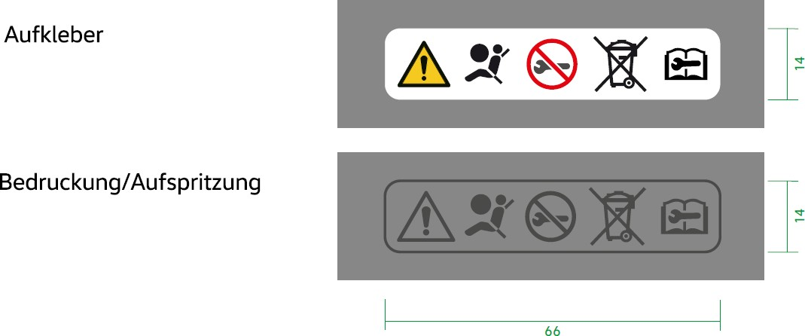

V33.00_BT-LAH_Final_Basismodul-TE-V33.01_Mai[redacted-ext]
Konzern-Bauteillastenheft
Fahrerairbag
[redacted]: LAH.DUM.880.AT
|
|
|---|---|
|
|
|
|
|
|
|
|
| [redacted-person] |
|
|---|
|
|
| [redacted-person] |
|
|
|
|
Änderungsdokumentation
[I: BT-LAH-941]
Zum leichteren Auffinden der Änderungen gegenüber dem letzten Stand, sind diese mit einem senkrechten Balken am linken Seitenrand gekennzeichnet.
Inhaltsverzeichnis
[I: BT-LAH-4]
Das vorliegende Bauteil-Lastenheft (BT-LAH) ist angelehnt an die Struktur des VDA- [redacted-person] 2 (www.vda-qmc.de) und beschreibt komponentenspezifische Anforderungen. Das VDA-Modul 1 wird durch die [redacted-co]99000 abgebildet und beschreibt komponentenübergreifende allgemeine Anforderungen zur Leistungsbringung im Rahmen der Bauteilentwicklung.
[I: BT-LAH-13]
Die vom Auftragnehmer zu erfüllenden Anforderungen sind in der Identifikationsnummer (z. B: [A: BT-LAH-1]) grundsätzlich durch ein "A" gekennzeichnet. Textteile, die durch ein "I" gekennzeichnet sind, sind Informationen zum besseren Verständnis des BT-LAH. Gibt es keine Identifikationsnummer oder keine Kennzeichnung mit "A" bzw. "I", so handelt es sich ebenfalls um eine Anforderung.
[redacted-person]
[A: BT-LAH-5]
Das vorliegende Bauteil-Lastenheft und die Norm [redacted-co]99000 inkl. Teil 1 bis Teil 4 sind zusammen Grundlage des zu erbringenden Leistungsumfanges des Auftragnehmers.
[A: BT-LAH-6]
Dieses BT-LAH beschreibt Leistungen, Anforderungen, Prüf- und Erprobungsbedingungen, die das zu entwickelnde Produkt und der Auftragnehmer erfüllen müssen.
Das BT-LAH beschreibt die an das zu entwickelnde Bauteil gestellten Leistungs- und Funktionsanforderungen sowie die hierfür zu erbringenden Entwicklungsleistungen des Auftragnehmers.
Abweichungen vom BT-LAH sind immer mit dem Auftraggeber abzustimmen.
Inhalte dieses BT-LAH dürfen Dritten ohne ausdrückliche Genehmigung des zuständigen Fachbereiches des Auftraggebers nicht zugänglich gemacht werden.
Das vorliegende [redacted-prj] (BT-LAH) ist gemeinsam mit dem jeweiligen projektspezifischen Lieferumfangslastenheft (PL-LAH) gültig.
Wenn für einzelne Fahrzeugprojekte keine PL-LAH existieren, dann gilt das BT-LAH. D.h., alle Bezüge auf ein PL-LAH beziehen sich dann auf dieses BT-LAH.
Vertraulichkeitshinweis
[I: BT-LAH[redacted-ext]]
Vertraulich. [redacted-person] vorbehalten. Weitergabe oder Vervielfältigung ohne vorherige schriftliche Zustimmung des Fachbereiches der [redacted-person] verboten. Vertragspartner erhalten dieses Dokument nur über die zuständige Beschaffungsabteilung.
© [redacted-person]
[redacted-person] muss alle Anforderungen des BT-LAH auf Vollständigkeit, Widerspruchsfreiheit, Realisierbarkeit und Stand der Technik überprüfen.
[redacted-person] kann und muss während des Entwicklungszeitraumes nach Konzeptverabschiedungen gegebenenfalls korrigiert oder ergänzt werden.
[redacted-person] muss sich mit den zuständigen Fachabteilungen (Gefahrgutbeauftragter, Produktionsplanung, Produktion, [redacted-person], Berufsgenossenschaft, Gesundheitsschutz, etc.) bzgl. Montage, Lagerung an der Montagelinie, inner- und außerbetrieblicher Transport, Verpackung abstimmen.
[redacted-person] der Qualitätsfähigkeit der (eventuellen) Zweit- oder Unterlieferanten mittels System-, Verfahrens- und Produktaudits hat grundsätzlich mit der evtl. notwendigen Aufqualifizierung zu erfolgen und muss bis PVS abgeschlossen sein. Die [redacted-co]tierung muss durch einen vom VDA (oder vergleichbar, z. [redacted-person]) zugelassenen [redacted-co]tor erfolgen.
[redacted-person] für die Kennzeichnung (Baugruppen-Katalog [redacted]) und der entsprechenden Airbag-Wartungshinweise ist in Abstimmung mit den zuständigen Fachabteilungen (Rechtswesen, Fahrzeugsicherheit, Konstruktion, Design) umzusetzen.
Es gelten die Projektvorgaben der [redacted-co]99 000 und die nachfolgend beschriebenen Anforderungen.
[redacted-person] ist mit der uneingeschränkten Fahrzeugfreigabe (nicht mit der Baumusterfreigabe) seitens des Auftraggebers abgeschlossen.
[redacted-person] eines Auftragnehmers muss dieser nach den konzernweit abgestimmten Bewertungskriterien der [redacted-co] (bauteilbezogene Beurteilung von Entwicklungspartnern) auditiert und zugelassen sein. Dazu ist es notwendig, dass der Auftragnehmer über Erfahrung aus ähnlichen Projekten sowie über nachweisbar ausreichende Entwicklungskompetenz bzw. Entwicklungskapazitäten und über die geforderte Ausrüstung im Versuch, Labor, CAD-Bereich und Prototypenbau verfügt. [redacted-person] der Versuchsdurchführung und Entwicklung ist vor Beauftragung zu benennen.
In Abstimmung mit der [redacted-person] sind vor Vergabe des [redacted-person] und Lenkräder sowie die dazugehörigen validierten Simulationsmodelle kostenfrei bereitzustellen. Mit diesen Modulen werden dynamische Versuche zur Bewertung der Rückhaltewirkung durchgeführt.
[redacted-person] und Zielvorgaben des Modul- und Simulationsmodellaufbaus sind im Vorfeld mit der [redacted-person] abzustimmen. [redacted-person] des dynamischen Prüfstandes wird vom Auftraggeber bereitgestellt.
Eine aktive Mitarbeit des Auftragnehmers im auftraggeberinternen Abstimmprozess ist notwendig. [redacted-person] ist in deutscher Sprache durchzuführen, Abweichungen sind nur nach Absprache mit dem jeweiligen Auftraggeber möglich.
Kurzbeschreibung des Entwicklungsumfanges
Es ist ein Fahrer-Airbagmodul zu entwickeln.
Zielsetzung
Es ist ein Fahrerairbagmodul unter Erfüllung aller Terminvorgaben zu entwickeln, welches alle aktuellen und zu erwartenden Gesetze der Zielmärkte sowie alle Vorgaben des vorliegenden Konzern-Bauteillastenheftes (BT-LAH) erfüllt.
Das vorliegende BT-LAH und alle aufgeführten mitgeltenden Unterlagen dienen zur Festlegung der technischen Daten und Randbedingungen für den zu beschreibenden Leistungsumfang vom Fahrerairbag. [redacted-person] umfasst das komplette Airbagmodul und sein einwandfreies Zusammenwirken innerhalb des Gesamtfahrzeuges.
[redacted-person] sind Vorschläge zur Produktverbesserung zu erarbeiten. Insbesondere sind die Einsatzmöglichkeiten neuer Werkstoffe und Methoden zur Verbesserung der Fahrzeugsicherheit und zur Reduzierung des Gewichts mit den Fachabteilungen zu diskutieren.
Zuordnung der Komponente
Zielfahrzeug(e)
Siehe 2.3.3
Einsatzort und Zielmarkt
Siehe 2.3.3
Die relevanten Gesetzesanforderungen der Zielmärkte sind zu erfüllen.
Variantenmanagement
[A: BT-LAH-21]
[A: BT-LAH-25]
[A: BT-LAH-916]
Ab Projektstart wird vom Auftraggeber ein Variantentarget („VAMOS-Variantenbaum“) vorgegeben und separat zur Verfügung gestellt.
Das vorgegebene Variantentarget ist einzuhalten. Abweichungen sind mit dem Auftraggeber abzustimmen.
Ist für den Auftragnehmer im Verlaufe des Entwicklungsprozesses eine Erfüllung der Anforderungen durch dieses Variantentarget nicht möglich, ist dies unmittelbar mit den Fachabteilungen des Auftraggebers abzustimmen. Änderungen hinsichtlich der Varianten des Bauteils müssen über das System VAMOS dokumentiert werden.
Sollten zusätzliche Varianten notwendig sein, sind Szenarien aufzuzeigen und zu bewerten, wie bereits bestehende Varianten kompensiert werden können.
[redacted-person] inklusive der Lagerhaltung und Logistik sind durch den Auftragnehmer zu tragen.
[redacted-person] siehe auch:
projektspezifisches LAH.XXX.880 von EKSR/2
für [redacted-co] gilt: LAH.XXX.419 von [redacted-person]-42
[redacted-person]-Varianten dürfen hinsichtlich:
Luftsackentfaltung
Luftsackpositionierung
Rückhaltewirkung keine Unterschiede zeigen.
[redacted-person] sind in diesem Zusammenhang alle Modulvariationen gemeint, die innerhalb eines Fahrzeugderivates und Zielmarkts angefragt werden. [redacted-person] sind unter anderem zu betrachten:
Airbagmodul mit Tilger
Airbagmodul mit Multifuntkionskabel
Unterschiede in der Airbagcovergeometrie
Adaptivität, Tiefenadaptivität
Stufigkeit des Gasgenerators
Materialvariationen im Airbagmodul
lokalisierte Airbagkomponenten
sowie ggf. weitere Varianten, ausgenommen Farb- und Schaltervariationen.
[redacted-person] der Varianten ist in dynamischen und statischen Ersatzversuchen durch den Auftragnehmer zu entwickeln und durch den beauftragten Rückhaltesystementwickler im Gesamtfahrzeugumfeld zu bestätigen. Bei bestehenden Unterschieden sind durch den [redacted-person] zu erarbeiten und im Modul zu integrieren.
Entwicklungs- und Lieferumfang
Es gelten die Anforderungen des Kapitels "Entwicklungs- und Lieferumfang" der [redacted-co]99000.
Im Rahmen der Forward-[redacted-person] wird über das Neuteilinformationsblatt die KV-Quote vorgegeben, welche im Rahmen der Vergabeverhandlungen vereinbart wird.
(Gilt nicht für [redacted-co].)
[A: BT-LAH-936]
Für [redacted-co] gilt:
Es gelten die Anforderungen der Konzeptverantwortungsvereinbarung.
Die KV-Quote wird im Rahmen der Vergabeverhandlungen ggf. separat vereinbart.
[redacted-person] der Bauteil-Baumusterfreigabe sind für alle Varianten sowohl das BT-LAH, die PL-LAH´s, die Rückhaltesystemlastenhefte als auch alle anderen mitgeltenden Unterlagen zu erfüllen sowie die Funktion in den Gesamtfahrzeugen sicherzustellen.
[redacted-person] hinsichtlich der Erfüllung aller Anforderungen liegt beim Auftragnehmer.
Alle zur Erstellung des Lieferumfangs notwendigen Leistungen werden vom Auftragnehmer erbracht bzw. koordiniert. [redacted-person] hat dafür Sorge zu tragen, dass für die benötigten Einzelteile, soweit auf dem Markt verfügbar, ein Zweitlieferant (second source) existiert. Alternativ
ist ein Absicherungskonzept vorzulegen. Für jedes benötigte Einzelteil muss neben dem Lieferantennamen auch der Fertigungsort angegeben werden.
[redacted-person] verpflichtet sich, alle beschriebenen Anforderungen des PL-LAH´s dem Angebot zugrunde zu legen. Er haftet für die vertragsgemäße Beschaffenheit des Liefergegenstandes, insbesondere für die Einhaltung von Beschaffenheits- und Haltbarkeitsgarantien, welche ausdrücklich als solche bezeichnet sind.
[redacted-person] oder Abweichungen müssen ausdrücklich im Angebot bzw. beim Entwicklungsvertragsabschluss ausgewiesen und mit der [redacted-person] des Auftraggebers abgestimmt sein. Diese müssen vor Auftragsvergabe schriftlich vom Auftraggeber bestätigt werden.
Ansonsten werden mit Abgabe eines Angebotes alle PL-LAH-Anforderungen akzeptiert.
In diesem BT-LAH nicht enthaltene Anforderungen sind vom Lieferanten beim Auftraggeber und Verfasser aufzuzeigen, nicht ausreichend beschriebene Punkte müssen in Absprache mit den Fachbereichen des Auftraggebers im Vorfeld geklärt werden und bedürfen der schriftlichen Zustimmung. Dies gilt insbesondere für Abweichungen von Standardforderungen.
[redacted-person] muss die ausgefüllte [redacted-person] Fahrer (siehe Anhang) beigefügt werden.
Sämtliche 3D-Datenmodelle in Freigabequalität und die unter Kapitel 2.6.3 näher definierten Musterteile für folgende Freigaben sind im Lieferumfang enthalten:
P-Freigabe, B-Freigabe, Baumuster, Erstmuster
[redacted-person] ist nach Vorgabe der Fahrzeugsicherheit bis zur Serienreife zu entwickeln.
[redacted-person] endet nicht mit der Erteilung der BMG, sondern der letzten K-Freigabe einer Vergabetranche, sofern eine [redacted-person] war.
Erst mit Erteilung der BMG und der letzten K-Freigabe (laut Vamosbaum) ist der Entwicklungsauftrag abgeschlossen. Bis zu diesem Zeitpunkt sind sämtliche Änderungen für den Auftraggeber vollständig kostenneutral.
[redacted-person] übernimmt die Entwicklung und Fertigung eines wettbewerbsfähigen Produktes auf Basis der PL-LAH´s unter Ausnutzung aller am Markt verfügbaren Technologien.
Das zu entwickelnde Produkt soll ein Optimum an Schutzpotential für alle Fahrzeuginsassen bei gleichzeitiger Minimierung des Risikos airbaginduzierter Verletzungen bieten.
Der Entwicklungsumfang beinhaltet:
die Airbagmodulentwicklung mit entsprechenden Standversuchen und Umweltsimulationen inkl. Sicherstellung der vollen Modulintegrität mittels geeigneter Versuche sowie Simulation bis zur Serienfähigkeit
die Mitarbeit bei der Abstimmung im Gesamtrückhaltesystem (Airbag, Gurte, Gurtkraftbegrenzer, Kniefänger/Knieairbag, Verkleidungsteile, inkl. der Erstellung von entspr. Simulationsmodellen)
Die erweiterte Erprobung im Schlittenversuch durch Variation von Insassengröße und - position, Sitzeinstellung, Temperatureinfluss
die Mitarbeit an der Integration des Moduls ins Fahrzeugumfeld
die OoP Entwicklung (NAR) des Fahrerairbag, fahrzeugspezifisch nach FMVSS 208
Die zur Durchführung von Vorversuchen, Einbauuntersuchungen, Freigabeprüfungen und Simulationen beim Auftraggeber und beim Rückhaltesystementwickler benötigten Versuchsteile (z.[redacted-person] Crash-, Schlitten-, MeRKE-, Standversuche, EMV-/ESD-Messungen, Schraubreihenuntersuchungen, Klimarütteldauerlauf, etc.) sind kostenfrei, frei Haus (jeweiliger Versuchsort) zur Verfügung zu stellen und anzuliefern. Zugehörig zu den angelieferten Airbagmodulen sind dem [redacted-person] der verbauten Gasgeneratoren zur Verfügung zu stellen.
[redacted-person] sowie die Anzahl ergeben sich aus der aktuellen Crash- und Subsystemversuchsplanung und sind rechtzeitig beim Auftraggeber bzw. dem Systementwickler einzuholen um einen planmäßigen Ablauf der Versuche zu gewährleisten. Sofern bei Abstimmung des RHS-[redacted-person] am Modul (Luftsack, Auslassöffnung, -größen, -positionen oder Gasgeneratorbeladung) erforderlich sind, sind die geänderten Teile nach Absprache mit der Fachabteilung des Auftraggebers umgehend nach Festlegung der Änderung am Erprobungsstandort zur Verfügung zu stellen.
Spätestens zwei Monate vor B-Freigabe muss in Absprache mit dem Auftraggeber ein Fahrerairbagmodul verfügbar sein, das zur B-Freigabe eine zielführende Entfaltung, Gasgeneratorleistung, Aufblaszeit, AÖ-Position und -Größe, Modulintegrität, Adaptivität, Tiefenadaptivität, OoP- und InPos-Erfüllung absichert.
Der Lieferumfang Fahrerairbagmodul beinhaltet:
Gasgenerator
ggf. Modulverkablung inkl. Kabelschutz
Befestigungsmöglichkeit einer Zugentlastung
Gasgeneratoraufnahme
Modulgehäuse
Tilger
Luftsack
Airbagcover
Luftsackbefestigung
Transportschutzmaßnahmen
Ggf. Bauelemente für [redacted-person], Tiefenadaptivität
Warnhinweis und Matrixcode
[redacted-person], die hier nicht aufgeführt sind, jedoch zur Erfüllung von LAH- Anforderungen benötigt werden
Änderungen
[redacted-person], welche Änderungsumfänge innerhalb des BT-LAHs zu berücksichtigen bzw. welche Umfänge separat zu vereinbaren sind, ist in der [redacted-co]99 000 festgelegt.
Es ist davon auszugehen, dass sich der Funktionsumfang (z. [redacted-person], …) der Bauteile im Laufe der Entwicklung ändern oder erweitern kann. Dafür sind bereits ab der Konzeptphase bis Projektende ausreichend Kapazitäten einzuplanen, um die vorgegebenen Termine einhalten zu können.
In den Lastenheften (BT- und PL-) nicht abgedeckte, grobe Konzeptänderungen bedürfen einer erneuten Bewertung (z.[redacted-person] Design). [redacted-person] der Lastenheft-Inhalte (BT- und PL-) entstehende Kostenveränderungen sind separat zu verhandeln.
[redacted-person] (z. [redacted-person] Bauteilen und Prozessen) - auch nach Serieneinsatz - müssen mit dem Auftraggeber abgestimmt werden. Sie werden vom Auftragnehmer anhand von 3D- Datenmodellen, Musterteilen und Änderungsprüfprogrammen dargestellt und vom Auftraggeber genehmigt.
Änderungen werden über auftraggeberseitige Änderungsprozesse abgewickelt. Voraussetzung für die Freigabe der Änderung ist eine Zeichnung, die die Änderung beschreibt und dokumentiert, sowie das abgeschlossene Änderungsprüfprogramm. [redacted-person] im Zusammenhang mit der Erfüllung aller LAH- Anforderungen werden nicht vergütet. [redacted-person] werden für jede Änderung in Rechnung gestellt.
[redacted-person] nach der Lieferung der Erstmuster auf, ist ebenfalls in Absprache mit den Fachabteilungen des Auftraggebers eine kostenlose Neubemusterung vorzunehmen. [redacted-person] ohne ausdrückliche Genehmigung des Auftraggebers erlischt die Freigabe. Es erfolgt ein erneuter Freigabeprozess.
Die erforderlichen Freigabeformulare (siehe Anhang) für die Änderungen sind in Absprache dem Auftraggeber mitzuliefern.
Angebotsumfang
[A: BT-LAH-33]
[redacted-person] verpflichtet sich, alle Anforderungen dem Angebot als vereinbarte Beschaffenheit zugrunde zu legen. Abweichungen vom BT-LAH sind dem Angebot beizufügen und zu dokumentieren.
[I: BT-LAH-837]
[redacted-person] eines Auftragnehmers muss dieser nach den konzernweit abgestimmten Bewertungskriterien des Auftraggebers (bauteilbezogene Beurteilung von Entwicklungspartnern) auditiert und zugelassen sein.
[A: BT-LAH-34]
Mit dem Angebot sind vom Auftragnehmer folgende Unterlagen den technischen oder zuständigen Fachabteilungen des Auftraggebers zur Prüfung vorzulegen:
[A: BT-LAH-35]
[redacted-person] muss die Liste der offenen Punkte und Abweichungen vom BT-LAH (analog zur Struktur des BT-LAH) mit den Angebotsunterlagen dem Auftraggeber zur Verfügung stellen.
[A: BT-LAH-36]
[redacted-person] muss das Pflichtenheft mit den Angebotsunterlagen dem Auftraggeber zur Verfügung stellen.
[A: BT-LAH-930]
[redacted-person] muss das Pflichtenheft in folgendem Dateiformat aushändigen: PDF / DOC / XLS
[A: BT-LAH[redacted-ext]]
[redacted-person] muss den Erfahrungsnachweis aus ähnlichen Projekten mit den Angebotsunterlagen dem Auftraggeber zur Verfügung stellen.
[A: BT-LAH[redacted-ext]]
[redacted-person] muss den Nachweis über ausreichende Entwicklungskompetenz bzw. Entwicklungskapazitäten mit den Angebotsunterlagen dem Auftraggeber zur Verfügung stellen.
[I: BT-LAH-38]
Die ausreichende Entwicklungskapazität ist durch den Bericht des letzten TE-[redacted-co]ts und eine Entwicklungs-Kapazitätsplanung über Projektlaufzeit, die auch Engpässe bei anderen Aufträgen des Auftragnehmers berücksichtigt, aufzuzeigen.
[A: BT-LAH[redacted-ext]]
[redacted-person] muss den Nachweis über die geforderte Ausrüstung im Versuch, Labor, CAD-Bereich mit den Angebotsunterlagen dem Auftraggeber zur Verfügung stellen.
[A: BT-LAH[redacted-ext]]
[redacted-person] muss den Erfahrungsnachweis im Prototypenbau (insbesondere bei sicherheitskritischen Bauteilen) mit den Angebotsunterlagen dem Auftraggeber zur Verfügung stellen.
[A: BT-LAH-41]
[redacted-person] muss den Projektstrukturplan gemäß [redacted-co]99000 mit den Angebotsunterlagen dem Auftraggeber zur Verfügung stellen.
[A: BT-LAH-42]
[redacted-person] muss den Projektterminplan gemäß [redacted-co]99000 mit den Angebotsunterlagen dem Auftraggeber zur Verfügung stellen.
[A: BT-LAH-43]
[redacted-person] muss das Montage- und Befestigungskonzept mit den Angebotsunterlagen dem Auftraggeber zur Verfügung stellen.
[A: BT-LAH-44]
[redacted-person] muss die Angaben zum Eigen- und Fremdanteil der Entwicklungsaktivitäten mit den Angebotsunterlagen dem Auftraggeber zur Verfügung stellen.
[A: BT-LAH[redacted-ext]]
[redacted-person] muss die Angaben zum Eigen- und Fremdanteil der Produktionsaktivitäten mit den Angebotsunterlagen dem Auftraggeber zur Verfügung stellen.
[A: BT-LAH-45]
[redacted-person] muss den Erprobungsplan/Testmanagement mit den Angebotsunterlagen dem Auftraggeber zur Verfügung stellen.
[A: BT-LAH-46]
Werkstoffkonzept aller Einzelbauteile (nur Werkstoffe, keine Reinstoffangaben erforderlich)
QM-Plan
[A: BT-LAH-48]
Verwertungskonzepte nach [redacted-co]91102, Beiblatt 3
[redacted-person] durchzuführende Simulationen
Entwicklungskosten für:
Gruppe 1: Entwicklungsversuche
Gruppe 2: Dokumentationsversuche nach diesem Lastenheft. Entwicklungsversuche, die den Serienstand beinhalten und sich in Gruppe 2 eingliedern lassen, können dort angerechnet werden.
[redacted-person] für Koordination und Beschaffung von Versuchsteilen bei den Bauteillieferanten
[redacted-person] für eine NAR taugliche Entwicklung sind gesondert auszuweisen
[redacted-person] sind in einem gesonderten Formblatt (siehe Anlage) auszuweisen. [redacted-person] Fahrer (siehe Anhang)
Angebotszeichnung
[redacted-person] der Unterlieferanten mit Fertigungsstätte und Qualitätseinstufung. Stehen die Unterlieferanten noch nicht fest, ist ein entsprechender Beschaffungsplan vorzulegen.
[redacted-person]- und [redacted-person]
Konzept für elektrische Kontaktierung und [redacted-person] Meilenstein-[redacted-person] insbesondere für Neukonzepte
Im Verlauf der Entwicklung schriftlich vom Auftraggeber festgelegte und akzeptierte Termine werden Bestandteil der PL-LAH´[redacted-person] können nur im Einvernehmen mit dem Auftraggeber geändert werden.
Es ist ein [redacted-person] auszufüllen (siehe Anhang). [redacted-person] ist als unteilbarer Bestandteil dieses Lastenheftes zu sehen und dem Einkauf und der Entwicklungsabteilung des Auftraggebers vollständig ausgefüllt bei Angebotsabgabe zu übergeben.
Für [redacted-co] gilt:
[A: BT-LAH[redacted-ext]]
Es ist der Nachweis zu erbringen, dass das in Kapitel "2.9 Anforderungen an Kenntnisse im Produktdaten-Management" geforderte Anforderungsprofil bereits erfüllt ist oder zum Zeitpunkt der Beauftragung erfüllt sein wird, z. [redacted-person] entsprechende Qualifizierungsnachweise.
Entwicklungsablauf
Terminplan und Meilensteine
[I: BT-LAH-59]
Der aktuelle Terminplan wird von der Beschaffung des Auftraggebers den Anfrageunterlagen beigefügt.
[redacted-person] erwartet von den beteiligten Komponentenlieferanten/-entwicklern und dem Rückhaltesystemlieferant/-entwickler, dass gemeinsam Rahmenbedingungen definiert und Vereinbarungen getroffen werden, die eine reibungsfreie Zusammenarbeit im Sinne einer gemeinsamen, erfolgreichen Projektzielerfüllung ermöglichen. [redacted-person] von Geheimhaltungs-, Patent-, Know-How-Ansprüchen sind zwischen diesen Parteien ggf. gesonderte Vereinbarungen zu treffen.
Wurde ein Rückhaltesystemlieferant benannt, stellt dieser einen aktuellen und regelmäßigen Informationsaustausch mit allen beteiligten Entwicklungspartnern sicher. Darüber hinaus organisiert er regelmäßige Treffen mit allen Beteiligten.
Wenn der Komponentenlieferant/-entwickler oder Rückhaltesystemlieferant/-entwickler erkennt, dass vertraglich festgelegte Ziele durch Ursachen in seinem oder dem Verantwortungsumfang des Auftraggebers nicht, nur verspätet oder nur mit einem erhöhten Kostenaufwand zu erreichen sind, so ist der Auftraggeber sofort zu informieren. Es sind Vorschläge auszuarbeiten, die zur Beseitigung der entstandenen Probleme geeignet sind. [redacted-person] bewertet dann die eingereichten Vorschläge und entscheidet darüber, ob und nach welchem technischen Konzept die gemeinsame Entwicklung fortgesetzt wird. [redacted-person] für die Einhaltung der Ziele
bleibt in vollem Umfang beim Komponentenlieferanten/-entwicklern und dem Rückhaltesystemlieferant/-entwickler bestehen.
[redacted-person] der Arbeiten hat der Auftraggeber das Recht, die bis dahin erreichten Ergebnisse für eigene Zwecke und für alle Gesellschaften [redacted-co] ohne Einschränkung zu verwenden, ohne dafür besondere Vergütungen zu leisten.
Darin enthalten ist auch die Befugnis, die Leistungen auf dem erreichten Stand durch Dritte fortführen zu lassen.
Mindestens folgende Meilensteine sind bereits bei der Angebotserstellung für die Airbagmodule zu berücksichtigen und deren Einhaltung durch Vorlage eines Entwicklungsterminplanes bei der Fachabteilung des Auftraggebers nachzuweisen. [redacted-person] hat der Auftragnehmer die Aufgabe, diese Meilensteine in einen mit allen Beteiligten abgestimmten Projekt-Terminplan einzuarbeiten:
Termine laut Beschaffung
[redacted-person]
Erstellung von HWZ und SWZ
Verfügbarkeit von Prototypen und Musterteilen
Teilebereitstellung A-/B-/C-Muster
Termin für Bauteile aus SWZ mit Note 3 und Note 1
Termine für P-, B- , K- bzw. E-Freigabe sowie BMG
Werkzeugverlagerungstermine
Start und Fertigstellung von Fertigungslinie(n)
Vorabfreigabe für TE- und Q-Fahrzeuge. [redacted-person] betrifft Erprobungsfahrzeuge, wie z.
[redacted-person], Dauerlauffahrzeuge, Fahrzeuge für den Q-Absicherungslauf, etc.
UWS
Erstmusterfreigabe
[redacted-person] nach [redacted-co]82513
OGL/UGL Gasgeneratorverfügbarkeit
Grenzmaterialien/-fertigungsprozesse
CE-[redacted-person] und Modul
Transport- / DOT- Zulassungen
[redacted-person] ist von dem Auftragnehmer zu erstellen und immer auf den aktuellen Stand zu halten.
Hier werden analog der Vergabeanforderungen alle relevanten Projekttermine und Meilensteine aufgelistet, z. [redacted-person], P-Freigabe, SOP, [redacted-person]/Winter, Bereitstellungstermine für 3D-Datenmodelle, Musterteile inkl. Mengenangabe, Baustufen, Prototypenbauplan, [redacted-person], etc..
[redacted-person] muss eine Teilebereitstellung zum jeweiligen TBT der unten genannten Projekt- Meilensteine sicherstellen. [redacted-person], wie Werkzeugerstellung (PWZ, SWZ), Zwischenfreigaben etc., sind mit auszuweisen.
|
|---|
|
|
|
|
Aktuelle und verbindliche Termine werden vom Einkauf vorgegeben. Der kritische Pfad ist zu identifizieren.
Die vom Auftraggeber vorgegebenen Termine sind bindend einzuhalten. Abweichungen sind nur mit Zustimmung des Auftraggebers zulässig. Abweichungen vom Terminplan sind unverzüglich und ohne Aufforderung den Auftraggeber verantwortlichen mitzuteilen. Gleichzeitig ist der Abweichungsgrund sowie eine geeignete Abhilfemaßnahme zur Erreichung des ursprünglichen Zieltermins aufzuzeigen.
[redacted-person] des Gesamtterminplans ist in elektronischer Form zur Verfügung zu stellen. Die elektronische Version soll entsprechend dem mit dem Auftraggeber vereinbarten Projektplanungssystem (z. [redacted-person] RPlan) zur Verfügung gestellt werden.
[A: BT-LAH[redacted-ext]]
Für allgemein bauartgenehmigungspflichtige Bauteile (ABG) sind vom [redacted-person] inkl. Testreport (z. [redacted-person] ECE, CCC, Taiwan) an den jeweiligen bauteileverantwortlichen Konstrukteur zu liefern, der es an die Typprüfabteilung der Marke (siehe auch [redacted-co]01155) weiterleitet.
[redacted-person] hat hausintern ein Projektteam inklusive Projektleiter zu benennen. [redacted-person] im Team sind vor der Auftragsvergabe aufzuzeigen, die Verantwortlichkeiten sind in Form eines projektspezifischen Organigramms darzustellen. Unterauftragnehmer sind mit aufzuführen.
[redacted-person] für die [redacted-person] Fahrerairbag besteht aus:
dem [redacted-person] Lenkrad + Fahrerairbag des Auftragnehmers
dem Projektingenieur / -konstrukteur des Auftragnehmers
dem [redacted-person]
dem [redacted-person] des Auftragnehmers
dem Rückhaltesystementwicklungsverantwortlichen beim Auftraggeber
dem [redacted-person] beim Auftraggeber
dem [redacted-person] Auftraggeber
[redacted-person] trifft sich regelmäßig während des gesamten Entwicklungsablaufs. [redacted-person] des Zusammentreffens richtet sich nach dem Projektablauf und wird gemeinsam mit dem Auftraggeber festgelegt.
In Absprache mit dem Auftraggeber ist der [redacted-person] zuständig für:
die Koordination der [redacted-person] Fahrerairbag
das selbstständige Einholen und Weitergeben von Informationen zwischen allen betroffenen Entwicklungspartnern
das Erarbeiten von Synergielösungen bei auftretenden Zielkonflikten zwischen den einzelnen Entwicklungspartnern und das Abstimmen dieser Lösungen mit dem Auftraggeber
die Erfüllung der Vorgaben des BT-LAH sowie für die Funktion seiner Komponente im Fahrzeug
Teilnahme an der [redacted-person]
Teilnahme an der [redacted-person]
[redacted-person] behält sich vor, bei Bedarf zusätzliche Vertreter des Auftragnehmers, z. [redacted-person] Berechnung, Konstruktion, etc., in dieses Team einzuberufen.
Ab Projektstart führt der Auftragnehmer eine „To Do Liste“, in der sämtliche offene Punkte, Arbeitspakete, unerledigte Aktionen usw. chronologisch geführt werden.
[redacted-person] ist ständig zu aktualisieren und den zuständigen Verantwortlichen beim Auftraggeber in elektronischer Form (Excel-Datei) spätestens zwei Werktage nach dem Besprechungstermin zur Verfügung zu stellen. [redacted-person]:
Metriken zur Projektverfolgung
[A: BT-LAH-73]
[redacted-person] liefert im Rahmen der Fortschrittsberichte die erforderlichen Daten für folgende Metriken:
Meilensteintrendanalyse basierend auf den vereinbarten Meilensteinen
[A: BT-LAH-74]
[A: BT-LAH-75]
Vergleich der geplanten und der tatsächlichen Dauer der Aktivitäten und Arbeitspakete basierend auf dem Projektterminplan
Fehlerverfolgung inkl. Priorisierung und Bearbeitungsstatus
[A: BT-LAH-76]
[A: BT-LAH-77]
Weitere projektspezifische technische Metriken, die kritische Aspekte messen, werden zwischen den Projektverantwortlichen des Auftragnehmers und des Auftraggebers abgestimmt.
Musterstände und Musterstückzahlen
[A: BT-LAH-93]
[redacted-person] von Mustern sind die Musterstände für ZSB bzw. Systeme, Einzelteile, Komponenten mit dem Auftraggeber abzustimmen.
[A: BT-LAH-94]
[redacted-person] muss mit dem aktuellen Stand (HW, SW, EEPROM, Mechanik) gekennzeichnet werden.
[A: BT-LAH-838]
[redacted-person] von 3D-CAD-Daten (digitaler Prototyp) hat zu einem definierten Zeitpunkt vor Lieferung der Musterteile zu erfolgen.
Bei funktionalen Änderungen mit Auswirkung auf die Rückhaltewirkung sind aktualisierte, validierte Simulationsmodelle innerhalb von vier Wochen zur Verfügung zu stellen. Für jeden Bauteilstand muss das jeweils gültige Simulationsmodell eindeutig zugeordnet und dokumentiert werden.
Mindestens für alle geplanten Baustufen und Erprobungsfahrzeuge sind Musterteile anzuliefern. Termine und Stückzahlen sind mit dem Auftraggeber abzustimmen.
[I: BT-LAH-839]
[redacted-person] über Fahrzeug-Anzahl und Aufbautermin (virtuell und physisch) sind unter Abschnitt "Terminplan und Meilensteine" festgelegt bzw. dem Prototypenbauplan zu entnehmen.
[A: BT-LAH-924]
Zu berücksichtigen sind auch Musterteile für Vorbau/Vorderwagen und Unterflurmodelle, falls packagerelevante Änderungen (laut [redacted-co]99000 Kapitel "Änderungsmanagement") an dort verbauten Bauteilen vorgenommen werden.
[I: BT-LAH-925]
[redacted-person] können sein:
Geometrieänderungen
Wechsel des Werkzeugentwicklungsstandes (Prototypen-Werkzeug, Serien-Werkzeug)
Die während der Entwicklung vom Auftraggeber (Fahrzeugsicherheit) benötigten Versuchsteile sind kostenfrei zur Verfügung zu stellen und frei Haus anzuliefern (jeweiliger Versuchsort). [redacted-person] werden vor Vergabe vom Auftraggeber separat zur Verfügung gestellt.
[redacted-person] ist vom Auftragnehmer zu führen.
[A: BT-LAH-91]
Die genannte Anzahl an Musterteilen ist Bestandteil des Entwicklungsumfangs und muss vom Auftragnehmer in den Entwicklungskosten berücksichtigt werden. Die genannten Musterteile sind dem Auftraggeber ohne zusätzliche Berechnung und frei Haus anzuliefern.
[A: BT-LAH[redacted-ext]]
Für die Bauteile ist eine Kennzeichnung mit einem RFID-Transponder nach [redacted-co]01067 „Einsatz von Auto-ID zur eindeutigen Objektkennzeichnung“ gefordert.
[A: BT-LAH[redacted-ext]]
[redacted-person] übernimmt das Beschaffen, Beschreiben und Montieren der Transponder, sowie die elektronische Bereitstellung des geforderten Dokumentationsumfangs.
Verantwortungsmatrix
In folgender Tabelle wird festgelegt welcher Entwicklungspartner für die Beschaffung inkl. Bezahlung und Logistik von Versuchsteilen und Versuchsumfängen verantwortlich ist.
|
|
|
|
|
|---|---|---|---|---|
|
|
|
|
|
|
|
|
|
|
|
|
|
|
|
|
|
|
|
|
|
|
|
|
|
Anmerkungen:
Kalkulationswerte für Versuchsteilekosten sind ggf. bei der Beschaffung des Auftraggebers einzuholen.
[redacted-person] von Bauteilfehlverhalten gilt das Verursacherprinzip.
[redacted-person] von beigestellten Karossen erfolgt durch den Auftraggeber
Anzahl kostenfreier Teile (Kontingent) gemäß Vorgabe zur Nominierung
[redacted-person] ist mit dem Auftraggeber abzustimmen
Ein über den vereinbarten Umfang hinausgehender Bedarf an Bauteilen wird nach dem Verursacherprinzip verrechnet. [redacted-person] gilt dann der zur jeweiligen Baustufe vereinbarte Preis.
[redacted-person] aufgrund mangelnder Bauteilvorerprobung bzw. fehlerhafter Komponenten sind angefallene Versuchskosten vom Verursacher zu tragen.
[redacted-person] von Versuchsteilen haben ebenfalls bei mangelnder Versuchsperformance zu erfolgen. [redacted-person] der Versuchsperformance erfolgt durch den Auftraggeber.
Alle darüber hinaus benötigten Prototypenteile für dieses Fahrzeugprojekt werden über das Vorseriencenter (ehemals Versuchsbau) im Rahmen des Forward-Sourcing-Prozesses an die Beschaffung gemeldet. (Gilt nicht für [redacted-co].)
Typprüfung und Zertifizierung
[A: BT-LAH[redacted-ext]]
[redacted-person] muss Fahrzeugteile und [redacted-person] (z. [redacted-person], After-[redacted-person]), welche nach weltweiten Gesetzen, z. [redacted-person], EG, Inmetro (Brasilien), eine Bauartgenehmigung und/oder einen Konformitätsnachweis (für funkbasierte Systeme) benötigen, abhängig vom Einsatzort/Zielmarkt und Fahrzeugmodell zertifizieren und mit der entsprechenden Identifizierung nach Gesetzesvorgabe kennzeichnen.
[A: BT-LAH[redacted-ext]]
[redacted-person], z. [redacted-person] ([redacted-person] Certification) und weitere, sind unabhängig vom Einsatzort/Zielmarkt und Fahrzeugmodell durchzuführen.
[A: BT-LAH[redacted-ext]]
[redacted-person], die nur im Markt NAR (Nordamerika) oder in Rechtslenker-Märkten eingesetzt werden, sind von der Pflicht der China-Zertifizierung ausgenommen.
[I: BT-LAH[redacted-ext]]
Für kennzeichnungs- und bauartgenehmigungspflichtige Märkte erfolgt die Zertifizierung und Kennzeichnung unter Verwendung eines Typisierungsnamens.
[A: BT-LAH[redacted-ext]]
[redacted-person] hinsichtlich der Kennzeichnungspflicht für den [redacted-person] sind in der Konzernnorm VW10511 beschrieben. Falls eine Nennung des Bauteilverwendungsbereichs („Typabgrenzung“) in den Bauartgenehmigungsdokumenten erforderlich ist, erfolgt diese ausschließlich durch den „[redacted-person]“ und/oder die verkürzte Konzernprojektbezeichnung.
[A: BT-LAH[redacted-ext]]
[redacted-person] muss die Zertifikate vor Ablauf ihrer jeweiligen Gültigkeit sowie bei Gesetzesänderungen aktualisieren und rechtzeitig unaufgefordert an den Auftraggeber liefern. Dies gilt über den gesamten Produktlebenszyklus, der auch den Zeitraum der Versorgungs- verpflichtung von [redacted-person] beinhaltet.
[redacted-person] ist zertifikatspflichtig: Ja
[redacted-person] ist typprüfpflichtig: Ja
[I: BT-LAH[redacted-ext]]
[I: BT-LAH-98]
[A: BT-LAH-99]
Bei typprüfpflichtigen Bauteilen sind zum Erfüllungsnachweis der gesetzlichen [redacted-person] in Absprache mit der zuständigen Typprüfabteilung des Auftraggebers, ggf. in Anwesenheit des [redacted-person] bzw. der Behörde, durchzuführen und zu dokumentieren.
Bauteile zur Typprüfung und Zertifizierung sind kostenfrei zur Verfügung zu stellen.
[I: BT-LAH[redacted-ext]]
[redacted-person] ist selbstzertifizierungsrelevant (z. [redacted-person], Korea, etc): Ja
[A: BT-LAH[redacted-ext]]
Für selbstzertifizierungsrelevante Teile muss eine gesetzeskonforme Dokumentation der geforderten, meist experimentellen Nachweise der Gesetzeserfüllung durchgeführt werden.
Fahrzeugteile / Komponenten , welche nach weltweiten Gesetzen, z. [redacted-person], EG, FMVSS, CMVSS und CCC ([redacted-person] Certification), eine Bauartgenehmigung benötigen, sind unabhängig vom Einsatzort/Zielmarkt und Fahrzeugmodell zu zertifizieren und mit der entsprechenden Identifizierung nach Gesetzesvorgabe zu kennzeichnen. Dies gilt auch für spezielle Kundendienstteile.
[redacted-person] des Bauteils entsprechend VW10511 ist vorzusehen.
[redacted-person] ist ERC-relevant: Nein
[I: BT-LAH[redacted-ext]]
[I: BT-LAH[redacted-ext]]
[redacted-person] ist ein Zusammenbau und enthält als Unterkomponente ein ERC-relevantes Bauteil: Nein
Qualität und Zuverlässigkeit
Qualitätskonzepte
[A: BT-LAH[redacted-ext]]
Es gelten die Formel-Q Dokumente mit ihren Unterdokumenten. [redacted-person] muss sich der Auftragnehmer mit dem zuständigen QS-BTV oder QS-Produkttechniker abstimmen
[A: BT-LAH-104]
[redacted-person]: 0 Liegenbleiber (LB) und 0 Schadensfälle (SF) sowie 0-km-Ausfälle mit 0 ppm.
Für [redacted-co] gilt:
[A: BT-LAH-927]
Es gelten die Anforderungen des Qualitätslastenheftes [redacted-co] (LAH [redacted-phone]).
[A: BT-LAH-928]
Für [redacted-co] gilt:
[redacted-person] und Planung muss vom Auftraggeber vorgegebene Prüftechnologien und - Konzepte berücksichtigen.
Risikomanagement (FMEA und FTA)
[redacted-person] führt für die Dauer des Projektes eine Risikomanagement-Methode ein.
[redacted-person] identifiziert und priorisiert vorausschauend Risiken, die technische Fragen, den Zeitplan und die Kosten des Auftraggebers betreffen.
Er trifft Maßnahmen zur Vermeidung, bzw. Minimierung der erkannten Risiken und dokumentiert diese.
Sowohl die Risiken (neue Bewertung, z. [redacted-person] Eintrittswahrscheinlichkeit, potentielle Schadenshöhe und Priorität) als auch die Maßnahmen zur Risikominimierung werden verfolgt und regelmäßig aktualisiert
[redacted-person] erstellt für seine Entwicklungs- und Konstruktionsumfänge eine Konstruktions- und eine Prozess-FMEA. [redacted-person] und die Ausführung der FMEA´s müssen nach entsprechenden Vorgaben zur Konzeptphase vorgelegt und bis zum endgültigen Serienstand der Teile gepflegt, aktualisiert und zum Abschluss gebracht werden.
[redacted-person] der B-Muster muss die Konstruktions-FMEA auf Bauteil- sowie auf Schnittstellenebene erstellt sein und den Vorgaben der [redacted-co]99000 entsprechen. Diese sind nach Absprache dem Auftraggeber zur Einsicht vorzulegen.
[redacted-person], spätestens mit Übergabe der B-Muster, ist eine FTA und eine Ausfallratenanalyse (PCM) vom Auftragnehmer zu erstellen.
Fachbereichs- bzw. projektspezifische DMU-Richtlinien
Es wird ein rechtsdrehendes Koordinatensystem gemäß [redacted-co]01052 verwendet.
[A: BT-LAH[redacted-ext]]
Für [redacted-co] gilt:
[redacted-person] bezüglich CAD und DMU werden im "TE-Infocenter" (https://engineering-portal.audi.web.vwg/) geregelt.
[redacted]01059 (Anforderungen an CAD/CAM – Daten) ist zu berücksichtigen. [redacted-person] eines durchgängigen Einsatzes von DMU sind neben den in Abschnitt 8.1.1 beschriebenen allgemeinen Richtlinien noch fachbereichs- bzw. projektspezifische Richtlinien und Arbeitsanweisungen zu beachten.
In jedem Fall muss auch ein für die Zusammenbausimulation (DMU) geeignetes 3D-CAD-Modell bereitgestellt werden. Darüber hinaus muss der Aufbau und Unterhalt einer arbeitsfähigen Datenfernübertragungs (DFÜ)-Anbindung sowie der Einsatz des Kennsatzmoduls KVS des Auftraggebers für alle CATIA-Daten sichergestellt werden.
[redacted-person] der aktuellen CAD-Modelle unter der Teilenummer im Konstruktionsdatenverwaltungssystem (KVS) ist auf Anforderung des Auftraggebers durch den Auftragnehmer durchzuführen.
Die CAD-Daten müssen die CAD-[redacted-person] zur Nutzung im DMU-Prozess enthalten:
Geometrieuntermenge DMU
Positionierung im projektspezifischen Koordinatensystem
Spiegel- und Symmetriegeometrie
Mehrfachverbauung
[redacted-person] an den regelmäßig stattfindenden DMU-Modulgesprächen, die den aktuellen Entwicklungsstand digital zeigen und zur Abstimmung der weiteren Vorgehensweise dienen, wird gefordert.
[redacted-person] an den Auftraggeber und Kennzeichnung aller für die Teileanfertigung (Laminate, Vorserienwerkzeuge, Serienwerkzeuge, etc.) vorgesehenen CAD-Modelle ist vorzunehmen.
Für bewegte Bauteile sind neben der statischen Beschreibung in 3D auch die Bewegungsfreiräume in Form von dynamischen Geometriehüllen bereitzustellen.
Für die Freigabe vorgesehene CAD-Modelle sind unter Einhaltung aller Anforderungen der Konzern-CAD-Richtlinien unter der Teilenummer ins KVS zu übermitteln.
Für [redacted-co] gilt: Anforderungen an Kenntnisse im Produktdaten-Management
[I: BT-LAH[redacted-ext]]
Für [redacted-co] gilt:
Zur prozesssicheren Einsteuerung von Entwicklungsergebnissen in die Systeme des Auftraggebers sind Grundkenntnisse über das Produktdaten-Management ([redacted]) unerlässlich.
Für [redacted-co] gilt:
[A: BT-LAH[redacted-ext]]
[redacted-person] des LAH.[redacted-phone]AF „Anforderungsprofil für die Beauftragung von technischen Regeln zur Aufnahme im System MBT“ sind zu erfüllen.
Verantwortlichkeiten im Projekt und Projektstrukturplan
[A: BT-LAH-122]
[redacted-person] muss Applikationsingenieure, die im eigenen Hause ausschließlich für das beschriebene Einzelprojekt aktiv sind, vorsehen.
[A: BT-LAH[redacted-ext]]
[redacted-person] muss Residentingenieure, die am Entwicklungsstandort des Auftraggebers ausschließlich für das beschriebene Einzelprojekt aktiv sind, vorsehen.
[redacted-person] (Urlaub, Krankheit) muss gewährleistet sein und zeitnah dem Auftraggeber mitgeteilt werden.
[A: BT-LAH-123]
[redacted-person] muss für die Applikations- und die Residentingenieure die notwendigen Mess- und Applikationssysteme stellen.
[A: BT-LAH[redacted-ext]]
[redacted-person] muss bei Erprobungsfahrten des Auftraggebers eine Unterstützung vor Ort sicherstellen.
[A: BT-LAH-124]
[redacted-person] muss die Teilnahme der Applikationsingenieure an den Erprobungsfahrten mit dem Auftraggeber abstimmen.
[redacted-person] (inkl. Versuchsdurchführung) ist vor Auftragsvergabe mit dem Auftraggeber abzustimmen.
Komponentenentwickler/-lieferant Fahrerairbag
[redacted-person] ist für die Funktion ohne Auffälligkeiten und Abweichungen seiner Komponente als Einzelteil sowie in der Gesamtfahrzeugumgebung verantwortlich.
Dies weist er mindestens über die im PL-LAH geforderten Prüfungen nach und erteilt eine Freigabeempfehlung an den Auftraggeber.
[redacted-person], die die Funktion beeinflussen können, sind mit zu untersuchen und in die Auslegung des Airbags einzubeziehen. [redacted-person] hat die Konstruktion des Cockpits hinsichtlich aller seiner Funktion beeinflussender Teile zu begleiten und hat die Verpflichtung, Maßnahmen, die die Funktion seines Moduls negativ beeinflussen können, in der Konstruktionsrunde anzusprechen und zu einer Entscheidung zu bringen, die von allen Projektpartnern getragen werden kann.
Rückhaltesystementwickler/-lieferant
[redacted-person]/-lieferant koordiniert, plant und steuert den Entwicklungsprozess so, dass alle vereinbarten Ziele termingerecht erreicht werden. Er ist für die Gesamtabstimmung der Rückhaltekomponenten (Airbags, Instrumententafel, Lenkrad, Sitz, Gurt und alle im Einflussbereich liegenden Verkleidungsteile) zur Erreichung der Lastenheftziele im Gesamtfahrzeug verantwortlich.
Dies weist er mindestens über die im LAH Rückhaltesystem geforderten Prüfungen nach und erteilt eine Freigabeempfehlung an den Auftraggeber.
Fahrzeugsicherheit
[redacted-person] des Auftraggebers ist für die Einhaltung der Anforderung des Gesamtfahrzeuglastenheftes und des PL-LAH verantwortlich und erteilt nach Empfehlung des
Rückhaltesystemlieferanten die Freigabe für das Rückhaltesystem im Gesamtfahrzeug und für die [redacted-person] nach PL-LAH.
Projektverantwortliche beim Auftraggeber
[redacted-person] und beteiligten -mitarbeiter beim Auftraggeber werden in unten aufgeführter Form bei Auftragsvergabe benannt.
Projektverantwortliche/r
|
|
|
|
|
|---|
Projektmitarbeiter/innen
|
|
|
|
|
|---|
Siehe PL-LAH.
Projektverantwortliche und -mitarbeiter beim Auftragnehmer
[redacted-person] nennt seine Projektbeteiligten in gleicher Form schon im Angebot. [redacted-person] eines oder mehrerer Projektbeteiligten in ein anderes Projektteam ist der Auftraggeber frühzeitig zu informieren und seine Zustimmung einzuholen. Dies dient der Erreichung einer projektförderlichen Kontinuität.
Dokumentation
[A: BT-LAH-126]
Die gesamte Dokumentation ist vom Auftragnehmer in deutscher Sprache auf muttersprachlichem Niveau (korrekte Rechtschreibung, Grammatik und Verständlichkeit) zu erstellen.
[A: BT-LAH[redacted-ext]]
[redacted-person] von im Internet verfügbaren maschineller Übersetzungsdienste ist aus Gründen der Geheimhaltung, des Datenschutzes und Schutz des geistigen Eigentums untersagt.
[A: BT-LAH-127]
[redacted-person] muss die jeweils aktuelle Dokumentation des Entwicklungsstandes spätestens alle 2 Wochen dem Auftraggeber zur Verfügung stellen.
Die technischen Unterlagen sind entsprechend VW99000 nach den Vorgaben des Auftraggebers auszuhändigen.
Zu jedem Musterstand des Bauteiles muss den zuständigen Fachabteilungen in Versuch und Konstruktion des Auftraggebers eine Mustermappe mit folgenden Inhalten vorgelegt werden:
[redacted-person] mit Einzelteilbeschreibung
3D-Datenmodelle
Mess- und Prüfberichte (auf Anforderung)
Freigabebericht (auf Anforderung). Speziell für USA-/Kanada-Fahrzeuge sind Freigabeberichte zu schreiben, da für diese Fahrzeuge vom Auftraggeber eine Selbstzertifizierung durchgeführt wird, die unbedingt mit einer Dokumentation bewiesen werden muss.
[redacted-person] des Bauteiles bzw. der Baugruppe (Teilenummernbezogen) ist gemäß [redacted]in das [redacted-person] (IMDS) einzugeben und entsprechend dem Entwicklungsstand zu den Freigabeterminen zu aktualisieren.
validiertes Simulationsergebnis (z.[redacted-person], Werkzeugfüllstudien, …)
validierte Berechnungsmodelle (PAM-Crash, LS-Dyna, CAE-[redacted-person]) siehe Simulationslastenheft
Angebotszeichnung, Werkstoffzertifikate
System-, Schnittstellen-, Konstruktions- und Prozess-FMEA
Bei sicherheitsrelevanten Bauteilen sind zusätzlich eine Gefahren- und Situationsanalyse sowie eine FTA zu erstellen
Fertigungsablaufplan (Flowchart), Produktionslayout, Herstellbarkeitsanalyse
Rohteilzeichnung für Rohteile
Typprüfzeichnungen
CE-/DOT-Zulassung
Kundenzeichnung mit SC und CC Merkmalen, im Abgleich mit der Q-Merkmalsliste, abgeleitet aus den FMEA´s
weitere notwendige Unterlagen nach Absprache, sowie PL-LAH
[redacted-person] der Ergebnisse, insbesondere der Dokumentationsversuche, erfolgt in Abstimmung mit der Fahrzeugsicherheit des Auftraggebers.
[redacted-person] (Versuchs- und Freigabeumfänge) erfolgt nach den festgelegten Qualifikationsmatrizen im Anhang.
[redacted-person] ist die im Anhang geführte „Auswertetabelle zur Standversuchdokumentation“ zu verwenden.
[redacted-person] in Standversuchen mehrfach verwendet, so ist diese Mehrfachverwendung am Bauteil eindeutig zu kennzeichnen und zu dokumentieren. Mehrfach verwendete Bauteile sind vor Wiederverwendung auf eine Vorschädigung zu untersuchen und ggf. auszutauschen.
Airbagmodule bzw. Umgebungsbauteile (z.[redacted-person]) sind nach dem Airbagversuch auf Verformungen zu untersuchen. Diese sind mit einer geeigneten Messmethode zu erfassen und in der Auswertetabelle zu dokumentieren.
[redacted-person] des Versuchsaufbaus und der Versuchsergebnisse ist auf Basis der [redacted-person] / Testmethoden (siehe Anhang) vorzunehmen. Abweichungen sind mit dem Auftraggeber abzustimmen.
[redacted-person] aller nicht beim Auftraggeber durchgeführten Versuchs- und Freigabeumfänge hat beim Lieferanten zu erfolgen und muss gemäß den Vorgaben der VDA 6.1 bzw. ISO TS 16499 archiviert werden.
[redacted-person] wird vom Auftragnehmer verwaltet und bei Abschluss der Entwicklung elektronisch und in Papierform als Paket zum Auftraggeber übermittelt. Zwischenstände müssen seitens Auftraggeber jederzeit abrufbar sein.
Bei jeder Prüfung sind mindestens folgende Punkte mit Hochgeschwindigkeitsfilm (HF) bzw. Messschrieb (M) aufzuzeichnen/zu messen:
Prüflingsnummer, Sach-Nummer, Prüftemperatur und Prüfdatum (HF und M)
Umgebungstemperatur bei der Prüfung (M) in °C
Zündpillenwiderstand aller Anzünder
Zündzeitpunkte (HF und M), Zündstrom- und Zündspannungsverläufe (M) über der Zeit
Luftsackaufblaszeit tF (HF) entsprechend Vorgabe
Zeitpunkt ta, zu dem die Öffnungselemente aufzureißen beginnen (HF)
Luftsackinnendruck p(t) mit entsprechender Skalierung
Entfaltungscharakteristik des Luftsackes
Reaktionskraftmessdiagramm an den Anschraubstellen/Lagerstellen nach Absprache
Mustermappe
[A: BT-LAH-166]
Zu jeder Lieferung eines neuen Standes des Bauteiles (Hardware, Software und/oder Mechanik) muss den zuständigen Fachabteilungen des Auftraggebers eine Mustermappe in einem vom Auftraggeber vorgegebenen Format und Übertragungsweg übergeben werden.
Mit mindestens folgendem Inhalt:
[A: BT-LAH-167]
Deckblatt mit folgendem Inhalt: [redacted-person], Teilebezeichnung, [redacted]Mechanik-Stand (z. [redacted-person]), Projektleitername des Auftragnehmers, Unterlageninhaltsverzeichnis, Stand des Lastenheftes, Stand des Pflichtenheftes.
Kurzbeschreibung bzw. Informationen mit folgenden Angaben:
[A: BT-LAH-168]
alle Änderungen gegenüber vorherigem Stand, die Notwendigkeit der Änderung, die Auswirkung der Änderung
Teilelebenslauf, Pflichtenheft, Mess- und Prüfberichte (inkl. Toleranzanalyse,
[A: BT-LAH-171]
Simulationsergebnis, Prüfbericht über Werkstoffanforderungen, Herstellungsverfahren.
[redacted-person] sind innerhalb von 5 Arbeitstagen nach zu reichen.
[A: BT-LAH-179]
3D-Datenmodelle sind bereits zu einem definierten Zeitpunkt vor dem Musterstand vom Auftragnehmer an den Auftraggeber auszuhändigen.
Datenaustausch
[A: BT-LAH[redacted-ext]]
[redacted-person] ist intern verwendungsbeschränkt. Intern verwendungsbeschränkte Bauteile enthalten Know-How des Auftraggebers. [redacted-person] zu intern verwendungsbeschränkten Bauteilen sind ausschließlich zur Verwendung durch den Auftragnehmer an dessen Entwicklungsstandort bestimmt.
[A: BT-LAH[redacted-ext]]
[redacted-person] muss sicherstellen, dass Daten nicht, ohne vorherige Zustimmung des Auftraggebers, an andere Standorte des Auftragnehmers weitergegeben werden.
[A: BT-LAH[redacted-ext]]
[redacted-person] an andere Standorte des Auftragnehmers weitergegeben werden müssen, muss der Auftragnehmer zuvor die schriftliche Zustimmung des Auftraggebers einholen.
[A: BT-LAH[redacted-ext]]
[redacted-person] muss die Weitergabe der Daten an andere Standorte auf solche Daten beschränken welche für die reine Fertigung notwendig sind
[I: BT-LAH[redacted-ext]]
Im Falle von Zuwiderhandlungen erhebt der Auftraggeber eine Vertragsstrafe in Höhe von EUR 50.000,--. [redacted-person] wird auf eine eventuelle Schadenersatzverpflichtung angerechnet.
[A: BT-LAH[redacted-ext]]
Sollte ein Datenaustausch mit anderen Standorten notwendig werden, muss der Auftragnehmer einen Ansprechpartner benennen, der einen Datenaustausch mit dem Bauteilverantwortlichen des Auftraggebers abstimmt.
Datenablage in CONNECT:
Grundlage der Zusammenarbeit mit der beauftragten Partnerfirma ist die Anbindung an CONNECT.
[redacted-person] und das 3D-Datenmodell sind nach Absprache mit dem Auftraggeber im jeweils aktuellen Stand und in der aktuellen Struktur im CONNECT abzulegen.
Für [redacted-co] gilt:
Es gelten die Anforderungen der Querschnittslastenhefte "TE DMU" LAH DUM 000 A und "TE CATIA V5" LAH DUM 000.
Für [redacted-co] gilt:
[redacted-person] bezüglich PDMU sind unter (https://content2.euporsche.com/prod/supplierweb/supplier.nsf/web/german-home) und (http://www.q-checker.de) geregelt.
[redacted-person] der Versuchsdaten in auftraggeberseitige Systeme ist unbedingt sicherzustellen (siehe [redacted-person]).
[redacted-person] müssen dem Auftraggeber zwei Werktage nach Versuchstermin zur Verfügung stehen.
Internet (E-Mail) mit PGP > 5.0
Einsatz eines kompatiblen Video-/ Web-Konferenzsystems
Einsatz eines CATIA V5 CAD-Systems
Online-Datenaustausch gemäß der Broschüre zum CAD/CAM-Datenaustausch
Anwendung der Varianten-Software „VAMOS“
KVS Zugriff zum Datenaustausch
Teamcenter - Anbindung, sobald technisch möglich
[redacted-person] zur Bildanalyse
Randbedingungen zur IT-technischen Anbindung [redacted-person] von IT-Systemen ([redacted-co])
Datenaustauschserver zur Übertragung der Versuchsdaten (z.[redacted-person], Bilder, etc.)
ausreichende Bandbreite der Datenaustauschleitungen
Eine freie IP Adresse für den Internetzugang beim Auftragnehmer
[redacted-person]
Kapitel nicht belegt.
[redacted-person]
Für die Bauraumfestlegung ist eine Bauteilumgebungsanalyse durchzuführen. [redacted-person] sind zu berücksichtigen. Änderungswünsche sind über die zuständige Konstruktionsabteilung des Auftraggebers einzusteuern.
Für die Bauteile sind folgende Toleranzuntersuchungen erforderlich:
statistische Toleranzuntersuchung
Untersuchung der thermischen Veränderungen
Untersuchung der Rohbautoleranzen an den Befestigungspunkten des Airbag-Moduls
Definitionen von entsprechenden Maßnahmen, um die vorgegebenen Fugenmaße/Mindestabstände der Bauteile sicherzustellen
[redacted-person], Kabelbäume und deren Befestigungselemente müssen zu Verkleidungen einen Mindestabstand aufweisen.
[redacted-person] ohne Toleranzangaben vorgegeben sind, bedeutet dies, dass der Messwert einschließlich des zugehörigen Messfehlers den Grenzwert nicht erreichen darf.
Verwendung von Norm- und Wiederholteilen
Bei allen Neuprojekten sind Norm- und Wiederholteile ausschließlich aus dem Normteile- Verwaltungssystem (NVS) des Volkswagen-Konzerns zu verwenden. Ausnahmen sind mit der Abteilung EZTD/3-Norm- und Wiederholteile abzustimmen. Dies gilt grundsätzlich auch für alle Lieferanten und Fremdentwickler, die Bauteile und Baugruppen (Module) für den VW-Konzern entwickeln.
Systemschaltbild
Kapitel für mechanische Baugruppen nicht belegt.
[I: BT-LAH-846]
[redacted-person] aller Funktionsanforderungen muss für alle Ausstattungsvarianten und Farben und in allen im Fahrbetrieb zulässigen Positionen von beweglichen Ausstattungsteilen und Sonderausstattungen (z. [redacted-person], Bildschirm, CD-Wechsler, Kniefänger, etc.) des Fahrzeugs gewährleistet sein. Dabei hat der Auftragnehmer mitzuwirken.
Bei der Bauteilentwicklung ist eine Material- und Technologievariante zu berücksichtigen, welche den besten Kompromiss zwischen Gewicht und Preis mit Rücksicht auf den Investitionsaufwand bei gleichzeitiger Erfüllung aller in dieser technischen Beschreibung genannten Anforderungen darstellt.
Scharfkantigkeit und Gratbildung sind insbesondere Luftsack zugewandt konstruktions- und fertigungsseitig auszuschließen.
Öffnungen, durch die Fremdkörper ins Modul gelangen könnten, sind zu vermeiden bzw. durch geeignete Maßnahmen (z.[redacted-person]) zu verschließen. Verpackungen sind mit demselben Ziel auszulegen.
Benennung und Teilnummer
Teilelebenslauf
Ab Projektstart ist vom Auftragnehmer ein Teilelebenslauf zu führen, in dem sämtliche Veränderungen auch für Unterkomponenten (Luftsack, Luftsackabdeckung, Gasgenerator, …) dokumentiert sind (siehe Anhang A zur [redacted-co]99000). Dieser ist dem Auftraggeber unaufgefordert bei jeder Bauteillieferung bzw. bei Änderungen in elektronischer Form zur Verfügung zu stellen. In diesem ist für jeden Stand die Netto-Treibstoffmenge, die Kannendruckkurven, das korrespondierende Berechnungsmodell sowie Zulassungsnummern für pyrotechnische Gegenstände anzugeben.
Änderungen am Bauteil sind mit dem Auftraggeber im Vorfeld abzustimmen. [redacted-person] ohne ausdrückliche Genehmigung des Auftraggebers erlischt die jeweils gültige Freigabe (z.[redacted-person]). Es erfolgt ein erneuter Freigabeprozess.
Kennzeichnung von Teilen
[redacted-person] sind mit Teilenummer, Farbkennzeichen und Baustand (Vorserie) deutlich lesbar und dauerhaft zu kennzeichnen. [redacted-person] muss allen [redacted-person] tragen. [redacted-person] der Teile erfolgt nach den in der [redacted-co]99000 aufgeführten Normen. [redacted-person] des Moduls darf durch die Kennzeichnung nicht beeinflusst werden.
[redacted-person] aller Bauteile muss gewährleistet sein. Abweichungen sind nur nach Rücksprache mit dem Auftraggeber zulässig.
Für die Kennzeichnung von Prototypenteilen gilt das „[redacted-person]“. [redacted-person] ist mit dem Auftraggeber abzustimmen. Sie muss mindestens folgenden Umfang haben:
Herstellerseitig:
Nummer zur Verfolgung dokumentationspflichtiger Daten
Herstellerzeichen
Fertigungsdatum (Jahr/Tag)
[redacted-person]
Bauteilestatus mittels gelbem Aufkleber nach LAH [redacted-phone]
[redacted-person] mit mehreren Zündkreisen müssen die einzelnen Zündstufen von an den Auftraggeber gelieferten Versuchsteilen unverlierbar durch Nummerierung gekennzeichnet werden. [redacted-person] der Nummerierung beginnt beim Gasgenerator und endet ggf. bei der Adaptivität.
RFID-Label nach [redacted-co]01067 Abnehmerseitig:
Warenzeichen (nach Zeichnung)
Sach-Nummer (nach Zeichnung)
Kennzeichnung von Serienteilen gemäß [redacted-co]10500, [redacted-co]10514, [redacted-co]10540-1, [redacted-co]10540-7, [redacted-co]10550, [redacted-co]10560 und VDA 260 sowie für die Kennzeichnung archivierungspflichtiger Fahrzeugteile [redacted-co]01064.
[redacted-person] ist mit einem 2-D Matrixcode nach [redacted-co]01064 auszustatten. Es ist eine Abziehfahne vorzusehen. Abweichungen sind nur nach Rücksprache mit dem Auftraggeber zulässig. Es ist sowohl auf dem festen, als auch dem losen Teil des Aufklebers das Herstelldatum in Klarschrift zu drucken. Der 2-D Matrixcode muss aus einem geeigneten Material gemäß TL 52038 Ausf. A bestehen.
[redacted-person] vom 2-D Matrixcode ist mit der Logistik/Produktionsteuerung abzustimmen und muss im eingebauten Zustand sichtbar sein.
Der bisherige Warntext wird durch Piktogramme ersetzt:

Die exakte Ausführung und Position ist mit dem Auftraggeber abzustimmen.
Bei unterschiedlichen Linkslenker- / Rechtslenker- Modulen ist zusätzlich eine Kennzeichnung, farblich und durch die Buchstaben „L/R“, vorzusehen.
[redacted-person] muss nach der Zeichnung erfolgen oder mindestens folgenden Umfang haben:
Herstellerseitig:
Nummer zur Verfolgung dokumentationspflichtiger Daten
Herstellerzeichen
Fertigungsdatum (Jahr/Tag)
Seriennummer
Bauteilestatus
Abnehmerseitig:
Warenzeichen (nach Zeichnung)
Sach-Nummer (nach Zeichnung)
[redacted-person] des Modul-2D-Matrixcodes mit Gasgenerator, Luftsack, Gehäuse, Ein- und Anbauteile muss gewährleistet sein.
Sind die Airbagmodule „inert“ aufgebaut, so ist diese „Nicht-Funktion“ eindeutig, dauerhaft und rückverfolgbar zu kennzeichnen. [redacted-person] muss im eingebauten Zustand erkennbar sein. [redacted-person] sind rot zu lackieren.
[redacted-person] verfügen über eine gesonderte Teilenummer (Index).
[redacted-person] werden zusätzlich mit einem 2D-Matrixcode für Bauzustandsdokumentation gekennzeichnet. [redacted-person] liegt der gleiche Prozess zugrunde, wie bei Serienteilen. Vorgabe für den Barcode ist die [redacted-co]01064 mit folgendem Dateninhalt:
[redacted-person] zur Bauzustandsdokumentation bei Serienteilen ist, dass die 7-stellige Seriennummer mit 7 mal X ausgefüllt wird. Beispiel: 671 HHHXXXXXXXP.
671 Baugruppennummer des Bauteils
HHH Herstellercode bei Volkswagen (mit einem führenden Leerzeichen)
XXXXXXX die 7 mal X ersetzt die Seriennummer P Prüfzeichen
Block- und Prinzipschaltbild
Kapitel nicht belegt.
Funktionen
Funktionsbeschreibung
[redacted-person] sind über die Entwicklungsversuche zu dokumentieren und statistisch auszuwerten.
[redacted-person] gilt gemäß Definition in [redacted-co]82511 als befüllt.
Es sind folgende Aufblaszeiten anzustreben (Abweichungen davon sind mit der [redacted-person] Frontschutz abzustimmen):
|
|
|---|---|
|
|
|
|
|
|
|
|
|
||
|---|---|---|
|
|
|
|
|
|
|
|
|
|
|
|
|
|
|
|
|
|
|
|
|
|
||
|---|---|---|
|
|
|
|
|
|
|
|
|
|
|
|
|
|
|
|
|
|
|
|
|
*ordnungsgemäße Entfaltung im 16mph Crashversuch 5 %-Dummy
Der minimal und maximal Zündzeitverzug wird in Absprache mit dem Auftraggeber vom Systementwickler definiert.
Die für die Freigabeversuche einzuhaltenden Füllzeiten werden vom Entwicklungsteam im Interesse eines optimalen Insassenschutzes auf Basis der Entwicklungs- und Freigabeversuche im Verlauf der Entwicklung und vor Baumusterfreigabe gemeinsam festgelegt.
Diese werden dann für die Serienüberprüfung herangezogen.
In Abhängigkeit vom Luftdruck kann es zu Abweichungen in den Aufblaszeiten kommen. Diese sind in Absprache mit dem Auftraggeber neu zu definieren.
Allgemein
[redacted-person] muss in der Lage sein, das systemseitig geforderte Füllvolumen (Luftsackvolumen) unter Einhaltung der notwendigen Aufblaszeiten sicherzustellen.
Neben den Funktionsanforderungen sind die ökologischen Anforderungen zu berücksichtigen. Entwicklungsziel ist ein Gasgenerator, der im gesamten Temperaturband und Generatorkennfeld keine Partikel emittiert, die zu Schäden des Luftsackmaterials führen können.
[redacted-person] muss nachweisen, dass der Gasgenerator innerhalb der Generatorfamilie bzgl. Leistung, Leistungscharakteristik und Massenstrom - sowohl in der Menge als auch im zeitlichen Verlauf (z.[redacted-person] die min. bzw. max. Beladungsmenge, Tablettengeometrie etc.) - anpassbar ist.
Zudem muss der Auftragnehmer aufzeigen, dass bei einer durch den Auftraggeber beurteilten nicht ausreichenden Leistung der angebotene Gasgenerator mit gleichem Außenbauraum leistungsmäßig erweiterbar ist.
Ist die Standzeit oder Leistung des Airbagmoduls für die Rückhaltewirkung nicht ausreichend, kann der Auftraggeber kostenlose Nachbesserung fordern.
[redacted-person] stimmt mit Annahme des Auftrags zu, dass alle angebotenen Leistungsvarianten des Generators für die Entwicklung und für die Serie kostenneutral in einem funktionsfähigen Modul verfügbar und einsetzbar sind.
[redacted-person] der Leistungscharakteristik des Gasgenerators ist gemeinsam mit der Fahrzeugsicherheit des Auftraggebers bzgl. Erfüllung aller InPosition- und OoP-Anforderungen sowie (System- und) Integritätsanforderungen durchzuführen. Die terminliche Umsetzung ist zur B-Freigabe zu finalisieren. [redacted-person] der Wechselwirkungen der OoP vs. InPosition- Anforderungen ist durch geeignete Maßnahmen umzusetzen.
Siehe auch PL-LAH.
Im Bedarfsfall sind dem Auftraggeber entwicklungsbegleitend Kannendruckkurven mit einer geeigneten Darstellung des [redacted-person] zur Verfügung zu stellen.
[redacted-person] stellt vor Vergabe nach Rücksprache mit der [redacted-person] mit allen verfügbaren Leistungsvarianten der Gasgeneratorfamilie sowie den dazugehörigen
validen Simulationsmodellen kostenfrei zur Verfügung. [redacted-person] werden im Vorfeld der Vergabe beim Auftraggeber erprobt und die Generatorfamilie definiert. [redacted-person] muss Bestandteil des Angebotes sein.
Treibstoff/Pyrotechnik
Entwicklungsziel ist ein geruchsneutraler, sauberer und rauchfreier Gasgenerator. [redacted-person] ist nicht zulässig. Die pyrotechnischen Eigenschaften des Treibstoffs dürfen über die Lebensdauer zu keinem kritischen Zustand des Gasgenerators führen. Es sind ausschließlich vom Gesetzgeber zugelassene Treibstoffe zu verwenden.
[redacted-person] ist mit dem Auftraggeber abzustimmen. Es sind nur Treibstoffe zulässig, die kein PSAN ([redacted]) enthalten.
Für die verwendeten Geometrien des Treibstoffs ist die nominale und kritische Dichte bzgl. des Berstverhaltens des jeweiligen Generators zu ermitteln und anzugeben. Ist die kritische Dichte in der verwendeten Geometrie nicht herstellbar, ist die jeweilige herstellbare Grenzdichte anzuwenden. Die im Serienprozess auftretenden Tablettendichten sind darzustellen. Es ist zu plausibilisieren, dass der sich ergebende Sicherheitsabstand ausreichend ist.
Außerdem ist der Treibstoff nach Alterung gemäß VW82513 auf Veränderungen im Abbrandverhalten (z.[redacted-person] Dichteveränderungen) zu bewerten.
[redacted-person] hat darzustellen mit welchen Vorgaben (Methode/Grenzwerte) sichergestellt wird, dass ggf. auftretende Veränderungen nicht zu einem Versagen des Gasgenerators führen.
In Gasgeneratoren mit pyrotechnischen Treibstoffen sind Trocknungsmittel vorzusehen. [redacted-person] muss in betriebsrelevanten Temperaturen erhalten bleiben. [redacted-person] hat nachzuweisen, dass ausreichend Trocknungsmittel für die Aufnahme von Feuchtigkeit aus der Produktion sowie für die Lebensdauer, unter Berücksichtigung des Dichtkonzepts und der Treibstofftechnologie, im Gasgenerator enthalten ist.
Prüfmethoden
[redacted-person] sind mit jeder entwicklungsbegleitend ausgelieferten [redacted-person] mit einer geeigneten Darstellung des Onset-Verhaltens zur Verfügung zu stellen. [redacted-person]-Verhalten (inkl. Grenzlastgeneratoren) ist mit einer über die Kanne hinausgehenden Messeinrichtung zu definieren und nachzuweisen.
„Finaltonnen-Tests“ sind in der Entwicklung mit dem Auftragnehmer abzustimmen und einzusetzen.
Der experimentelle Nachweis der Berstsicherheit muss über das Temperaturband NT bis RT (- 35°C bis +23°C) hydrostatisch erbracht werden. Dieser ist sowohl im Neuzustand und auch mit gealterten Gasgeneratoren zu führen. Alterung gemäß VW82513 sowie zusätzlicher Salzsprühnebeltest nach VW82511. [redacted-person] 1,7 muss auch hier eingehalten werden. [redacted-person] dient zum Nachweis der Gehäusefestigkeit, auch nach Alterung.
Auch hochdynamische „Pyro-Bursts“ können vom Auftraggeber während der Entwicklung eingefordert werden, um eine Vergleichbarkeit zum hydrostatischen Test nachzuweisen.
Es ist sicherzustellen und nachzuweisen, dass die Leistungscharakteristik des Gasgenerators über Temperaturband und Lebensdauer nicht durch mögliche Diffusionsvorgänge oder Leckagen
beeinträchtigt wird. [redacted-person] durch Temperaturänderungen sind im Nachweis zu berücksichtigen.
Schweißaustrieb innerhalb des Gasgenerators, insbesondere bei Reibschweißprozessen, ist durch geeignete konstruktive und prozessuale Maßnahmen zu vermeiden.
[redacted-person] von korrektem Aufbau (inkl. Fügeverbindungen) und Funktion von Gasgeneratoren sind zerstörungsfreie Prüfmethoden (z.[redacted-person] CT) in Entwicklung, Analyse und Fertigung vorzuhalten und bei Bedarf einzusetzen.
Konfiguration von Grenzlastgeneratoren
In Absprache mit dem Auftraggeber sind unter Berücksichtigung der [redacted-co]82513 Grenzlastgasgeneratoren für die Überprüfung der Systemintegrität aufzubauen. [redacted-person] sind ebenfalls als Simulationsmodell zu erstellen und dem Auftraggeber zur Verfügung zu stellen.
Die OGL-/UGL-Generatoren sind nicht nur auf Basis von theoretischen Betrachtungen (statistische Schwankung, 4 Sigma-Kriterium) auszulegen, sondern an den realen Prozessen zur Herstellung (Prozessparametern) auszurichten.
Eine detaillierte Analyse des Einflusses der Toleranzen in der Fertigung auf die Leistung des Generators ist vorzulegen und mit entsprechenden Auswertungen zu hinterlegen. Anhand dieser Analysen werden die wichtigsten Einflussgrößen auf die Generatorkennung festgelegt und die Grenzlastgeneratoren anhand dieser Musterteile aufgebaut.
[redacted-person] mit den Grenzkurven für den jeweiligen Temperaturbereich sind mit unterer Grenze und oberer Grenze in der Airbagmodulzeichnung mit aufzunehmen.
[redacted-person] Serienüberwachung und Feldbeobachtung wurden aus diesem LAH entfernt und sind detailliert im LAH.DUM.880.EP beschrieben.
[redacted-person] sind einzuhalten. Abweichungen davon sind nur mit Zustimmung des Auftraggebers zulässig:
[redacted-person] hat gemäß [redacted-co]82512 zu erfolgen
[redacted-person] (daraus resultierend Abdeckbereich und Luftsackvolumen) ist so zu wählen, dass alle Entwicklungsanforderungen erfüllt werden. [redacted-person] zwischen 5 %-[redacted-person] 95 %-Mann sowie alle Sitzpositionen müssen bei der geometrischen Auslegung des Luftsackes berücksichtigt werden. Ein flächiges Ankoppeln des Luftsacks mit dem Insassen ist zu gewährleisten. [redacted-person] soll symmetrisch erfolgen (RdW/Welt), um eine Links- und Rechtslenkervariante zu vermeiden.
[redacted-person] muss projektabhängig mit bis zu 75 Liter befüllt werden können. [redacted-person] ist ein Wert von 55 Litern, nach [redacted-co]82036, anzunehmen.
[redacted-person] gelten die Richtwerte aus dem projektspezifischen Anhang.
[redacted-person] ist als reproduzierbare Faltung auszuführen. [redacted-person] sind die Luftsäcke mit einem Muster (100´er Raster) zu bedrucken (mindestens während der Entwicklung) und die reproduzierbare Faltung durch eine geeignete Videoanalyse nachzuweisen. Qualitätsmerkmale der Faltung und des Faltprozesses sind auf der Zeichnung darzustellen. [redacted-person] der Reproduzierbarkeit der Entfaltung ist zur Erlangung der B-Freigabe zu erbringen.
[redacted-person] aller Abströmöffnungen (AÖ) ist so zu wählen, dass Verletzungsrisiken (insbesondere Verbrennungen durch Heißgase) für Insassen und Gasverluste vermieden werden. Gleichzeitig ist die Position so zu wählen, dass eine Verdeckung durch andere Bauteile (insbesondere Kopfairbag) verhindert und ein möglichst frühes und ungehindertes Freilegen während der Entfaltung sichergestellt wird (auch bei OoP).
Entwicklungsziel ist keine Beschädigung (Durchbrand, Riss, Nahtaufweitung, etc.) am Luftsack bei allen geforderten Prüfungen.
Sollte zur Erfüllung der Gesamtanforderungen eine Änderung des Luftsackes nötig sein, kann der [redacted-person] beim Auftragnehmer anfordern und umsetzen lassen. [redacted-person] trägt der Auftragnehmer.
Der für eine termingerechte Freigabe notwendige Luftsackfreeze ist durch den Auftragnehmer zur B-Freigabe zu kommunizieren und mit der Fachabteilung des Auftraggebers abzustimmen.
[redacted-person] ist so auszulegen, dass Abwertungen oder Modifier bei weltweiten Verbraucherschutzprüfungen verhindert werden. Hierzu zählen z.B. u.[redacted-person] EuroNCAP- Modifier „"Hazardous airbag deployment", "[redacted-person]", "Bottoming out", "Incorrect airbag deployment".
[redacted-person]:
Maßnahmen zur Reduzierung der Ausbreitungsgeschwindigkeit sind vorzusehen. Luftsackfaltungen, die dies unterstützen, sind zu bevorzugen und können bei Eignung andere Maßnahmen (z. [redacted-person]) ersetzen oder unterstützen. [redacted-person] während des Entfaltungsvorgangs des Beifahrerluftsacks (schneller Kontakt mit Luftsackmaterial) der oberen Körperteile (Brust, Hals, Kopf) des Insassen darf nicht erfolgen. Dies gilt für alle Lastfälle, insbesondere für die 5 %-[redacted-person].
Um in der frühen Luftsackentfaltungsphase die Belastung auf den Insassen zu minimieren,
sind vom ersten Kopfkontakt mit dem Luftsack bis einschließlich des Zeitraumes, in der sich der Luftsack faltenfrei entfaltet hat (und dann weitere 5ms) folgende Kriterien einzuhalten:
mit im Fahrzeugumfeld eingesetztem HF-5% Dummy nach FMVSS208 (Vorgabe je Projekt durch den Auftraggeber – [redacted-person] sowie Vorverlagerung des Dummys) darf ein max. Delta im Nij von 0.1 und eine resultierende Delta-Kopfbeschleunigung von 10g (CFC1000 gefilterte a3ms-Wert) nicht überschritten werden.
[redacted-person] ist mit Kreidefarbe (nach FMVSS208 Definition) zu markieren. [redacted-person] erfolgt zunächst in statischen Standversuchen, später durch Crash- oder
Schlittenversuche, beim Auftraggeber. Bis zur B-Freigabe sind diese Anforderungen beim Lieferanten mit einem Standversuch in einem Schussbock (mit im Fahrzeugumfeld eingesetztem HF-5% Dummy nach FMVSS208) nachzuweisen.
Die finale Freigabe erfolgt durch die Gesamtfahrzeugcrashs durch den Auftraggeber.
Definition und Prüfprozedur:
[redacted-person] HF-5% Dummy: Zeitraum von t=0 bis Erstkontakt mit Luftsack bis einschließlich dem Zeitraum, bis der Luftsack faltenfrei ist, bestimmt zusammen mit dem Puls des Fahrzeugs die Vorverlagerung des H-Punktes des HF-5% Dummy.
[redacted-person] gilt 90mm, dieses muss jedoch pro Projekt vom Auftraggeber definiert werden. Dieses gilt insbesondere auch für den Kopfschwerpunkt (grundsätzlich sollte der ganze Dummy vorverlagert werden). Dies ist über die Translation des Dummys vorzunehmen und nicht über die Sitzverstellung. [redacted-person] kann z.[redacted-person] Schaum oder OOP- Tape erfolgen. Ausgangspunkt ist die FMVSS208 Sitzposition für den HF-5% Dummy.
[redacted-person] des Luftsackgewebes und der Nähte mit dem Insassen/Dummy ist zu verhindern.
[redacted-person] des Luftsackes ist zu minimieren, um die auszuschießende Masse des Luftsackes so gering wie möglich zu halten, unter Sicherstellung der Luftsackfestigkeit.
[redacted-person] und die Luftsackkonstruktion sind so zu wählen, dass das Verletzungsrisiko durch Abschürfungen minimiert wird, Luftsacknähte müssen innenliegend sein.
[redacted-person] wie u.[redacted-person], Garnart, Nähprozess [redacted-person] sind als Qualitätsmerkmal auf der Zeichnung des Auftraggebers zu dokumentieren.
Interaktionen des Airbags mit evtl. vorhandenen Knie-/Kopfschutzsystemen sind zu vermeiden bzw. zu berücksichtigen.
Entfaltungsverhalten und Luftsackkontur sind so abzustimmen, dass ein „Aufschwimmen“ des Luftsacks durch Kontakt mit dem Körper des Insassen verhindert wird.
[redacted-person] ist in Abstimmung mit dem Auftraggeber so auszulegen, dass alle gesetzlichen und Verbraucherschutzanforderungen modifierfrei sicher erfüllt werden.
Eine ordnungsgemäße Entfaltung ist erfüllt wenn sich der Luftsack unter dieser Randbedingung vollständig in seiner vorgegebenen Geometrie im 6h Bereich nach unten zwischen Lenkradkranz und Abdomen entfaltet.
[redacted-person] einer robusten Entfaltung des Luftsacks bei vorverlagerter Sitzposition sind zusätzlich Versuche einzuplanen. [redacted-person] und die Ergebnisbewertung erfolgt in Absprache mit dem Auftraggeber.
[redacted-person] (z.[redacted-person] mit angepassten Bauteilen) muss spätestens bei Nominierung vorhanden sein.
Kurz nach der [redacted-person] und FAB-Shape-Festlegung sind mit den Teilen der Ersatzumgebung erste Versuche als Absicherung vor der PT-Crashphase und in Ergänzung zum Merke FAB mit vorverlagerter 5% [redacted-person]. Systemausleger liefern H-Punkt, Abstand zur 6 [redacted-person], Kopf COG.
Somit gilt folgende Aufteilung: Zwischen P- und B- Freigabe sind 2 Versuche und zur B-FG 3 Versuche zur Bestätigung durchzuführen. Es bleibt damit bei 5 Versuchen insgesamt.
Kappe und Scharnierlinien
[redacted-person] sind einzuhalten, Abweichungen davon sind nur mit Zustimmung des Auftraggebers zulässig: Verlauf der Aufreißlinie ist so zu gestalten, dass genügend Querschnitt für ein vollständiges Ausbringen des Luftsackes im gesamten Temperaturbereich vorhanden ist.
[redacted-person] der einzelnen Klappen und deren Aufreißlinien-Ausläufe sind so zu wählen dass die Positionierung und Ausrichtung des Luftsacks während der Entfaltung und im aufgeblasenen Zustand nicht negativ beeinflusst werden und für die Erfüllung von OoP-Anforderungen (insbesondere [redacted-person] mit Dummy-Kinn [Position1]) an das Modul geeignet sind.
Sichtbarkeit der Aufreißlinie ist auch nach einer UWS nicht zulässig.
[redacted-person] der geplanten Splitlinedicke vor Einbringung der Narbung ist im Werkzeug einzuplanen und mit dem AG abzustimmen.
[redacted-person] (z. [redacted-person]) sollen nicht auf den Lenkradkranz schlagen bzw. keine relevanten Verletzungen an Händen erzeugen. Gleichmäßiges, definiertes Aufreißen und Öffnen der Abdeckkappe ist durch konstruktive Maßnahmen über den gesamten Temperaturbereich von - 35°C bis +85°C auch nach UWS sicherzustellen (z.[redacted-person]). Scharnierlinien müssen reproduzierbar erhalten bleiben, es dürfen keine Partikel separieren.
[redacted-person] (Klappensegmente, Logos...) sind möglichst gering zu halten
Nach der Auslösung und während der Entfaltung dürfen keine scharfen oder rauen Kanten vorhanden sein, durch die Luftsackbeschädigungen entstehen bzw. die Verletzungsgefahr für den Insassen erhöht werden könnte.
Die gesetzlich vorgeschriebenen Mindestradien sind einzuhalten, die Anforderungen der ECE R12 und FMVSS 201 sind zu erfüllen.
[redacted-person] von Mehrkomponententechnik für die Abdeckkappe dürfen sich die Komponenten nicht voneinander lösen.
Einlegeteile in der Airbagkappe
Ergänzend zu den allgemeinen Anforderungen sind folgende Entwicklungsziele einzuhalten:
Einlegeteile (z. [redacted-person]) dürfen sich bei Airbagauslösung (im Temperaturbereich) nicht so verformen, dass sie ganz oder teilweise aus der Kappenoberfläche herausstehen. Sie sind so zu gestalten, dass sich für den Fahrzeugführer kein zusätzliches Verletzungsrisiko ergibt. [redacted-person] dürfen sich bei Airbagauslösung nicht lösen oder deformieren und insbesondere keine scharfen Kanten ausbilden (Vorder- und Rückseite).
[redacted-person]/Gehäuse
Entwicklungsziel ist kein Lösen der Verbindung (Clipse/Nieten) auch nicht während des Auslöse- bzw. Entfaltungsvorgangs. [redacted-person] auch ohne Beeinträchtigung der Airbagfunktion ist zu vermeiden und nur in Absprache mit dem Auftraggeber zulässig.
[redacted-person] muss die behördlichen Zulassungsversuche für pyrotechnische Gegenstände (z.[redacted-person], DOT) unbeschadet bestehen.
Statische und dynamische Versuche sind ohne Beschädigungen am Gehäuse im gesamten Temperaturband zu bestehen. [redacted-person] der Rissfreiheit ist an den Versuchsteilen zu erbringen.
[redacted-person] des Gehäuses ist durch Berechnung und in mit dem Auftraggeber abgestimmten geeigneten Ersatzversuchen nachzuweisen. Variierungsumfang sind Temperatur, Gasgeneratorladung.
[redacted-person] des Gehäuses ist zu minimieren.
Das geforderte Maximalvolumen des Luftsacks, inkl. des dafür erforderlichen Gasgenerators, muss bei der Gehäuseauslegung im vorgegebenen Bauraum berücksichtigt werden.
[redacted-person] ist verliersicher an das Modul anzubringen. [redacted-person] darf sich über Lebensdauer im Fahrbetrieb nicht öffnen.
[redacted-person] der Luftsackabdeckung ist so zu wählen, dass keine Schnittverletzungen in der Luftsackabdeckung durch den Entfaltungsvorgang entstehen.
[redacted-person] soll so gestaltet sein dass die Perforierung sich mit geringem Widerstand (<100 N im statischer Reißversuch) beim Airbagversuch öffnet. [redacted-person] soll so positioniert werden, dass die Gesamtöffnungskraft möglichst gering ist. [redacted-person] zwischen Luftsack und Luftsackabdeckung muss gering sein, so dass sich schnell ein Gleitvorgang ohne Widerstände einstellt. [redacted-person] muss so am Modul befestigt sein, dass sie über den gesamten Entfaltungsvorgang am Modul fixiert bleibt.
[redacted-person] muss über das komplette Temperaturband und nach Alterung ihren vollen Funktionsumfang erfüllen. [redacted-person] der Adaptivität dürfen das Entfaltunsgverhalten des Moduls nicht beeinträchtigen. [redacted-person] der Funktion (u.[redacted-person] und Öffnungsverhalten) ist während des Versuches (zusätzliche Kameraposition) aufzuzeigen. [redacted-person] im Rückhaltesystem ist durch Impaktorversuche mit Innendruckmessung zu bestätigen. Die volle Abströmfläche der Adaptivität soll 5-10ms (nach Abstimmung mit dem Auftraggeber, bei 23°C) nach Aktivierung der Zündung offen sein.
[redacted-person] muss als zusätzliche Abströmöffnung fungieren und darf nicht über eine Massestromableitung, direkt am GG, erfolgen.
[redacted-person] des Moduls im Lenkrad ist auch unter Einfluss von Querkräften und – beschleunigungen sicherzustellen. Das ZSB Airbagmodul muss so im Lenkrad fixiert sein, das eine Auslenkung des Modules (Querkraft) die Feder nicht aus der Überdeckung der Haken auslenken kann. Der max. Auslenkweg der Feder muss durch geeignete Maßnahmen zur Selbsthemmung wie Kulissen, Layrinthe, Überdrückungen, etc. begrenzt werden. [redacted-person] soll über eine Bewegungsanalyse (Rockingstudy) und durch Simulation von Querkraft und Querbeschleunigung auf die Schnittstelle überprüft werden.
Fehlbedienung
Anforderungen siehe Bauteil-Lastenheft der Instrumententafel.
Notbetrieb
Kapitel nicht belegt.
Architektur
Kapitel für mechanische Baugruppen nicht belegt.
Steuergerätekonzept
Kapitel für mechanische Baugruppen nicht belegt.
[I: BT-LAH-847]
[I: BT-LAH-848]
[redacted-person]
[redacted-person] und Anforderungen der zuständigen Fachabteilung des Auftraggebers.
Die elektrischen Kenndaten der Anzünder sind mit der [redacted-person] des Auftraggebers abzustimmen. [redacted-person] des Airbagmoduls und der Anzünder muss nach [redacted-co]80150 und [redacted-co]80152 erfolgen.
[redacted-person] sowohl modul- als auch fahrzeugseitig ist mit dem Auftraggeber abzustimmen.
Die elektromagnetische Verträglichkeit (EMV) und elektrostatischer Schutz (ESD) für das Gesamtsystem sind entsprechend TL 81000, [redacted-co]80150, [redacted-co]80152 sicherzustellen und mit dem Auftraggeber abzustimmen.
[redacted-person] des Zündkabels am Airbagmodul hat derart zu erfolgen, dass ein Scheuern an scharfkantigen Teilen ausgeschlossen wird. Verlegung der kompletten Verkabelung ist so zu gestalten, dass bei Einbau, Ausbau oder beim Betrieb keine Beschädigungen möglich sind. [redacted-person] darf nicht entstehen.
[A: BT-LAH-983]
[redacted-person] mit Bordnetzschnittstellen, d. [redacted-person] Vorverkabelungen und Adapterleitungen, Bauteile mit Anschlussleitungen, und Leitungen in Komponenten, die als ZSB geliefert werden, gelten die Anforderungen des Querschnittslastenheftes LAH 5Q0.971 „[redacted-person]- Anforderungen“.
[redacted-person] des Zündpillensteckers gegen Schlag und Stoß ist in Absprache mit Elektrik, Fahrzeugsicherheit, Konstruktion, Produktion (Montage) und Qualitätssicherung vorzusehen.
Stecker- und Leitungskonfiguration, sowie Bauraum für Stecker und Kabel sind entsprechend der Vorgabe des Auftraggebers auszuführen.
[redacted-person] sind mit einer Zugentlastung vorzusehen.
[redacted-person] und Anschlüsse sind am Airbagmodul so zu verlegen und zu schützen, dass der Gasgenerator jederzeit (auch bei Absenkung, Aufschlagen, Einquetschen usw.) elektrisch auslösefähig bleibt.
Zündleitungen die am Airbagmodul verlegt sind, müssen für jede Stufe eine Verdrillung mit einer Schlaglänge kleiner 20 mm besitzen.
Steckerfestlegung
siehe LAH.XXX.[redacted-phone](EKEK/3)
Für [redacted-co] gilt: LAH.XXX.419 von [redacted-person]-42
Masseanbindung
Für alle pyrotechnischen Bauteile ist eine Masseanbindung vorzusehen. Die dreipolige sog. AK2+Gasgeneratorschnittstelle soll zusammen mit den entsprechenden Steckern die Masseanbindung zum Bordnetz sicherstellen.
[redacted-person] der einzelnen pyrotechnischen Komponenten innerhalb des Moduls muss sichergestellt sein (gilt auch für die evtl. vorhandene adaptive Komponente). [redacted-person] des Verbindungsprozesses ist notwendig und eine dauerhafte Masseanbindung über Lebensdauer muss gewährleistet werden.
[redacted-person] des Airbagmoduls (Masseschleifen) sind nicht zulässig, und konstruktiv vom Auftragnehmer zu vermeiden.
Aufbau inerte Airbagmodule
[redacted-person] des Auftraggebers sind inerte Airbagmodule für Erprobungen nach den Entwicklungsprüfvorschriften kostenfrei zur Verfügung zu stellen. [redacted-person] werden vor Vergabe vom Auftraggeber separat zur Verfügung gestellt. [redacted-person] müssen bzgl. Gewicht und Massenschwerpunkt dem aktuellen Projektstand entsprechen.
So lange keine Freigabe/AWE vorliegt, müssen inerte Muster- und Prototypenteile in allen Fahrzeugen der Vorserien (PT, VFF und PVS) verbaut werden. Diese werden separat vom VSC/Versuchsbau beauftragt und sind nicht im kostenfreien Entwicklungskontingent enthalten.
Die inerten Module sind elektrisch n.i.O., nach [redacted-co]80150 (R > 1 kΩ) auszuführen.
[redacted-person]
Kapitel nicht belegt.
Sicherheitsanforderungen
[redacted-person]
Personen- und Insassensicherheit
[A: BT-LAH[redacted-ext]]
Jegliche vom Lieferanten geplanten Kennzeichnungen (z. [redacted-person]) auf dem Bauteil sind seitens des Lieferanten vorab mit dem Auftraggeber abzustimmen.
Grundsätzlich sind als Entwicklungsziel alle gesetzlichen Grenzwerte sowie alle Anforderungen bzgl. Selbstverpflichtung mit einer 20 %-igen Sicherheit unter Berücksichtigung aller möglichen Schwankungen der Umgebungsbedingungen zu erfüllen.
Dies dient der Absicherung von Produktionsschwankungen (bzgl. Verbindungstechnik, Materialgüte, Materialstärke) sowie Versuchsstreuungen und gewährleistet eine sichere Erfüllung aller Anforderungen (Gesetz, Selbstverpflichtung) in der Serienfertigung über die gesamte Laufzeit.
Abweichungen vom Lastenheft sind im Einzelfall bei Nachweis einer entsprechend notwendigen Prozessgüte und serienbegleitender Qualitätsprüfungen im Herstellungsprozess möglich, erfordern jedoch zwingend die Genehmigung durch die Fahrzeugsicherheit unter Einbeziehung der zuständigen Qualitätssicherungsabteilungen.
[redacted-person] der Insassenbelastungen für OoP gemäß FMVSS 208 und CMVSS 208 (proposal) abzüglich 20 % Sicherheit muss beim Zünden der vollen Leistungsstufe des Moduls gemäß Lastfall 16mph 0°-Crash gewährleistet sein. [redacted-person] gilt ggf. über den gesetzlich festgelegten Auswertezeitraum hinaus bis 300 [redacted-person].
Eine adaptive Funktionserweiterung darf zur Reduzierung der Insassenbelastungen in diesem Lastfall nur nach ausdrücklicher Genehmigung durch den Auftraggeber frühestens 20 [redacted-person] (t0) in Einsatz gebracht werden.
Abweichungen vom Lastenheft sind im Einzelfall bei Nachweis einer entsprechend notwendigen Prozessgüte und serienbegleitender Qualitätsprüfungen im Herstellungsprozess möglich, erfordern jedoch zwingend die Genehmigung durch die Fahrzeugsicherheit unter Einbeziehung der zuständigen Qualitätssicherungsabteilungen.
Variationen der Dummypositionierung ergeben sich, wenn nach den Gesetzestexten oder nach der davon abgeleiteten Einsetzprozedur verfahren wird. [redacted-person] sind die Unterschiede und Auswirkungen auf die Insassenbelastungswerte aufzuzeigen. [redacted-person] der robusten Gesetzeserfüllung muss auf jeden Fall in allen Dummypositionierungen gewährleistet sein. Analog ist dies für alle OoP-Lastfälle durch Abtesten der aus der Toleranzbetrachtung schlechtesten Position („Worst-Case“) des Dummy nachzuweisen.
Zusätzlich sind die Auswirkungen verschiedener Dummies für alle Lastfälle OoP während der Entwicklung aufzuzeigen. Zu jedem durchgeführten Versuch ist in der Dokumentation das jeweils gültige Zertifizierungsprotokoll des eingesetzten Dummy einzubinden.
[redacted-person] des Airbagmoduls muss so ausgeführt sein, dass sich bei einem Fahrzeugbrand und Auslösung des Airbags keine Teile lösen.
Bei einem Ausströmen der Reaktionsgase aus dem Airbagsystem, z. [redacted-person] den Innenraum, muss die Gefahr von Verbrennungen beim Insassen, sowie eine Brandgefahr an Bau- und Umgebungsteilen ausgeschlossen sein (TL 1010). Dies gilt auch für den nach Auslösung heißen Gasgenerator.
Der direkte Kontakt des Insassen zu kritischen Bauteilen (z. [redacted-person] Gasgenerator nach Airbagauslösung) ist durch geeignete Maßnahmen zu verhindern.
[redacted-person] darf keinerlei Partikel emittieren, die den Luftsack beschädigen oder eine Brandgefahr im Airbagumfeld darstellen können.
Bei adaptiven Systemen ist eine bauartbedingte Partikelemission nur nach Absprache mit dem Auftraggeber zulässig. [redacted-person] muss so gewählt werden, dass keinerlei Insassengefährdung und Brandgefahr durch die Partikelemission entsteht.
Fahrzeugsicherheit
[redacted-person] des Auftraggebers ist für die Einhaltung der Anforderung des Gesamtfahrzeuglastenheftes und des PL-LAH verantwortlich und erteilt nach Empfehlung des Auftragnehmers die Freigabe für die [redacted-person] nach PL-LAH.
[redacted-person] des Rückhaltesystems im Gesamtfahrzeug erfolgt durch den Auftraggeber.
Alternativen und künftige Varianten
Alternativen und künftige Varianten werden durch den Auftraggeber mit PL-LAH definiert.
Gewichtsziele
[redacted-person] ist gewichtsoptimiert zu entwickeln.
siehe PL-LAH
Für [redacted-co] gilt: siehe LAH.XXX.419 von [redacted-person]-42
Einbau
Einbauorte und Einbaulage
siehe PL-LAH
Für [redacted-co] gilt: siehe LAH.XXX.419 von [redacted-person]-42
Montagekonzept
[A: BT-LAH-468]
[A: BT-LAH-475]
Teile sind grundsätzlich so zu konstruieren, dass ein Falscheinbau (z. [redacted-person], seitenverkehrt, Fehlfunktion bei Falscheinbau) nicht möglich ist.
[redacted-person], welche beispielsweise nur über Markierungen sichergestellt werden können, müssen maschinell in der Fertigungslinie abgefragt und bestätigt werden. Eine ausschließliche Beurteilung durch Fertigungsmitarbeiter ist zunächst als nicht ausreichend zu bewerten.
[redacted-person] der Modulbefestigung erfolgt hinsichtlich der maximal auftretenden Auslösekraft, der Dauerfestigkeit über Laufzeit und der Erfüllung des Kopfaufschlagkriteriums nach FMVSS 201 und ECE R21.
Alle für die Airbagfunktion relevanten Verbindungsstellen sind so zu gestalten, dass eine Prozesssicherheit erreicht wird und eine einfache Dokumentation von Prozessparametern möglich ist.
[redacted-person] und Demontage des zu entwickelnden Fahrzeugteiles muss über die Fahrzeuglebensdauer mit geringst möglichem Aufwand unter Berücksichtigung der Anforderung an den Diebstahlschutz und zerstörungsfrei durchführbar sein. [redacted-person] muss mit einem deutlich hörbaren Verrastgeräusch einclipsen.
Alle für die Fahrer - Airbagmodulbefestigung relevanten Teile zwischen Lenkradskelett und Airbagmodul (insbes. Klipselemente, Blechteile) sind neben den üblichen Prüfungen auch in Standversuchen und über Umweltsimulation zu qualifizieren.
Durch das Befestigungssystem darf das Airbagmodul nicht verspannt werden, d. [redacted-person] ist ein Toleranzausgleich vorzusehen.
[redacted-person] muss mindestens 20x montiert und demontiert werden und die Montagekräfte aufnehmen können, ohne dass eine Beschädigung oder Beeinträchtigung der Funktion/Optik auftritt.
[redacted-person]-Verbindungen sind die jeweiligen Beanspruchungen an das Bauteil zu berücksichtigen. Clip-Verbindungen aus PP-Bauteilen sind zu vermeiden.
[redacted-person] der Bauteile durch Fehlbedienung und Missbrauch durch den Kunden ist durch konstruktive Maßnahmen auszuschließen.
[redacted-person] sowie ein umlaufender Freigang der Befestigungspunkte muss unter Berücksichtigung der Betriebsmittel im Montage- und Demontagefall gewährleistet sein.
Es ist auszuschließen, dass das Airbagmodul sowie deren elektrische Verbindungen während der Montage beschädigt oder eingeklemmt werden kann.
Geometrie
siehe PL-LAH
Für [redacted-co] gilt: siehe LAH.XXX.419 von [redacted-person]-42
[A: BT-LAH-480]
[redacted-person] muss die äußere Geometrie der Baugruppe und insbesondere die Lage und Ausführung der Befestigungspunkte (falls vorhanden) mit den zuständigen Fachabteilungen des Auftraggebers, unter Zugrundelegung des vom Auftraggeber definierten Bauraumes, abstimmen.
Toleranzen
[redacted-person] werden in Absprache mit der Qualitätssicherung des Auftraggebers in der technischen Zeichnung definiert. Diese sind durch eine vollständige Toleranzuntersuchung durch den Auftragnehmer nachzuweisen. Dieser hat bei seiner Toleranzbetrachtung auch alle fahrzeugseitig gültigen Toleranzen angrenzender Bauteilen zu berücksichtigen.
Formgestaltung und Design
[A: BT-LAH-484]
Für alle Strakbauteile gilt: Die vom Auftraggeber gelieferten Strakdaten sind verbindlich.
[A: BT-LAH[redacted-ext]]
Änderungen der Strakoberfläche sind ausschließlich über den Strakprozess des Auftraggebers zulässig.
[redacted-person] AIRBAG ist mit dem Design des Auftraggebers abzustimmen.
Ergonomie
Optik und Haptik
[A: BT-LAH-491]
Bauteile mit äußeren optischen Funktionselementen sind so auszulegen, dass es im Betrieb auch unter extremen Bedingungen nicht zu einer Funktionsbeeinträchtigung kommt.
[A: BT-LAH-492]
[redacted-person] ist nach Vorgabe des Auftraggebers auszuführen und muss umlaufend gleichmäßig sein.
Werkstoffe und Oberflächen sind mit den zuständigen Fachabteilungen des Auftraggebers abzustimmen, z. [redacted-person], Lackierung und Narbung.
[redacted-person] sind ggf. bezüglich Geometrie, Farbe, Narbung, Lackierung und Kaschierung den unterschiedlichen Ausstattungsvarianten anzupassen.
Die EP[redacted-phone]und EP[redacted-phone]sind zu berücksichtigen.
Akustik
[redacted-person] von Hörschäden durch Schalldruck bei Zündung des Airbagsystems ist so weit wie möglich zu vermeiden.
[A: BT-LAH-498]
Geräusche dürfen im oder am Fahrzeug nicht betriebsuntypisch auffallen oder nicht störend wahrnehmbar sein.
[A: BT-LAH[redacted-ext]]
Akustik-Bauteilprüfungen beim Auftragnehmer müssen die kritischen späteren Betriebszustände im Fahrzeug vor Kunde abdecken.
[redacted-person] ist mit Absprache des Auftraggebers eine Anregungskurve über eine vorgegebene Strecke aufzunehmen. Diese ist im Akustiklabor des Auftragnehmers als ZSB Lenkrad und Fahrerairbag zu erproben und zu beurteilen.
[redacted-person]-Beurteilung des Bauteils erfolgt durch die Fachabteilung des Auftraggebers im oder am Fahrzeug im Stand- und Fahrbetrieb.
Handling
[redacted-person] darf das Bauteil nicht zu Verletzungen führen (z.[redacted-person] Kanten).
Eine undefinierte Handhabung ist konstruktiv auszuschließen (z.[redacted-person] durch Adapterleitung).
[redacted-person] des Bauteiles sind entsprechend [redacted-co]01088 auszuführen.
[redacted-person]
[redacted-person] gemäß [redacted-co]52000
[A: BT-LAH[redacted-ext]]
[redacted-person] sind hinsichtlich [redacted-person] zueinander auszusuchen und zu prüfen. Teile im Fahrzeuginnenraum müssen entsprechend TL 1010 schwerentflammbar sein.
Für [redacted-co] gilt: siehe LAH.XXX.419 von [redacted-person]-42
Polymere
[I: BT-LAH[redacted-ext]]
Im Sinne von Ressourcenschonung gemäß den Konzerngrundsätzen ist der vermehrte Einsatz von Rezyklaten in Kunststoffen gefordert.
[redacted-person] ist für Rezyklate geeignet: Nein.
[I: BT-LAH[redacted-ext]]
[I: BT-LAH[redacted-ext]]
Bei silikonhaltigen Werkstoffen (Dichtungen, Kleber, Vergussmassen, Kühlpads, etc…) und silikonhaltigen Prozesshilfsmitteln, z. [redacted-person], ist zu beachten, dass darin vorhandene
niedermolekulare Siloxane (siehe PV 3055) aus dem Material diffundieren (ausgasen) und sich auf elektrische Kontakte niederschlagen können.
[redacted-person] elektrischer/thermischer Energie (Kontaktfunken, Bürstenfeuer, Nernst-Sonden (Lambda-/NOx-Sensoren) etc…) kann es zum Abbau des Siloxans kommen, das daraufhin oxidbildend den Kontakt isoliert.
[I: BT-LAH[redacted-ext]]
Ausgasungen von Silikon bzw. silikonhaltigen Materialien und Prozesshilfsmitteln dürfen elektrische oder elektronische Bauteile in der unmittelbaren Umgebung nicht schädigen.
[A: BT-LAH[redacted-ext]]
[redacted-person] muss den Einsatz von Silikon bzw. silikonhaltigen Materialien und Prozesshilfsmitteln im Bauteil anzeigen und mit dem Auftraggeber abstimmen.
Schmelzwerkstoffe (Hotmelts)
[A: BT-LAH[redacted-ext]]
[redacted-person], welche im Außenbereich oder an Stellen mit erhöhter Umweltbelastung (z. [redacted-person] und Spritzwasser, Salznebel, Tauchbereich) verbaut werden, ist die Verwendung von Schmelzwerkstoffen (Hotmelts) nicht zulässig.
[A: BT-LAH[redacted-ext]]
[redacted-person] von Schmelzwerkstoffen zur Umspritzung von bestückten Bauelementeträgern ist nicht zulässig.
[A: BT-LAH[redacted-ext]]
[redacted-person] von Schmelzwerkstoffen zur Abdichtung und zum Schutz gegen Feuchtigkeit ist nicht zulässig.
[A: BT-LAH[redacted-ext]]
Abweichungen vom dargestellten Grundsatz bedürfen eines Eignungsnachweises unter allen relevanten Fahrzeugeinsatzbedingungen.
[redacted-person] gemäß [redacted-co]99000.
[redacted-person] sind hinsichtlich [redacted-person] zueinander auszusuchen und zu prüfen. Teile im Fahrzeuginnenraum müssen entsprechend TL 1010 schwerentflammbar sein.
Medienbeständigkeit und chemische Anforderungen
Es sind die Umweltnorm [redacted-co]91100ff, das Emissionsverhalten nach [redacted-co]50180 und die Anwendungsrichtlinie AWR 3211 Labor [redacted-co] IN zu beachten.
[redacted-person] für die toxische Belastung der Fahrzeuginsassen, definiert im VDA-Arbeitskreis, sind einzuhalten. [redacted-person] gelten für das Gesamtfahrzeug. Diesbezüglich ist vom Auftragnehmer eine Schadgasanalyse beim Auftraggeber vorzulegen, die nach [redacted-co]80151 durchzuführen ist.
Bei der Entwicklung mit einem umweltverträglichen Gasgeneratorsystem darf die Schadgasbelastung maximal 20 % der in der VW80151 festgelegten Grenzwerte im Fahrzeug betragen. Abweichungen sind mit dem Auftraggeber abzustimmen. Die entsprechenden Messungen seiner Einzelkomponenten sind vom Auftragnehmer durchzuführen. [redacted-person] im Fahrzeug muss unterhalb der Grenzwerte nach VW80151 liegen.
Sauberkeitsanforderungen
[redacted-person] muss geruchsneutral sein.
[A: BT-LAH-508]
Verschmutzungen dürfen zu keiner Beeinträchtigung der Funktion und bleibender Veränderung der Optik führen.
Reinigung
[redacted-person] herkömmlicher Reinigungsmittel darf zu keiner Beeinträchtigung der Funktion und der Optik führen.
Korrosionsschutz
[redacted-person] der Oberflächenschutzarten hat nach [redacted-co]13750 zu erfolgen.
[redacted-person] müssen gemäß EU-Richtlinie [redacted-phone]EG Artikel 4(2) ausgeführt werden.
[redacted-person] ist bezüglich der Korrosionsanforderungen nach der TL 82511 zu entwickeln. Es darf keine funktionsrelevante Korrosion auftreten (insbesondere bei Befestigungselementen und Druckbehältern). Einschränkungen in Funktion und Wirkungsweise der Airbageinheit sind nicht zulässig.
Schutzklassen
Kapitel nicht belegt.
Kühlmittelführend
[redacted-person] ist kühlmittelbeaufschlagt: Nein
Umweltverträglichkeit
Werkstoffauswahl
[I: BT-LAH[redacted-ext]]
[redacted-person] gemäß der EU-Richtlinie [redacted-phone]EG sind verbindlich einzuhalten.
Es gelten die [redacted-person]/Umweltforderungen gemäß den Ausführungen der [redacted-co]99000.
[A: BT-LAH[redacted-ext]]
[redacted-person] in Chromoptik sind vollständig Chrom(VI)-freie Beschichtungsverfahren zu verwenden
Recyclingkonzept
Grundsätzlich sind die spezifischen Vorgaben des [redacted-person] bzw. des [redacted-co]-Lastenheftes LAH [redacted-phone]"Umwelt- und Humanverträglichkeit“ zu erfüllen.
[redacted-person] basieren auf den EU-Richtlinien [redacted-phone]EG (Altfahrzeuge) und [redacted-phone]EG ([redacted-person]) sowie den nationalen Altfahrzeuggesetzen.
[redacted-person] gilt:
recyclinggerechte Materialauswahl (Werkstoffverbunde vermeiden)
Optimierung der Recycling- und Verwertungskosten
anteiliger Rezyklateinsatz ist vorzusehen, freizugeben und bei verfügbaren Mengen auch umzusetzen
Gesetzlich dürfen pyrotechnische Einheiten/Treibstoffe/Druckbehälter nicht der direkten oder indirekten Verwertung zugeführt werden. Sie müssen im Einbauort bestimmungsgemäß ausgelöst/abgebrannt/entleert werden.
In inertem/reaktionslosem Zustand sind die Vorschriften dann auch auf diese Fahrzeugkomponenten anzuwenden.
Für den in der Umweltnorm [redacted-co]91102ff beschriebenen Bauteil-/Baugruppenumfang ist
[redacted-person]-/Verwertungskonzept mit Angabe der in der Praxis umsetzbaren Recycling-/ Verwertungsverfahren inkl. notwendiger Demontagearbeiten unter Berücksichtigung der späteren Verwertungskosten zu erstellen. Es ist ein möglichst hohes stoffliches Recycling anzustreben. [redacted-person] sind in einem Recycling- und Verwertungskonzept (vom demontierten Bauteil bis zum vermarktbaren Rezyklat) zur Verfügung zu stellen:
[redacted-person] des Recyclingprozesses (inkl. Angaben zu Betreiber und Stand der Umsetzung)
Input- und Outputströme der Fraktionen in %
Recycling- und Verwertungskosten der einzelnen Verfahrensschritte
Verwendungszweck der gewonnenen Fraktionen
Demontagekonzept (falls für den Recyclingprozess notwendig)
Bei flüssigkeitstragenden Teilen ist zusätzlich ein in der Verwertungspraxis durchführbares Trockenlegungskonzept mit dem Ziel einer vollständigen Betriebsstoffentnahme vorzulegen.
Für den in diesem Lastenheft beschriebenen Umfang wird eine stoffliche Quote von mindestens
85 % (bezogen auf das Gesamtbauteil-/Baugruppengewicht) gefordert.
Demontageanweisung und [redacted-person] „Japan“
Die optimale Demontierbarkeit von Bauteilen ist durch den Auftragnehmer zu gewährleisten und in einer Demontageanweisung zu dokumentieren. [redacted-person]!
[redacted-person] zur Demontage des Gasgenerators aus dem Airbagmodul sind unter Berücksichtigung der aktuell in Japan gültigen Gesetzesanforderungen zu dokumentieren.
Ferner sind die Sicherheitsanweisungen für diese Arbeitsschritte zu beschreiben. [redacted-person] soll beiliegende Datei verwendet werden. [redacted-person] muss gewährleistet sein. [redacted-person] muss zur BMG vorliegen.
Ökobilanz
Kapitel nicht belegt.
[redacted-person]
Last
Alle in Montage, Transport, Verbau, Lagerhaltung und im Betrieb im Fahrzeug entstehenden Lasten sind ohne Einschränkung in Funktion und Optik zu bestehen.
Schwingungsverhalten
Grenzwerte siehe Abschnitt 6. Anforderungen an Erprobung.
[redacted-person] des Airbagmoduls, insbesondere bei Eigenresonanz, darf die auf Montagträger und Instrumententafel auftretenden Beschleunigungen nicht verstärken. Messung nach EP [redacted-phone]und EP [redacted-phone]
Steifigkeit und Federeigenschaften
Kapitel nicht belegt.
Verformung und Deformation
Siehe 5.3.1.4 Gehäuse
Druck
Kapitel nicht belegt.
Lebensdauer
[A: BT-LAH-933]
[redacted-person] ist so auszulegen, dass eine gleichbleibende Funktionssicherheit über die gesamte Fahrzeuglebensdauer gewährleistet ist.
Dies wurde bei unterschiedlichen Systemen über eine 3-fach-Umweltsimulation nachgewiesen. [redacted-person] hiervon abweichender Technologien (Treibstoffe, Luftsackmaterialien etc.) ist vom Auftragnehmer ein gleichwertiger Nachweis zu führen (vgl. [redacted-co]82511).
[redacted-person] der Anforderung ist eine K-UWS durchzuführen.
[A: BT-LAH-542]
[redacted-person] ist bis zur B-Freigabe zu erbringen.
[redacted-person] der Baumusterfreigabe ist vom Auftragnehmer eine einfach-UWS gemäß [redacted-co]82511 zu erbringen.
[redacted-person]
Beschreibung der allgemeinen Anforderungen
Bei der Entwicklung des Fahrerairbagmoduls sind nachfolgende Randbedingungen zu berücksichtigen:
Für NAR Fahrzeuge sind die NHTSA Lastfälle inkl. Oblique links / rechts und FMVSS208 (CMVSS208) zu berücksichtigen. [redacted-person] dieser Lastfälle kommen der THOR-Dummy und die H3-Familie zum Einsatz. [redacted-person] und die Geometrie des Luftsackes muss daraufhin entwickelbar sein. [redacted-person], insbesondere die des Kopfes bzgl. BrIC, muss stabilisiert und geführt werden. Beim „Oblique-links“ darf der Kopf nicht zwischen Fahrer- und Kopfairbag durchrutschen, um Kontakt mit Innenraumbauteilen auszuschließen.
[redacted-person] und alle daran angrenzenden oder funktionsrelevanten Bauteile sind aufeinander abzustimmen.
Über DOE und das eigenverantwortliche Identifizieren und Abtesten von grenzwertigen Szenarien ist mindestens die sichere Erfüllung der LAH-Anforderungen nachzuweisen. [redacted-person] sind u. [redacted-person] möglichen Toleranzen aller Bauteile im Zusammenbau unter Serienfertigungsbedingungen.
Bei einstufiger Auslösung muss eine Entsorgungszündung der nicht gezündeten Stufen bzw. adaptiven Funktionseinheit technisch möglich sein. [redacted-person] der nicht gezündeten Stufen bzw. der adaptiven Funktionseinheit(en) muss ausgeschlossen sein.
[redacted-person] im System (Zweistufigkeit, adaptive Funktionserweiterung, Entsorgungszündungen) erfolgen in Abstimmung mit der Fahrzeugsicherheit des Auftraggebers. [redacted-person] des Insassen durch den aufgeblasenen Luftsack in den geforderten Crashversuchen darf nicht erfolgen.
Ist der Restabstand von Kopf und Torso zu Innenraumbauteilen zu gering, sind Maßnahmen am Airbagmodul kostenneutral durch den Auftragnehmer umzusetzen. [redacted-person] erfolgt durch den Auftraggeber.
Die dem Insassen zugewandte Seite von nicht nachgebenden Teilen aus dem Inneren des Moduls (z. [redacted-person], Bleche etc.) ist so zu gestalten, dass eine Verletzungsgefahr vermieden wird (Second impact). Dazu sind bei Notwendigkeit, Energie absorbierende Materialien zum Verhindern von Kraft-/Verzögerungsspitzen vorzusehen.
Liegt das Fahrermodul im Kopfaufschlagbereich, so hat der Auftragnehmer die Erfüllung der Kriterien nach der gesetzlichen Kopfaufschlagregelung nach FMVSS 201 und ECE R21 bzw. EG74/60 sicherzustellen. [redacted-person] darf die Frontscheibe keinen Bruch erleiden, an dem sich der Luftsack beschädigen könnte.
Werkstoffpaarungen und Konstruktion sind so zu wählen, dass Berührungsgeräusche wie Quietschen, Knistern, Knarren etc. vermieden werden, wenn nötig durch Zusatzteile (z .[redacted-person]), die im Kostenumfang enthalten sind.
[redacted-person] der Einzelkomponenten (DOT, CE, Japan) ist durch den Auftragnehmer zu erbringen und nachzuweisen. Dabei ist sowohl eine Zulassung auf GG-Ebene als auch eine Zulassung des Gesamtmoduls sowie die Lagerqualifizierung und Transportgenehmigung zu erbringen.
[redacted-person], die Einfluss auf das Funktionsprinzip des Airbagsystems haben, sind dokumentations- und BMG-pflichtig.
Ist der Fahrerairbag integriert oder angrenzend an andere Bauteile, sind die Anforderungen dieser Bauteile zu berücksichtigen.
[redacted-person] nach der TLD ([redacted-person] für Dokumentation) muss erfüllt werden. [redacted-person] sind vom Auftragnehmer in Abstimmung mit der Konstruktion und Versuch des Auftraggebers vorzunehmen. [redacted-person] sind gemäß Zeichnungseintrag anzupassen. [redacted-person] hat diese Umfänge den entsprechenden Konstruktionsabteilungen umgehend mitzuteilen, um einen entsprechenden Zeichnungseintrag beim Auftraggeber zu ermöglichen.
[redacted-person]
Grenzwerte siehe Kapitel 6 Prüfanforderungen.
Kundendienst- und After-Sales-Anforderungen
Kundendienstanforderung
[A: BT-LAH[redacted-ext]]
[redacted-person] muss Lösungen entwickeln, die eine Inbetriebnahme oder Verifikation im Reparaturfall ohne Probe- oder Adaptionsfahrt ermöglicht.
[I: BT-LAH[redacted-ext]]
Prüf- oder Verifikationsverfahren können beispielweise in Form einer Adaption diverser Parameter (z. [redacted-person] der Endanschläge) oder durch ein Herbeiführen eines definierten Systemzustandes/Systemverhaltens (z. [redacted-person] DPF, Gemischadaption) umgesetzt werden.
[A: BT-LAH[redacted-ext]]
Falls der Auftragnehmer keine Lösungen findet, die eine Inbetriebnahme oder Verifikation im Reparaturfall ohne Probe- oder Adaptionsfahrt ermöglicht, ist er verpflichtet, sich die Abweichung durch den Auftraggeber genehmigen zu lassen.
After-Sales-Anforderungen
[A: BT-LAH[redacted-ext]]
Für alle Bauteile gelten die Anforderungen des Querschnittlastenheftes LAH DUM 000 K
„Lastenheft für [redacted-person]“.
Die minimale Lagerfähigkeit ist mit dem Auftraggeber zu Angebotsvergabe gemeinsam zu definieren und zu dokumentieren.
Nach der Lagerzeit müssen alle Anforderungen einschließlich Lebensdauer erfüllt werden. [redacted-person] der Funktion nach Lagerung ist vom Auftragnehmer vor Erteilung der Baumusterfreigabe zu erbringen.
[redacted-person] der zuständigen Abteilungen des Auftraggebers sind zu berücksichtigen. Generell sollte das Modul so aufgebaut sein, dass nur der Gasgenerator ausgetauscht werden kann.
[redacted-person]- und Ersatzteilanforderungen gelten gemäß den Ausführungen der [redacted-co]99 000 bzw. LAH [redacted-phone]
Das instandhaltungsgerechte Konstruieren ist gemäß R00020 nachzuweisen und zu dokumentieren.
[redacted-person] muss bis 15 Jahre nach EOP für den Kundendienst verfügbar sein bzw. solange bis ein rückwärtskompatibles Nachfolgeteil im Einsatz ist.
Transportschutz
[redacted-person] 5.23 ff
Logistikanforderungen
Teile müssen in einem einwandfreien, funktionsfähigen Zustand mit ausreichender Kennzeichnung angeliefert werden.
Art und Ort der Teilekennzeichnung, sind mit dem Auftraggeber abzustimmen.
Mind. 18 Monate vor Serienanlauf ist mit der zuständigen [redacted-person] des Auftraggebers die Art und Ausführung der Verpackung sowie Teilekennzeichnung und Beschaffung abzuklären. Es gilt das Logistik-Standardlastenheft des VW-Konzerns.
Für [redacted-co] gilt das spezifische [redacted-person]-Airbag_MAO_[redacted](KLT) ist entsprechen zu verfahren.
Verpackung
[redacted-person] ist aufgefordert, eine geeignete Verpackung für die beschädigungsfreie und saubere Anlieferung des Bauteiles in Abstimmung mit dem Auftraggeber auszuwählen. Speziell auf die lackierten und vom Kunden sichtbaren Oberflächen und Dichtungsflächen ist besonders zu achten.
[redacted-person], Ersatzbeschaffung, Sauberkeit und Entzettelung ist durch den Auftragnehmer sicherzustellen und ist im kalkulierten Preis enthalten.
[redacted-person] bzw. Materialien sind so zu entwickeln, dass für die [redacted-person] des Auftraggebers für die Anlieferung verwendet werden können, d. [redacted-person] hervorspringende Anschlüsse, Ecken, Kanten, soweit das der Strak zulässt.
Es ist ein Konzept für bauteilspezifische Einlagen für den zu verwendenden Standardbehälter durch den Auftragnehmer vorzulegen.
Verpackungshilfsteile (z.[redacted-person]) sind wieder zu verwenden.
[redacted-person] richtet sich nach dem Line-Back-Prinzip, d. [redacted-person] hängt von den Prämissen des Verbauortes ab. Teile müssen zu Fahrzeugsätzen, Teilefamilien etc. in Verpackungseinheiten zusammengefasst und geliefert werden können. [redacted-person] der Teile pro Verpackungseinheit erfolgt in Absprache mit der Logistik.
Teileschutz
[A: BT-LAH[redacted-ext]]
[redacted-person] hat offene Schnittstellen an medienführenden Bauteilen (Kühlwasser, Luft, Kraftstoff, Öl) mit einem Transportschutzmittel (Kappen, Stöpsel usw.) gemäß [redacted-co]50157 direkt am Verbauteil zu versehen.
Gefahrgut
[A: BT-LAH[redacted-ext]]
[redacted-person] hat alle notwendigen Informationen zur Abwicklung von Transporten im Sinne des Gefahrgutrechts zu übermitteln. Insbesondere hat er mitzuteilen, ob das [redacted-person] auf Basis der einschlägigen nationalen und internationalen Vorschriften und Regelungen enthält und das entsprechende Formblatt „[redacted-person]“ auszufüllen.
[redacted-person] ist auf der One.[redacted-person] Plattform (One.KBP) unter „Start >> Informationen >> Geschäftsbereiche >> Forschung und Entwicklung >> Produktentwicklung“ hinterlegt.
[redacted-person]
Es sind vor [redacted-person] für den Außenbrandtest, für die Transportzulassung (BAM, BVI) der [redacted-person] kostenfrei zur Verfügung zu stellen. Die maximale Stückzahl entspricht dem jeweiligen Transportbehälter.
Die gefahrgutrechtliche Zulassung hat zu erfolgen. Bei der Grundkonzeption des Moduls ist zu beachten, dass das Ergebnis der transportrechtlichen Klassifizierung die Einstufung in die Gefahrgutklasse 1.4 S bzw. 9, UN 3268 sein muss (u. [redacted-person] Außenbrandtest lt. [redacted-person] Book der UN).
[redacted-person] ist nicht nur bei innerstaatlichen, sondern auch bei Zulassungen und Klassifizierungen in den Ziel- und Transitstaaten zu berücksichtigen.
Serien-/Systemlieferanten bei JIT-Teilen
Bei unterschiedlichen Auftragnehmern für Grundmodell und Derivat (z. [redacted-person] und Coupe) für ein Teil muss der Auftragnehmer des Grundmodells auf Anforderung des Auftraggebers und auch für Logistikbelange als Systemlieferant auftreten und dafür Sorge tragen, dass die Anlieferung der Teile für das Derivat mit in den Anlieferungskreislauf des Grundmodells integriert wird. Andernfalls ist der Steuerungsaufwand innerhalb einer Prozesskette nicht beherrschbar. Gleiches gilt, wenn für eine Modulfamilie ein Volumensplitting vorgesehen ist.
Qualitätssicherungsanforderungen
[redacted-person] 2.7
[redacted-person] ist BZD-pflichtig (Bauzustandsdokumentation): Ja
[A: BT-LAH[redacted-ext]]
[A: BT-LAH[redacted-ext]]
Bauteile müssen entsprechend der Anforderungen zur Dokumentationspflicht der Qualitätssicherung und in Abstimmung mit der Fertigungsplanung des Auftraggebers für die Bauzustandsdokumentation, Teileverbauprüfung und Prozessabsicherung bei möglichem Falschverbau und eventueller Varianz mit einem RFID-Transponder nach [redacted-co]01067 und einem [redacted-person] Code nach [redacted-co]01064 versehen sein.
[I: BT-LAH: 6734]
Die geltenden Vorgaben für die Ausführung, Eigenschaften und Leistung der RFID- Kennzeichnung sind definiert unter:
https://lso.volkswagen.de/one-kbp/content/de/kbp_private/information_1/divisions/produc- tion/radio_frequency_identification rfid /radio_frequency_identification rfid .jsp
[A: BT-LAH[redacted-ext]]
[redacted-person] mittels RFID-Transponder und [redacted-person] Code muss ab PVS enthalten sein.
Produkt- und Prozessüberwachung
[A: BT-LAH-634]
Es gelten die Vorgaben der [redacted-co]99000 und der Formel Q-Dokumente zur Verantwortung des Auftragnehmers und dessen Unterauftragnehmer für eingebaute Kaufteile.
[redacted-person] behält sich das Recht einer stichprobenartigen Qualitätsprüfung vor.
Schadensteil-Analyse
[A: BT-LAH-900]
[redacted-person] muss das Prüfkonzept für Schadensteile dem Bauteilverantwortlichen vorstellen und mit ihm bis PVS abstimmen.
Serienüberwachung
Die notwendigen Prüfungen sind in Abstimmung mit der Qualitätssicherung und der Fahrzeugsicherheit des Auftraggebers durchzuführen. Die zur Durchführung erforderlichen Unterlagen (Versuchsauswertung und Bewertungskatalog) und Prüfvorrichtungen sind vom Auftragnehmer zu erarbeiten und von der Fahrzeugsicherheit sowie der Qualitätssicherung des Auftraggebers freizugeben. [redacted-person] trägt der Auftragnehmer.
[redacted-person] des Auftraggebers definiert zur Baumusterfreigabe die Bewertungskriterien.
[redacted-person] übernimmt die Funktions- und Dauererprobung der von ihm entwickelten Einzelkomponenten.
[redacted-person] ist im Vorfeld über alle Versuche zu informieren, um eine Versuchsbesichtigung und Abnahme des Prüfstandes zu ermöglichen.
Es sind Mess- und Analyseverfahren zu entwickeln, mit denen eine eindeutige Bewertung des Versuchs bezüglich Varianz und Sicherheitsabstand zu einem möglichen Bauteilversagen erfolgen kann. Vor der Durchführung aller im Folgenden genannten Qualifikationsmatrizen muss daher eine Bewertung zur Stabilität des Systems unter variierenden Randbedingungen auch angrenzender Bauteile erfolgen. Falls keine Aussage zur Stabilität getroffen werden kann, sind die Versuchszahlen in Abstimmung mit dem Auftraggeber gegebenenfalls zu erhöhen.
Die für die Stabilitätsaussage notwendigen Grenzmuster-Bauteile sind mit allen Beteiligten und unter Zuhilfenahme der Simulation zu definieren und zur Verfügung zu stellen. Grundsätzlich müssen mindestens folgende Parameter berücksichtigt werden:
[redacted-person]
Kleinste und größte Naht- und Stichabstände beim Luftsack
Grenzlastgeneratoren
Einbautoleranzen (max. und min. Spalten, Unter- und Überstände)
Grenzmaterialien (insbesondere Kunststoffe) aus Serienproduktion
Grenzfaltungen gemäß Fertigungstoleranzen
Farben und Materialien (Kunststoff/Leder)
[redacted-person] mehrerer Werkzeuge bzw. Kavitäten ist vor Start der Freigaben der Nachweis gleicher Funktionalität aufzuzeigen. Ansonsten sind, zu Lasten des Auftragnehmers, zusätzliche Freigabeprogramme mit dem Auftraggeber abzustimmen und durchzuführen.
[redacted-person] sind dem Auftraggeber vorzustellen und auszuhändigen. [redacted-person] erfolgt durch den Auftraggeber.
[redacted-person] für die Durchführung der Standversuche müssen dem jeweils aktuellen Stand der Fahrzeugumgebung entsprechen und sind mit dem Auftraggeber abzustimmen.
[redacted-person] der Airbagentfaltung im Standversuch sind Umgebungsbauteile mit Farbmarkierungen zu versehen.
Standversuche sind im Temperaturbereich, d. [redacted-person] -35°C, +23°C und +85°C ohne Ausnutzung der in der [redacted-co]82511 angegebenen Toleranzen durchzuführen. Prüfaufbau und -durchführung müssen die vorgeschriebenen Temperaturen beim Zündzeitpunkt sicherstellen. [redacted-person] ist für jedes Airbagmodul, abhängig vom Einbauort, versuchsbegleitend zu erfassen und zu dokumentieren (siehe auch 3.2 Dokumentation). Die exakte Position der Temperaturmessung ist mit dem Auftraggeber abzustimmen.
Abweichungen sind nur mit Zustimmung des Auftraggebers zulässig.
Sollte es zur [redacted-co]82511 einen aktualisierten oder ergänzenden Stand geben, so gilt diese, wenn dies nicht durch die Fahrzeugsicherheit des Auftraggebers aufgehoben wird.
Schlittenversuche/Standversuche mit Ersatzumgebung können nicht zu einer Freigabeempfehlung führen. Freigaben (Crash, OoP) sind in Fahrzeugumgebung mit Serienstand durchzuführen.
Sind die geforderten Leistungen nachweislich nicht erfüllt, bessert der Auftragnehmer zu seinen Lasten nach.
Nachweise über Funktion und Qualifikation des Rückhaltesystems müssen gegenüber dem Auftraggeber und Dritten gegebenenfalls auch zu einem späteren Zeitpunkt noch geführt werden können.
Erprobungs-/Versuchsteile müssen immer den aktuellsten Entwicklungsstand darstellen und sind mit dem beizulegenden Teilelebenslauf zu dokumentieren. [redacted-person] ist jeweils eine Abstimmung über den zu liefernden Musterteilestand durchzuführen.
Aus den Lieferscheinen muss der gelieferte Baustand hervorgehen, so dass die Bauteile zweifelsfrei zu identifizieren sind.
Die zur Durchführung von Versuchen, Funktions- und Freigabeprüfungen und Simulationen beim Auftraggeber und beim Rückhaltesystementwickler benötigten Versuchsteile (Bauteilfreigabe, Crash, Schlitten, OoP, Kneemapping, Pendel, Bodyblock, Standversuche etc.) sind termingerecht anzuliefern.
[redacted-person] ist gemäß Versuchsplanung und Prototypenaufbau eine Musterbedarfsplanung zu erstellen und bedarfsgerecht zu aktualisieren.
[redacted-person] erhält bei Bedarf den aktuellen Baustand als Muster.
[redacted-person] ist dem Auftraggeber als repräsentatives Schnittmodell in ausreichender Stückzahl zur Verfügung zu stellen.
[redacted-person], die beim Auftragnehmer durchgeführt und von ihm verantwortet werden (Standversuche, OoP), gelten folgende Bedingungen:
Die beim Auftragnehmer für Prüfungen erforderlichen Bauteile inkl. Umgebungsbauteile sind kostenseitig im Entwicklungsumfang, einzuplanen.
[redacted-person] und Logistikleistung (Planung, Anfrage, Bestellung, Verwaltung, Entsorgung etc.) der benötigten Umgebungsteile obliegt dem Auftragnehmer. [redacted-person] sind einzeln auszuweisen.
Die für den Entwicklungsumfang beim Auftragnehmer notwendigen Versuchsanzahlen werden bei der Vergabe plausibilisiert.
Für alle Freigabeprüfungen auf Komponentenebene sind die benötigten Airbagmodule kostenfrei, termingerecht und frei Haus zur Verfügung zu stellen.
Standversuche ([redacted]):
[redacted-person] sind in der Nominierung der Airbagentwicklung enthalten. Um Prototypenumgebungen einzusparen, kann zur Vorauslegung ein sog. „Schussbock“ verwendet werden. Dieser muss der realen Fahrzeugumgebung entsprechen. Aus dieser Versuchsumgebung generiert sich keine Funktionsempfehlung, sie dient nur als Hilfsmittel zur Luftsackauslegung auf dem Fahrzeugprojekt. [redacted-person] erkennt Versuche aus einem Schussbock nicht als relevant für den Nachweis korrekter Entfaltung an. [redacted-person] können nur in Fahrzeugumgebung erbracht werden (sh. unten).
Standversuche ([redacted-person]/Luftsackpositionierung): [redacted-person] sind in der Nominierung der Airbagentwicklung enthalten. Sie dienen zur Vorerprobung des Airbagsystems in einer Ersatzumgebung. Dabei sind Versuche zur Positionierung des Luftsackes im 5% [redacted-person] nachzustellen und der Nachweis der
Kranzabdeckung in 6 Uhr durch den Luftsack zu erbringen. Aus dieser Versuchsart kann eine Freigabeempfehlung (LS Entfaltung, Positionierung, usw.) für weitere Standversuche für Schlitten und Crashversuch generiert werden. Ggf. sind Pendelversuche vorzuschalten.
Standversuche ([redacted-person] of Position):
[redacted-person] sind in der Nominierung der Fahrerairbag-Entwicklung enthalten (gilt für jede Fahrzeugvariante die in der Nominierung enthalten ist). [redacted-person] wird durch den Auftraggeber als Versuchsumgebung gestellt. Anpassungen/Umbauten an dem Versuchsträger werden durch den Versuchsdurchführenden vorgenommen. [redacted-person], Lagerung der Bauteile, Planung der Versuche, Entsorgung der Verbrauchsteile übernimmt der Auftragnehmer.
Aus den [redacted-person] of Position des Auftragnehmers generiert sich eine Freigabeempfehlung OoP nach FMVSS 208.
[redacted-person] behält sich vor die Freigabeversuche durch In-[redacted-person] zu verifizieren. [redacted-person] sind freigaberelevant.
Freigabeversuche (Funktionsentwicklung nach LAH):
[redacted-person] sind in der Nominierung der Fahrerairbag-Entwicklung enthalten. [redacted-person] (OoP) sind für jede nominierte Fahrzeugumgebung vorzuhalten.
Die im Freigabeprogramm verwendeten Teilestände müssen aus den Serienwerkzeugen und Serienprozess stammen (Ausnahme: Grenzlastgeneratoren).
Prüfmittel / Erprobungsträger
[A: BT-LAH-694]
[redacted-person] spricht mit dem Auftraggeber ab, ob und wie viele Fahrzeuge der Auftragnehmer mit Mess- und Applikationsgeräten auszurüsten und für die Dauer der Entwicklung (bis 3 Monate nach SOP) bereitzustellen hat.
[redacted-person]
Aufbau und Positionierung sind nach folgender Beschreibung durchzuführen:
[redacted-person] Document
Wenn sich der oben definierte Fangkorb nicht verbauen lässt, so ist er so zu modifizieren, dass er sinngemäß die ganze Fahrzeuginnenkontur ausfüllt.
Erfüllungsnachweise
[A: BT-LAH-697]
Sämtliche unten aufgeführten Erprobungen sind nach den zitierten Vorschriften durchzuführen.
Versuchsdokumentation
[redacted-person] 3.2
[redacted-person] für Versuche ist in Absprache mit dem Auftraggeber festzulegen.
[redacted-person] ist lückenlos mit einer Versuchsübersicht in Tabellenform zu begleiten, in der Bauteilstände, Versuchskonfigurationen und die Analyseergebnisse aufgeführt sind. Ein dazugehöriger Versuchsbericht ist binnen einer Woche zu erstellen und gemeinsam mit o.[redacted-person] dem Auftraggeber zur Verfügung zu stellen.
Erprobungsplan
[redacted-person] und ein Erprobungsterminplan sind vom Auftragnehmer zu erstellen, mit dem Auftraggeber abzustimmen und in elektronischer Form in Übereinstimmung mit dem Gesamtterminplan vorzulegen.
[redacted-person] beschreibt mindestens:
Die allgemeine Testprozedur (sh. auch Anhang)
[redacted-person] (sh. auch Anhang)
[redacted-person] mit dem Modul [redacted-person] Unterkomponenten für jeden Anwendungsfall
Integrations- und Testabfolge
Zeitpläne für Integration und Test (in Übereinstimmung mit dem Gesamtterminplan)
Tools und Hilfsmittel
Qualifikationsmatrix P-Freigabe (P-/X-Freigabe)
[redacted-person] der Versuchsdurchführung liegt beim Airbaglieferanten.
Für die Erteilung der P-Freigabe bzw. Vergabe des Auftrages ist mindestens folgender Umfang ohne Auffälligkeiten zu erfüllen und dem Auftraggeber als Dokumentenordner (inkl. der in den Meilenstein-Checklisten geforderten Unterlagen) zu übergeben.
[redacted-person] und -umfänge erfolgen in enger Abstimmung mit der Fahrzeugsicherheit des Auftraggebers.
|
||||||||
|---|---|---|---|---|---|---|---|---|
|
|
|
|
|
||||
|
|
|
|
|
|
|||
|
|
|
|
|
||||
|
|
|
|
|||||
|
|
|
|
|
||||
|
|
|
|
|||||
|
|
|
|
|
||||
|
|
|
|
|||||
|
|
|
|
|||||
Qualifikationsmatrix SWZ-Freigabe (B-Freigabe)
[redacted-person] der Versuchsdurchführung liegt beim Airbaglieferanten.
Für die Erteilung der B-Freigabe ist mindestens nachfolgender Umfang ohne Auffälligkeiten zu erfüllen und dem Auftraggeber als Dokumentenordner (inkl. der in den Meilenstein-Checklisten geforderten Unterlagen) zu übergeben. [redacted-person] und -umfänge erfolgen in enger Abstimmung mit der Fahrzeugsicherheit des Auftraggebers.
Für diese Versuche sind Grenzmusterbauteile (siehe Kapitel Fehler! Verweisquelle konnte nicht gefunden werden.) in Abstimmung mit dem Auftraggeber zu verwenden.
Eine B-Freigabe kann auf Basis eines aussagefähigen Simulationsmodelles (Rückhaltesystem, OoP, Integrität) sowie repräsentativen Vergleichsversuchen nach VW82511 ff. erteilt werden.
[redacted-person] einer Übertragbarkeit der geplanten Konzepte aus diesen Vergleichsversuchen auf die Zielgeometrie des freizugebenden Modules ist zu führen.
|
||||||||
|---|---|---|---|---|---|---|---|---|
|
|
|
|
|
||||
|
|
|
|
|
|
|||
|
|
|
|
|
||||
|
|
|
|
|||||
|
|
|
|
|||||
|
|
|
|
|||||
|
|
|
|
|||||
|
|
|
|
|
|
|||
|
|
|
|
|||||
|
|
|
|
|||||
|
|
|
|
|||||
|
|
|
|
|||||
|
|
|
|
|
|
|||
|
|
|
|
|||||
|
|
|
|
|||||
|
|
|
|
|||||
|
|
|
|
|||||
|
|
|
|
|||||
Bei mehrstufigen Systemen sind die Zündabstände mit der Fahrzeugsicherheit abzustimmen. Für eventuell erforderliche Prüfungen mit anderen Stufungen müssen weitere Prüfungen eingeplant und kostenseitig berücksichtigt werden.
Falls kein HWZ eingeplant/verfügbar, sind mindestens folgende Punkte mittels Simulation bzw. Vergleichsversuche nach VW82511ff.
in Abstimmung mit dem Auftraggeber nachzuweisen:
Integrität aller Bauteile über das [redacted-person] für alle [redacted-person] OoP für alle [redacted-person] Gasgenerator
[redacted-person]/Entfaltung in Zielgeometrien
Qualifikationsmatrix für TE- und Q-Fahrzeuge
[redacted-person], die in Erprobungsfahrzeugen (VFF-Baustand, Sommer- und Winterfahrer, Dauerläufer, Q-Absicherung, etc.) verbaut werden, ist mindestens die nachfolgende Qualifikationsmatrix mit dem zu verbauenden Baustand (evtl. chargenbezogen) erfolgreich abzuschließen.
[redacted-person] dieser Prüfung wird durch die Fachabteilung jeweils fahrzeugspezifisch festgelegt.
|
||||||||
|---|---|---|---|---|---|---|---|---|
|
|
|
|
|
||||
|
|
|
|
|
|
|||
|
|
|
|
|
||||
|
|
|
|
|||||
|
|
|
|
|||||
|
|
|
|
|
||||
|
|
|
|
|||||
|
|
|
|
|||||
|
|
|
|
|
||||
|
|
|
|
|||||
|
|
|
|
|||||
Qualifikationsmatrix BMG-Freigabe
[redacted-person] der Versuchsdurchführung liegt beim Airbaglieferanten. Für [redacted-co]gilt: ausgenommen OoP-Versuchsreihe
Für die Erteilung der BMG-Freigabe ist mindestens nachfolgender Umfang ohne Auffälligkeiten zu erfüllen und dem Auftraggeber die Ergebnisse als Dokumentenordner (inkl. der in den Meilenstein-Checklisten geforderten Unterlagen) zu übergeben. [redacted-person] sind mit Serienbauteilen durchzuführen. [redacted-person] und -umfänge erfolgen in enger Abstimmung mit der Fahrzeugsicherheit des Auftraggebers.
[redacted-person] der BMG Freigabe dienen der Bestätigung einer abgeschlossenen Modulentwicklung und sind mit allen für den Fahrzeugserieneinsatz vorgesehenen Bauteilständen durchzuführen.
Eine ausreichende Anzahl und Bandbreite an vorerprobten Ständen inkl. UWS und worstcase Versuchen mit Grenzmuster, welche den finalen Stand darstellen, muss vor Beginn der BMG Versuchsreihe vorliegen.
[redacted-person] gilt:
|
|||||||
|---|---|---|---|---|---|---|---|
|
|
|
|
||||
|
|
|
|
|
|
||
|
|
|
|
||||
|
|
|
|||||
|
|
|
|||||
|
|
|
|
||||
|
|
|
|||||
|
|
|
|||||
|
|
|
|
||||
|
|
|
|||||
|
|
|
|||||
|
|
|
|
||||
|
|
|
|||||
|
|
|
|
||||
|
|
|
|||||
|
|
|
|||||
|
||||||||
|---|---|---|---|---|---|---|---|---|
|
|
|
|
|
||||
|
|
|
|
|
|
|
||
|
|
|
|
|
||||
|
|
|
||||||
|
|
|
||||||
|
|
|
|
|||||
|
|
|
||||||
|
|
|
||||||
|
|
|
|
|
||||
|
|
|
||||||
|
|
|
|
|||||
|
|
|
||||||
|
|
|
|
|
||||
|
|
|
||||||
|
|
|
||||||
|
|
|
|
|
||||
|
|
|
||||||
|
|
|
|
|
||||
|
|
|
||||||
|
|
|
||||||
[redacted-person] werden mit Grenzmuster-Bauteile durchgeführt. [redacted-person]- konfigurationen müssen mit dem Auftraggeber vereinbart werden.
[redacted-person] aller Werkzeuge sind unterzumischen. [redacted-person] z.[redacted-person], Farben (Grundmaterial), Lenkräder usw. müssen eine separate Freigabematrize durchlaufen.
Die hier genannte Modulanzahl berücksichtigt nicht die in der VW82511 vorgehaltenen Reservemodule.
Bei mehrstufigen Systemen sind die Zündabstände mit der Fahrzeugsicherheit abzustimmen. Für eventuell erforderliche Prüfungen mit anderen Stufungen müssen weitere Prüfungen eingeplant und kostenseitig berücksichtigt werden.
[redacted-person] wird nach Vorschrift gemäß PDM Blatt montiert und elektrisch kontaktiert. Danach wird der ZSB wieder komplett demontiert. [redacted-person] wird 20mal wiederholt. Danach erfolgen die Standversuche nach untenstehender Matrix:
|
||||||||
|---|---|---|---|---|---|---|---|---|
|
|
|
|
|
||||
|
|
|
|
|
|
|||
|
|
|
|
|
||||
|
|
[redacted-person] |
|
|
||||
[redacted-person] der Versuchsdurchführung liegt beim Airbaglieferanten.
[redacted-person] ist für NAR und RdW zu berücksichtigen. [redacted-person] erfolgt mittels einer der folgenden Versuchskonfigurationen, welcher mit dem Auftraggeber abzustimmen ist.
|
Gurt |
|
|
|
|
|
|
|---|---|---|---|---|---|---|---|
|
ohne |
|
|
|
2 | [redacted-person] |
|
|
- |
|
|
|
2 |
|
|
*** 95% - Ballastdummy,
[redacted-person] der Versuchsdurchführung liegt beim Airbaglieferanten. Für [redacted-co]gilt: Versuche werden bei [redacted-co]in house durchgeführt
[redacted-person] sind mit Serienbauteilen durchzuführen.
Die geforderte [redacted-person] ist für jede Lenkrad- und Modulvariante einzuplanen und im Vorfeld mit dem Auftraggeber abzustimmen.
|
|||
|---|---|---|---|
| [redacted-person] |
|
|
|
| [redacted-person] |
|
|
|
| [redacted-person] |
|
|
|
Für [redacted-co]gilt: 10 Versuche pro Position
Diese OoP- Freigabeversuche dienen der Bestätigung einer abgeschlossenen Modulentwicklung und sind mit dem für den Fahrzeugeinsatz vorgesehenen Bauteilstand durchzuführen.
Eine ausreichende Anzahl und Bandbreite an Versuchen inkl. worstcase Randbedingungen z.[redacted-person] und Dummy, muss vor Beginn der BMG Versuchsreihe vorliegen.
[redacted-person] einer robusten Entfaltung des Luftsacks bei vorverlagerter Sitzposition sind zusätzlich Versuche einzuplanen. [redacted-person] und die Ergebnisbewertung erfolgt in Absprache mit dem Auftraggeber.
|
|||
|---|---|---|---|
| [redacted-person] |
|
|
|
|
|
|
|
Qualifikationsmatrix bei Änderungen der Airbageinheit
[redacted-person] nach erteilter BMG, muss eine Neuqualifizierung gemäß Punkt 6.3.4 erfolgen.
Abweichungen von dieser Vorgehensweise sind mit dem Auftraggeber abzustimmen.
Prüfungen
Partikelmessungen
Partikelflug des Airbagmoduls ist nicht zulässig.
Um eine Insassengefährdung auszuschließen, ist Partikelflug möglichst zu vermeiden. Für alle Partikel ist eine Risikobewertung durchzuführen. Die endgültige Entscheidung zur Risikobewertung liegt beim Auftraggeber.
[redacted-person] kann mit einem Fangkorb erfolgen.
Aufbau, Positionierung sowie technische Beschreibung des Fangkorbes gemäß 6.1.1
[redacted-person]
[redacted-person], die Reaktionskräfte und die Beschleunigungen am Airbagmodul sind in Absprache mit dem Auftraggeber zu messen. [redacted-person] dienen als Grundlage einer Simulation der Instrumententafelöffnung.
Grundsätzlich muss es möglich sein, am Airbagmodul geeignete Messaufnehmer oder Druckadapter anzubringen und das Modul auf der Montagelinie zu fertigen. [redacted-person] schon bei Projektbeginn ist eine Basis für die Bewertung des Luftsackinnendrucks während des Projektablaufes zu schaffen.
[redacted-person] der Versuche ist bzgl. Art und Umfang mit dem Auftraggeber abzustimmen.
Dauerversuch
[redacted-person] gemäß EP [redacted-co]003 fallen in den Umfang der Fahrzeugadaption und werden beim Fahrzeughersteller durchgeführt. Die den jeweiligen Entwicklungsständen entsprechenden Funktionsteile sind vom Auftragnehmer zur Verfügung zu stellen. [redacted-person] der Dauerversuche im Terminplan ist erforderlich.
Bewertet werden die [redacted-person], Vibration, Geräusch, Aussehen und Korrosion, welche die Funktion des Systems gegenüber dem Ausgangszustand nicht beeinträchtigen dürfen.
Nach durchlaufener Prüfung ist eine positive Beurteilung im Standversuch beim Airbagentwickler bei -35°C bzw. +85°C erforderlich.
Testparameter und Zyklen
[redacted-person] 6.3 ff.
Kamera-/Messtechnik
[redacted-person] und Bildausschnitte sind mit dem Auftraggeber abzustimmen. Es sind mindestens drei Kamerapositionen pro Airbagmodul einzuplanen.
[redacted-person] sind zusätzliche Kamerapositionen zu realisieren, um spezielle Problemstellungen (z. [redacted-person] Airbagmodul von unten mit Lagerstellen, Aufreißverhalten der Abdeckkappen etc.) zu dokumentieren.
[redacted-person] und der Bildausschnitt sind im Einzelfall so auszuwählen, dass die Problemstellung auch bei zeitlich sehr kurzen Vorgängen erkennbar wird.
[redacted-person] für HS-Aufnahmen muss mindestens 3000 Bilder/Sek bei einer Auflösung von 1280*1024 und Shutterzeiten von maximal 100 µ-Sekunden betragen. Im Einzelfall sind in Abstimmung mit dem Auftraggeber höhere Bildfrequenzen einzusetzen.
Zu dokumentierende Filmlänge bis mindestens 20ms, nach Auslösung der letzten Stufe oder Adaptivität.
[redacted-person] ist ausreichend zu dimensionieren, so dass Luftsackfalten, Details und Muster zur Beurteilung deutlich sichtbar werden.
Einsatz weiterer Messtechnik nach Bedarf (GOM ….)
Beschaffenheit des zu testenden Musterstandes
Die aktuelle Beschaffenheit des zu testenden Musterstandes ist anhand eines Teilelebenslaufs (siehe Kapitel 5.1.1.) zu dokumentieren.
Betriebszustände
Kapitel nicht belegt.
[redacted-person] und Simulation
[A: BT-LAH-698]
[redacted-person] und Simulationen sind die festgelegten Verfahren und Systeme anzuwenden. [redacted-person] erfolgt gemäß den Anforderungen der [redacted-co]99000, Abschnitt "Produktdatenmanagement".
[redacted-person] der projektbegleitenden Simulation wird im LAH [redacted-person] LAH.DUM.880.EM beschrieben.
[redacted-person] der Auftragsvergabe muss ein Simulationsmodell des Airbagmoduls dem Auftraggeber zur Verfügung gestellt werden. [redacted-person] muss folgende Grundeigenschaften aufweisen:
Unvalidiertes, gefaltetes, FPM-/CPM-taugliches Modell
4 Wochen später validiertes, FPM-/CPM-taugliches Modell (analog LAH.DUM.880.EM)
[redacted-person]/Validierungen sind in Abstimmung mit der Simulation des Auftraggebers durchzuführen.
[redacted-person] sind die zur Entwicklung erforderlichen FEM-Modelle (Komponenten und Funktionsmodell PAM-Crash, MADYMO und LS Dyna) des Airbagsystems in Absprache mit der Berechnung des Auftraggebers zu erstellen. Das zu verwendende Berechnungsmodell ist im Vorfeld mit den jeweils zuständigen Berechnungsabteilungen des Auftraggebers abzustimmen. [redacted-person] und die Rückhaltewirkung des Gesamtsystems sind mit Hilfe dieser Modelle und Insassensimulation nachzuweisen.
Aus der Komponentensimulation sollen folgende Prognosen getroffen werden:
Berechnung der Airbagkappenöffnung beim Versuch
[redacted-person] auf die Modulanbindung
Auslegung der [redacted-person], Materialeignungen
Verhalten der Klappen und Anbauteile beim Öffnen
Versagensgrenzen für alle Modulbauteile bei HT/NT
[redacted-person] bei NT und Stufung
[redacted-person] bei HT, so dass das System gerade noch nicht versagt
Optimierung der [redacted-person]/Gehäuse (Container) sowie der Anbauteile
Nachweis der Luftsackfestigkeit
Füllverhalten bei Kunststoff- und Gußbauteilen
[redacted-person] für die OoP-Positionierung (NAR)
Optimierung der Komponente bzgl. OoP-Erfüllung (NAR)
Luftsackeinströmverhalten mit allen beteiligten Bauteilen
Kopfaufschlag
Grundsatzproblemlösungen der Konstruktion
[redacted-person] sind zur Absicherung der Projektmeilensteine (mindestens zur P- Freigabe, B-Freigabe und PVS) mindestens 4 Wochen vor Meilenstein den jeweils zuständigen Berechnungsabteilungen des Auftraggebers für darüber hinausgehende Berechnungen zur Verfügung zu stellen.
Verantwortungsmatrix :
|
|
|
|---|---|---|
|
|
|
| [redacted-person] |
|
|
|
|
|
Fahrzeugerprobung
[A: BT-LAH-713]
[redacted-person] ist verpflichtet im jeweiligen Zielfahrzeug die entsprechenden Untersuchungen durchzuführen, um damit den Nachweis der Funktionsfähigkeit des Produktes zu erbringen. [redacted-person] hierzu sind dem Auftraggeber offen zu legen.
[redacted-person] verpflichtet sich bei der Integration des Bauteiles beim Auftraggeber mitzuwirken.
[A: BT-LAH-715]
Teile aus Fahrzeugdauerläufen sind auf Anforderung vom Auftragnehmer zu analysieren.
[A: BT-LAH[redacted-ext]]
Wenn zur Durchführung von Versuchstätigkeiten das Bewegen von Fahrzeugen des Auftraggebers vorgeschrieben wird, dann stellt der Auftraggeber die Fahrzeuge z. [redacted-person] Leihvertragsregelung zur Verfügung. Fahrer von Erprobungsfahrzeugen benötigen neben der erforderlichen Fahrlizenz ein vom Auftraggeber anerkanntes Fahrsicherheitstraining.
Begriffe
2-Tages-Produktion
siehe Formel-Q-Konkret
A-, B- und C-Musterstand:
siehe Lieferantenleitfaden für Produktentwicklung
Auftraggeber:
Ersteller des PL-LAH
Auftragnehmer:
Die vom Auftraggeber beauftragte Gesellschaft
Baumustergenehmigung:
siehe [redacted-co]99000-4
[I: BT-LAH-899]
[I: BT-LAH-719]
[I: BT-LAH-722]
Bearbeiter:
Mitarbeiter/in der [redacted-person] des Auftraggebers, der die Verantwortung für das BT-LAH trägt und das BT-LAH durch Änderung auf dem aktuellen Stand hält
B-Freigabe (Beschaffungsfreigabe)
Beschaffungsfreigabe der Serienwerkzeuge nach freigegebener Zeichnung im KVS; erste i.O.- Prüfergebnisse der Funktion; Volumenmodelle; siehe VW99000-2
E- bzw. K-Freigabe (Entwicklungs- bzw. Konstruktionsfreigabe)
Siehe VW99000-3
Erprobung:
Gesamtumfang aller Tests und/oder Prüfungen
Ersteller:
Bearbeiter/in der ersten Ausgabe des BT-LAH
Erstmuster:
siehe Formel-Q-Konkret
Formel Q:
Konzern-Richtlinien der [redacted-person]: Formel Q-Konkret, -Neuteile, -Fähigkeit, -Serienreife
[I: BT-LAH-726]
[I: BT-LAH-898]
Komponentenentwickler/-lieferant:
Gesellschaft, der den Beifahrerairbag entwickelt und in der Serie liefert. [redacted-person] wird von ihm gesteuert. Mitarbeit an dem Gesamtfahrzeugrückhaltesystem
P-Freigabe (Planungsfreigabe):
Freigabe von geprüften Datenmodellen einschließlich der mitgeltenden technischen Unterlagen (planungsgerechte Zeichnungsunterlagen usw.); siehe [redacted-co]99000-1
Rückhaltesystementwickler/-lieferant:
Gesellschaft, die durch den Auftraggeber beauftragt wird, das Fahrzeugrückhaltesystem zu entwickeln
Abkürzungen
2D / 3D Zwei- / Dreidimensional
ÄA Änderungsantrag
ABG-Bauteile Allgemein bauartgenehmigungspflichtige Bauteile
AÖ Abströmöffnung
AWE Abweicherlaubnis
ADR [redacted-person] Rule
ÄKO Änderungskontrolle
AV Arbeitsanweisung
AVON System „[redacted-person]“
B- Beschaffung
BAM Bundesanstalt für Materialprüfung
BVI [redacted-person]
B-Muster Grundsatzmuster mit hohem Reifegrad (funktionsfähiges Muster)
BT-LAH Bauteil-Lastenheft
BTV Bauteilverantwortliche
BZD Bauzustandsdokumentation
CAD / CAM [redacted-person] Design / [redacted-person] Manufacturing
CC Critical characteristic (kritisches Merkmal)
CCC [redacted-person] Certification
CE [redacted-person]
[I: BT-LAH-729]
[A: BT-LAH[redacted-ext]]
[I: BT-LAH-731]
[I: BT-LAH[redacted-ext]]
[I: BT-LAH[redacted-ext]]
[I: BT-LAH-732]
[I: BT-LAH[redacted-ext]]
CES CATIA [redacted-person] (Bibliothek für 3D-Beschreibung im VOBES) CKD [redacted-person] Down (Fahrzeug komplett in Einzelteile zerlegt) CMVSS [redacted]Standards
D- Disposition
DKM Datenkontrollmodell
DMC [redacted-person] Code
DMU [redacted-person]-Up
DOE Design of Experiments
DOT Department of Transportation
DPF Dieselpartikelfilter
E- Entwicklung
ECE [redacted-person] for Europe
EEPROM [redacted]
ERC [redacted-person] Components
eNTI elektronisches Neuteilinformationsblatt
EG [redacted-person]
ENT Entwurf
EOP End of Production (Ende der Produktion)
EP Entwicklungsprüfvorschriften
FEM [redacted-person] Methode
FMEA Failure mode and effects analysis
FMVSS [redacted]Standards
FTA [redacted-person] Analysis
GG Gasgenerator
[I: BT-LAH[redacted-ext]]
[I: BT-LAH-734]
[I: BT-LAH[redacted-ext]]
[I: BT-LAH[redacted-ext]]
[I: BT-LAH-735]
[I: BT-LAH[redacted-ext]]
[I: BT-LAH-64??]
[I: BT-LAH[redacted-ext]]
[I: BT-LAH[redacted-ext]]
[I: BT-LAH-738]
[I: BT-LAH-740]
GK Granulatklassen
HF Hochgeschwindigkeitsfilm
HiL Hardware in the Loop
HT Hochtemperatur
HW Hardware
HWZ Hilfswerkzeug
IMDS [redacted]
i.O. in Ordnung
ISO [redacted-person] for Standardization
JIT Just-In-Time
KLT Kleinmengentransportbehälter
KR Konstruktionsrichtlinie
KW Kalenderwoche
KVS Konstruktionsdaten-Verwaltungs-System
LAH Lastenheft
LL Linkslenker
LS Luftsack
MDB Materialdatenblatt
MeRKE Methode zur effizienten Rückhalte-Komponenten-Entwicklung
[I: BT-LAH[redacted-ext]]
[I: BT-LAH[redacted-ext]]
[I: BT-LAH-741]
[I-BT-LAH[redacted-ext]]
[I: BT-LAH-746]
MTM Modulteam-Mitglied ([redacted-person] ist die Nachfolgeorganisation der SE-Fachgruppen)
NAR [redacted-person] NCAP [redacted]NT Niedigtemperatur
OE Organisations-Einheit des Auftraggebers
OGL Gasgenerator, geladen auf die obere Grenze des Kennfeldes
OoP Out Of Position
P- Planung
PCM Ausfallratenanalyse (part count measurement)
ppm Parts per Million
PDM Produktdatenmanagement
PGP [redacted-person] Privacy (Software zur sicheren Übertragung von E-Mails und deren Anlagen)
PL-LAH [redacted-person]
PP Polypropylen
PV Prüfvorschrift
PVS Produktionsversuchsserie
QM Qualitätsmanagement
QP Qualitätsspezifikation
QS Qualitätssicherung
QTS Qualitätssicherungsteileverfolgungssystem
RdW Rest der Welt
RFID Radio-[redacted-person]
RHS Rückhaltesystem
RL Rechtslenker
RPS Referenz-Punkt-Systematik
RT Raumtemperatur
SB Sachbearbeiter
SC Significant characteristic (signifikantes Merkmal)
SE [redacted-person]
SOP Start of Production
[I: BT-LAH[redacted-ext]]
[I: BT-LAH[redacted-ext]]
[I: BT-LAH-751]
[I: BT-LAH-752]
[I: BT-LAH[redacted-ext]]
[A: BT-LAH[redacted-ext]]
[I: BT-LAH-756]
[I: BT-LAH-758]
SW Software
SWZ Serienwerkzeug
TBT Teilebereitstellungs-Termin
TE [redacted-person]
TL [redacted-person]
TVP Teileverbauprüfung
UGL Gasgenerator, geladen auf die untere Grenze des Kennfeldes
UGL10ms Kannendruck abgestimmt auf den Wert bei t = 10 ms
UWS Umweltsimulation
VDA Verband der Automobilindustrie e.V.
VFF [redacted-person] Fahrzeug
VW Werknorm [redacted-co]
ZSB Zusammenbau
[I: BT-LAH-759]
[I: BT-LAH[redacted-ext]]
[I: BT-LAH-762]
[I: BT-LAH-763]
[A: BT-LAH-766]
Es gelten die am Übergabedatum des BT-LAH gültigen mitgeltenden Unterlagen, sowie die darin genannten Dokumente.
[A: BT-LAH-767]
[redacted-person] stellt sicher, jeweils mit den für dieses BT-LAH gültigen mitgeltenden Unterlagen zu arbeiten.
Bezugsquelle:
[I: BT-LAH-769]
Dokumente können über die One.[redacted-person] Plattform (One.KBP) [redacted-co] unter der Internetadresse: www.vwgroupsupply.com mit einer Zugangsberechtigung abgerufen werden (Kontakt B2B Support: Tel.: +49 5361 9-33099 Mail: [redacted-email]).
Zeichnungen, Pläne, Skizzen; Variantenbaum
In die Zeichnungen sind Tabellen aufzunehmen, die Angaben über Gesamtgewicht, die Einzelteilbezeichnungen, deren Teilenummern, die zugehörigen Einzelteilgewichte und die entsprechenden Materialangaben enthalten.
[redacted-person], CAD und Datenqualität
[redacted-person] müssen in CAD erstellt werden. Die CAD-Daten müssen für das bei dem Auftraggeber benutzte CAD-System (CATIA Version V5) fehlerfrei geliefert werden. Die jeweils aktuelle Version ist mit der Fachabteilung abzustimmen.
Es sind alle Einbauuntersuchungen, Auslegungen und Konstruktionen in CATIA V5 auszuführen. Alle CAD-Datenübertragungen vom Auftraggeber zum Auftragnehmer und dessen Unterlieferanten und umgekehrt laufen über den Auftragnehmer. Dieser hat die volle Verantwortung für die Weitergabe der Daten in beide Richtungen.
[redacted-person] muss vor Abschluss eines projektspezifischen Einzelvertrages alle Voraussetzungen schaffen, um seine eigenen Entwicklungsleistungen und die seiner Unterlieferanten über CAD in die Konstruktionssysteme des Auftraggebers einstellen und dokumentieren zu können. Arbeitsgrundlage sind die entsprechenden VDA-Richtlinien.
[redacted-person] ist dazu verpflichtet, wirksame Maßnahmen zur Sicherung der CAD-Daten bei sich und bei seinen Unterlieferanten zu treffen und die missbräuchliche Weitergabe oder Verwendung der Daten durch seine Mitarbeiter und durch die Mitarbeiter seiner Unterlieferanten zu verhindern.
[redacted-person] muss sicherstellen, dass er Auftraggeber-Teilenummern und deren Änderungen als Steuerungsmerkmale für seine internen Systeme zur Kennzeichnung von Teilen und Unterbaugruppen (einschließlich der Teile von Unterlieferanten) verwenden kann.
Die CAD-/CAM-Daten beim Auftraggeber werden im Konstruktionsdatenverwaltungssystem (KVS) verwaltet. [redacted-person] kommunizieren mit dem KVS über ein Rechner- Verbundsystem, in dem u. [redacted-person] Zugriffsregelung realisiert ist.
[redacted-person] in die relevanten Datenumfänge ist nach eingehender Prüfung und unter Beachtung der Vorkehrungen für Datenschutz und Datensicherheit auf beiden Seiten möglich.
[redacted-person] von CAD/CAM-Daten des Auftragnehmers in das KVS erfolgt im Rahmen eines Datentransfers.
[redacted-person] ist vom Auftraggeber im KVS unter einem Konstruktionsstand zu archivieren. [redacted-person] an die in CATIA V5 erstellten Daten:
Erstellt mit dem jeweiligen im VW-Konzern gültigen Release nach [redacted-person] Reference (CGR).
[redacted-person] erhält die mit CATIA V5 konstruierten Teile mit Produktstruktur und Entstehungsbaum des Bauteils (mit Parametrik). [redacted-person] behält sich vor, Änderungen selbst vorzunehmen.
Die im VW-Konzern geltenden V5-Settings sind einzuhalten. [redacted-person] sind nach Absprache mit verantwortlichen Systemstellen und Konstrukteuren des Auftraggebers einzuhalten. Zu Beginn der Konstruktion ist das gültige Startmodell mit entsprechender Strukturierungsvorgabe zu verwenden.
[redacted-person] ist nach derzeit gültigen Konzernstandards und in Absprache mit den verantwortlichen Entwicklern des Auftraggebers aufzubauen.
In der [redacted-person], Ausstattung und Elektrik sowie für Kraftstoff- und Abgasanlagen wird das System CATIA eingesetzt. [redacted-person] der Daten erfolgt nach den Kriterien aus [redacted-co]01059-2 und [redacted-co]01059-3.
[redacted-person] Aggregate und Fahrwerk (im Bereich mechanische Bearbeitung) arbeiten mit Pro/Engineer. [redacted-person] der Daten erfolgt nach den Kriterien aus [redacted-co]01059-5.
[redacted-person] sämtlicher Konstruktionsdaten geschieht nach den Richtlinien des CAD- Systems des Auftraggebers, siehe auch [redacted-co]01059. Die zugehörigen CAD-Bibliotheken sind vom Auftragnehmer zu pflegen.
Insbesondere hat der Auftragnehmer die an den Auftraggeber zu liefernden Datenpakete/ Konstruktionsdaten (im folgenden „Daten“) mit für die VW-Group konzernweit empfohlenen Prüfprogrammen (für CATIA-Modelle: ENDCHECK und VALIDAT; für Pro/[redacted-person]: ModelCHECK) konstruktions-begleitend zu testen und das Prüfprotokoll bei der Lieferung beizulegen, vorzugsweise im CAD-Modell.
[redacted-person] muss die Daten einen angemessenen Zeitraum vor der im Auftrag vereinbarten Abgabefrist abliefern, um dem Auftraggeber die Möglichkeit zur Qualitätsprüfung und, falls erforderlich, dem Auftragnehmer die Möglichkeit zur Nachbesserung im vereinbarten Terminrahmen zu geben.
CAD-Daten sind nach Absprache in Fahrzeugnetzlage zu liefern. [redacted-person] ist als Modell im CAD-System der betreffenden Prozesskette zu erstellen, die Zeichnung ist hiervon abzuleiten. Dabei müssen die VW-[redacted-person] für den Einsatz von CATIA bzw. Pro/Engineer eingehalten werden. Die aktuellen Dokumente stehen im [redacted-co]-Extranet bzw. in der B2B- Lieferantenplattform des Volkswagenkonzerns unter http://www.vwgroupsupply.com.
[redacted-person] der CA-Organisation und Datenlogistik erfolgt anhand der SE-Checkliste gemäß VDA-Empfehlung 4961.
Um die Kompatibilität der Entwicklung sicherzustellen, dürfen RPS und Funktionsmasse ausschließlich mit der Software des Auftraggebers erstellt und bearbeitet werden.
[redacted-person], insbesondere die Erstellung in einem anderen CAD-System, kann nur schriftlich mit der für die Prozesskette verantwortlichen Fachabteilung vereinbart werden.
Zur vollständigen Beschreibung der Baugruppe gehört:
die Außengeometrie der Komponenten zur Verwendung der Daten im DMU
Details, die für die Funktion im Fahrzeug oder für die Beschreibung der Schnittstelle relevant sind (z. [redacted-person], Schwenkbereich, usw.)
die Darstellung von Befestigungselementen
3D-Details, erstellt nach dem Leitfaden zur Erzeugung von Details und CES-Bauteilen
eine statistische Toleranzanalyse der festgelegten Funktionsmaße für jedes Bauteil
Verbindungsinformation als 3D-Geometrie (z. [redacted-person] ggf. mit Lage der Schweißpunkte, Klebverbindung, Nietverbindung, ...)
einzeln selektierbare Verbindungselemente, die nicht in der Fahrzeugstruktur gruppiert dargestellt werden
Spiegel- und Symmetriegeometrie
die Positionierung der Bauteile in der aktuellen Fahrzeug-Einbaulage
dass keine vereinfachten Geometrien verwendet werden. [redacted-person] müssen erkennbar dargestellt sein. [redacted-person] muss ein Zahnrad als solches wieder erkennbar sein. Bei systemgleichen Bauteilen reicht die Darstellung einer Variante.
die Zerlegungstiefe der Daten gemäß der späteren Ersatzteiltiefe. Bei systemgleichen Bauteilen ist die Ersatzteiltiefe analog zum Vorgängermodell darzustellen. [redacted-person] erfolgt die Festlegung gemeinsam zwischen Entwicklung und Kundendienst. [redacted-person] der DMU-Daten kann alternativ in einem separaten Gliederungsknoten erfolgen. Beispiel: ZSB Lenkungsgetriebe nicht als einen Datensatz, sondern Spurstangen, Faltenbalge etc. als einzelne Datensätze einstellen.
alle Bauteile müssen in der oben genannten Zerlegungstiefe als 3D-Geometrien zur Verfügung gestellt werden
Datenbereitstellung zu dem im Gesamtterminplan genannten Termin
Anforderung an Zeichnung und Daten
Die produktrelevanten Konstruktionsdaten sind in das KVS-Systems einzustellen. Hierbei sind alle Anforderungen des Auftraggebers, wie Endcheck-Funktion, Zeichnungsrahmen, etc. einzuhalten. Die mit dem Auftraggeber vereinbarten Zeichnungsänderungen sind vom Auftragnehmer durchzuführen.
Alle administrativen Tätigkeiten (Stückliste, BTE, AVON) werden vom Auftraggeber durchgeführt. Zeichnungen sind gemäß den in der [redacted-co]99000 aufgeführten Zeichnungsrichtlinien auszuführen. Zusätzlich sind die Gewichte jedes Werkstoffanteils pro Teilenummer zur Erfassung des gesamten Werkstoffgewichts eines Fahrzeugs oder einzelner Aggregate in die Zeichnung einzutragen. Dies gilt für Serien-, Versuchs- und Entwurfszeichnungen.
[redacted-person] der Bauteile muss folgende Eigenschaften aufweisen:
[redacted-person] muss funktionsbezogen und mit Toleranzen bemaßt sein.
Normen für Schweißverfahren müssen angegeben werden.
[redacted-person] sind mit dem Fachbereich des Auftraggebers festzulegen und zu dokumentieren.
Vorentwürfe
[redacted-person] für die Vorentwürfe dient die Basisauslegung der technischen Entwicklung und die Modellabtastung. [redacted-person] der Vorentwürfe ist die Entwicklung und Darstellung der einzelnen Bauteilkomponenten des ZSB Airbagmodul.
Im Vorentwurf müssen folgende Inhalte enthalten sein:
Montagekonzept und Montagerichtung
Entformungskonzept mit Entformungsrichtungen und Formteilungsgeometrie
Festlegung der Netzdrehpunkte für die einzelnen Funktionsbereiche
Arbeitsebenendefinition (Maßausgangsebenen)
[redacted-person] sollen über ein CAD-Flächenmodell zur CAD-Zeichnung führen. Das CAD- Flächenmodell ist die Grundlage zur Erstellung CAM-verarbeitbarer Datensätze.
[redacted-person] sind die technische Unterlage für einen Einbau ENT und für die Prototypen- Baustufe. [redacted-person] ENT muss sämtliche Umgebungs- und angrenzenden Bauteile aufzeigen.
Konstruktion
[redacted-person] für die Konstruktion dienen die Vorentwürfe und CAD-Oberflächendaten. In die Kon-struktion müssen die Erkenntnisse aus der Prototypenteileerstellung und aus der Optimierung des Datenkontrollmodells einfließen. [redacted-person] der Konstruktion ist die Ausarbeitung und Detaillierung aller Einzelteile des ZSB Airbagmodul. Es ist anhand der vorhandenen Daten eine Konstruktions-FMEA durchzuführen.
In der Konstruktion müssen folgende Inhalte enthalten sein:
alle Inhalte aus den Vorentwürfen
Festlegung der Messflächen, Messpunkte und Ausrichtflächen in Anlehnung an das Referenz-Punkt-System
komplette Bauteilbeschreibung (CAD – Flächenmodell)
Bemaßung inkl. Toleranzen
Konstruktionszeichnung (Serienzeichnung) aus dem CAD-Flächenmodell
folgende 2D-Darstellungen und Textangaben
Mind. 2 Ansichten in Fahrzeuglage (Netzlage)
Mind. 2 Ansichten in Montagelage (Montagerichtung)
Mind. 2 Ansichten in Werkzeuglage (Hauptentformrichtung)
Schnitte mit Darstellung der Anschluss- und Nachbarteile
Einzelheiten von Funktionselementen (Luftsack, Gasgenerator)
Füllzeitergebnisse aus den Entwicklungsversuchen
[redacted-person], Nettoexplosivmenge, Lagerungshinweise
Bemaßung mit Toleranzangaben für alle Funktionspunkte und Funktionselemente
Funktionsbemaßung
Angaben von Prüfvorschriften und [redacted-person]
Hinweise und Bemerkungen
[redacted-person] ist die Grundlage zur Anfertigung des Funktionscubing für das ZSB Airbagmodul und enthält die Basisdaten zur Werkzeugerstellung, zur Vermessung und zur Kontrolle aller Bauteile.
[redacted-person] ist die technische Unterlage für die Planungsfreigabe (Beginn der Planung und Konstruktion der Serienbetriebsmittel) und Beschaffungsfreigabe (Beginn der Anfertigung der Serienbetriebsmittel).
[redacted-person] beinhaltet außerdem eine vollständige Toleranzuntersuchung mit angrenzenden Bauteilen.
Im Zeitraum zwischen P- und B -Freigabe wird die Konstruktion optimiert. [redacted-person] aus den Prototypen und fertigungstechnische Belange fließen in die Konstruktion ein.
Änderungsschleifen sollen nach der B-Freigabe vermieden werden und dürfen nur nach Genehmigung einer ÄKO ausgeführt werden.
CAD-Anforderungen an Fremdfirmen
[redacted-person] bezüglich CAD werden im "CAD-Infocenter", (https://engineering-portal.audi.web.vwg/) geregelt.
[redacted]01059 (Anforderungen an CAD/CAM – Daten) ist zu berücksichtigen.
[redacted-person] Formel Q Dokumentenreihe
PV 3055
[I: BT-LAH-869]
[I: BT-LAH[redacted-ext]]
Gehaltsbestimmung extrahierbarer Siloxane; Lösungsmittelextraktion mit anschließender GC/MS-Analyse
[redacted-co]01052
Zeichnungen
[redacted-co]01064
[I: BT-LAH[redacted-ext]]
[I: BT-LAH[redacted-ext]]
Baugruppenkennzeichnung an Serienfahrzeugen; BZD-Codierung an mechanischen Fahrzeugteilen
[redacted-co]01067
Einsatz von Auto-ID zur eindeutigen Objektkennzeichnung
[redacted-co]01155
Fahrzeug-Zulieferteile; Genehmigung von Erstlieferung und Änderung
[redacted-co]10511
Kennzeichnung von Fahrzeugbauteilen
[redacted-co]10550
Herstellland-Kennzeichnung; Fahrzeugteile
[redacted-co]50157
Verbindungselemente; Oberflächenschutzanforderungen
[redacted-co]52000
[redacted-person]; Prüfung und Dokumentation
[redacted-co]91102
[I: BT-LAH[redacted-ext]]
[I: BT-LAH[redacted-ext]]
[I: BT-LAH[redacted-ext]]
[I: BT-LAH[redacted-ext]]
I: BT-LAH[redacted-ext]]
[I: BT-LAH[redacted-ext]]
[I: BT-LAH-780]
[redacted-person], Fahrzeugteile, Werkstoffe, Betriebsstoffe; Recyclinganforderungen, Rezyklateinsatz
[redacted-co]99000
[I: BT-LAH-781]
[redacted-person] zur Leistungserbringung im Rahmen der Bauteilentwicklung
[I: BT-LAH-782]
[redacted-co]99000-1
Teil 1: [redacted-person] zur Leistungserbringung im Rahmen der Bauteilentwicklung; Planungsfreigabe
[redacted-co]99000-2
[I: BT-LAH-783]
Teil 2: [redacted-person] zur Leistungserbringung im Rahmen der Bauteilentwicklung; Beschaffungsfreigabe
[redacted-co]99000-3
[I: BT-LAH-784]
Teil 3: [redacted-person] zur Leistungserbringung im Rahmen der Bauteilentwicklung; Konstruktionsfreigabe
[redacted-co]99000-4
[I: BT-LAH-785]
Teil 4: [redacted-person] zur Leistungserbringung im Rahmen der [redacted-person]
sowie die darin genannten Dokumente.
Nach erfolgter Modulzulassung sind der Freigabezeichnung im KVS das Sicherheitsdatenblatt und der Modulzulassungsbescheid des Prüfinstitutes beizufügen.
[redacted-person] der beiden Dokumente muss PDF sein.
[redacted-person] erfolgt nach dem zum Freigabezeitpunkt aktuellen Ausgabestand. Es gelten ferner folgende Unterlagen:
Bezeichnung Thematik
DIN 40 050-9 Straßenfahrzeuge; IP-Schutzarten; Schutz gegen Fremdkörper, Wasser und Berühren; elektrische Ausrüstung
EP [redacted]
EP [redacted-phone]Korrosionsschutzprüfung; Fahrwerksteile und Aggregate TL 1010 Innenausstattungs-Materialien; Brennverhalten
TL 226 Lackierung nichtmetallischer Werkstoffe im Innenraum TL 52064 [redacted-person]
TL 82042 Funktions- und Festigkeitsanforderungen TL 81000 EMV von Kfz-Elektronikbauteilen
[redacted-co]82036 Modellierungsrichtlinien für Airbagmodelle [redacted-co]82511 Airbag – System
[redacted-co]82512 Airbag – System, unbeschichtete Luftsäcke [redacted-co]82513 Gasgeneratoren, Anforderungen und Prüfung
[redacted-co]82514 Rohrgasgeneratoren, Anforderungen und Prüfung [redacted-co]82517 Airbagmodule, Anforderungen und Prüfung
TL 82518 Luftsäcke, Anforderungen und Prüfung
[redacted-co]82519 Rund- und Rohrgasgeneratoren
TL 52038 Haftetiketten
TL 527 Ausf. B ABS Werkstoffanforderungen, Fertigteile TL 534 Polyamid, Fertigteile
[redacted-co]50125 Polyamid, Fahrzeuginnenraum
TLD [redacted-phone]V1 [redacted]
VDA [redacted-phone]Werkstoffklassifizierung im Kraftfahrzeugbau; Aufbau und Nomenklatur VDA 260 Kunststoffkennzeichnung
[redacted-co]01055 Referenz-Punkt-System
[redacted-co]01059 CAD
[redacted-co]01059-1 Anforderungen an CAD/CAM-Daten; Darstellung technischer Sach- verhalte
[redacted-co]01059-2 Anforderungen an CAD/CAM-Daten; Datenqualität [redacted-co]01059-2 [redacted-person] an CAD/CAM-Daten; Datenqualität [redacted-co]01059-3 Anforderungen an CAD/CAM-Daten;
Richtlinien für CAD-System CATIA-Fahrzeugteile [redacted-co]01059-3 Beiblatt 1 Anforderungen an CAD/CAM-Daten;
[redacted]01059-4 Anforderungen an CAD/CAM-Daten;
Richtlinien für CAD-System CATIA in der Produktion [redacted-co]01059-5 Anforderungen an CAD/CAM-Daten;
Richtlinien für CAD-System ProE
[redacted-co]01065 [redacted-person] (2D-Matrixcode)
[redacted-co]01088 Werkstückkanten; Begriffe, Zeichnungsangaben
[redacted-co]10500 Firmenzeichen, Teilekennzeichnung; Richtlinie für die Anwendung [redacted-co]10511 Kennzeichnung von Fahrzeugbauteilen; Typisierungsname
[redacted-co]10514 Warenzeichen für Fahrzeugteile [redacted-co]10540-1 Herstellercode für Fahrzeugteile [redacted-co]10540-7 Ventilfedern; Kennzeichnung
[redacted-co]10550 Herstellland-Kennzeichnung, Fahrzeugteile [redacted-co]10560 Datumskennzeichnung, Fahrzeugteile
[redacted-co]13705 Oberflächenschutz
[redacted-co]13750 [redacted-person]
[redacted-co]50180 Bauteile des Fahrzeuginnenraumes
[redacted-co]80101 Elektrische und elektronische Baugruppen in Kraftfahrzeugen
[redacted-co]80150 [redacted-person] von Airbageinheiten und Gurtstraffer (zusätzlich Matrix für Pyrotechnik-Schnittstellen)
[redacted-co]80151 [redacted-person] im Fahrzeug [redacted-co]80152 [redacted-person] für [redacted-person]
[redacted-co]91100 [redacted-person], Fahrzeugteile, Werkstoffe, Betriebsstoffe; Zielsetzung, Festlegungen
[redacted-co]91101 [redacted-person], Fahrzeugteile, Werkstoffe, Betriebsstoffe, Schadstoffvermeidung
[redacted-co]91101 Beiblatt 1 [redacted-person], Umwelt-Stoffliste, Liste der Stoffe mit Verwendungsverbot/Deklarationsverpflichtung
[redacted-co]91104 [redacted-person], Grundlagen, [redacted-person], Sachbilanz
PS_2.1_011_1565_01: Mindestschutz in allen Erprobungsträgern und Vorserienfahrzeugen PV 3545 Serienüberwachung von Airbagsystemen
PV 1200 Klimawechseltest
PV 1303 Kunststofffolien, textile Flächengebilde
PV 3015 [redacted-person] der Innenausstattung
PV 3341 [redacted-person] in der [redacted-person] PV 3900 [redacted-person] (Geruchsprüfung)
[redacted]
sowie die darin genannten Dokumente.
Typprüfunterlagen, Vorschriften, Gesetze
[I: BT-LAH[redacted-ext]]
Im Folgenden sind einige wesentliche Vorschriften / Anforderungen aus Vorschriften für den LAH Umfang aufgeführt.
[A: BT-LAH[redacted-ext]]
[redacted-person] muss sich über die geltenden gesetzlichen Anforderungen für den Beauftragungsumfang informieren.
[A: BT-LAH[redacted-ext]]
Während des Vertragszeitraums hat sich der Auftragnehmer über Änderungen gesetzlicher Anforderungen zu informieren und dem Auftraggeber anzuzeigen.
Die gesetzlichen Bestimmungen für Kraftfahrzeuge sind einzuhalten.
[redacted-person] der gesetzlichen Anforderungen sind Prüfungen in Absprache mit der zuständigen Typprüfabteilung des Auftraggebers ggf. in Anwesenheit des [redacted-person] bzw. der Behörde durchzuführen und zu dokumentieren.
Gesetze
Durch die Zielmarktdefinition werden die zu erfüllenden Gesetze definiert.
Z. B: Sprengstoffgesetz, Druckbehälterverordnung, Transportgesetze, Lagerung etc.
[redacted-person] der zu erfüllenden Gesetze für das jeweilige Fahrzeug ist dem PL-LAH zu entnehmen.
Vorschriften, Verbrauchertests
[redacted-person] der zu erfüllenden Vorschriften und Verbrauchertests für das jeweilige Fahrzeug ist dem PL-LAH zu entnehmen.
Querschnittslastenhefte
LAH 5Q0.971
[redacted-person]-Anforderungen
LAH DUM 000 K
Lastenheft für [redacted-person]
Für [redacted-co] gilt:
LAH [redacted-phone]
Qualitätslastenheft
Für [redacted-co] gilt:
LAH.[redacted-phone]AF
[I: BT-LAH[redacted-ext]]
[I: BT-LAH[redacted-ext]]
[I: BT-LAH[redacted-ext]]
[I: BT-LAH[redacted-ext]]
Anforderungsprofil für die Beauftragung von technischen Regeln zur Aufnahme im System MBT
Für [redacted-co] gilt:
LAH.DUM.000
TE CATIA V5
Für [redacted-co] gilt:
LAH.DUM.000.A
TE DMU
LAH.DUM.880.EM
[redacted-person] Insassenschutz
LAH.DUM.880.EP
[redacted-person]
LAH.DUM.880.DF
Konzernmodellierungsrichtlinien
LAH.DUM.880.DL
Konzern-Nummerierungskonvention
LAH.[redacted-phone]J
[redacted-person] Fahrzeugsicherheit ([redacted-co])
Qualitätsrichtlinie für Entwicklungsteile ([redacted-co])
Die zu erfüllenden Lastenhefte für das jeweilige Fahrzeug sind dem PL-LAH zu entnehmen.
Prioritäten der Dokumente
Bei abweichenden Forderungen gilt die folgende Prioritätenliste:
Gesetzesanforderungen
Zeichnung und 3D-Datenmodell
BT- und PL-Lastenheft
[redacted-person]
[redacted-person], die im PL-LAH angezogen werden
[redacted-person] Regeln (TL, PV, [redacted-co] KR, QP) und Formel Q-Schriftenreihe
Unverbindliche nationale und internationale Normen (DIN, EN, ISO)
Pflichtenheft des Auftragnehmers
Checklisten
Zu den jeweiligen Projektmeilensteinen ist der Erfüllungsgrad der Entwicklung durch die im Anhang befindlichen Checklisten nachzuweisen und durch Unterschrift des Auftragnehmers und Auftraggebers zu bestätigen.
Zu beachtende Schutzrechte und Lizenzen
[redacted-person]- und Urheberrechte sowie Geheimhaltungsvorschriften gelten die Regelungen der [redacted-co]99000 sowie die darin genannten Dokumente.
[redacted-person] stellt sicher, dass bestehende Patente nicht verletzt werden.
Bei der Entwicklung entstehende Patente sind dem Volkswagen-Konzern kostenlos für dieses und andere Projekte zur Verfügung zu stellen (Mitaufnahme in der Patentanmeldung).
[redacted-person] und daraus resultierende Lizenzgebühren sind vom Auftragnehmer zu tragen.
[redacted-person]
VDA-Band 260
Bauteile von Kraftfahrzeugen, Kennzeichnung der Werkstoffe
CAD/CAM-Richtlinie
[I: BT-LAH[redacted-ext]
CES-Bauteile
Leitfaden zur Erzeugung von Details und CES-Bauteilen
Formel Q
Konzern-Richtlinien der [redacted-person]: Formel Q-Konkret, -Neuteile, -Fähigkeit, - Serienreife
Logistik-Handbuch
Handbuch der Transportmittel der Logistikplanung des Auftraggebers
Konzernverpackungsrichtlinien [redacted-person]
Logistik-Standardlastenheft des VW-Konzerns Logistik-Standardlastenheft des VW-Konzerns
Logistikkonzept für JIT-Teile Logistikkonzept
Prototypenteile
Lieferantenhandbuch für Prototypenteile des Versuchsbaus [redacted-co]
SE-Checkliste
Umweltmanagement
[redacted-person]
Leistungsanforderung des [redacted-person]
Kleinteile-Katalog
Anweisungen für den Einsatz von Verbindungselementen
Emissionen im Innenraum
[redacted-co] Anwendungsrichtlinie 3211
Qualitätsrichtlinien „Prototypen – [redacted-person]/Fahrwerk/Getriebe“ https://sso.volkswagen.de/VWPortal_Secure/qsaudi/qr_proto_bauteile.pdf
Qualitätsrichtlinien „Prototypen- Blechteile“ https://sso.volkswagen.de/VWPortal_Secure/qsaudi/qr_proto_blechteile.pdf sowie die darin genannten Dokumente.
Anmerkung zu den Bezugsquellen für Normen und Dokumente:
[redacted-person] können über die B2B Lieferantenplattform des [redacted-person] unter der Internetadresse: http://www.vwgroupsupply.com mit einer Zugangsberechtigung abgerufen werden.
Auswertetabelle zur Standversuchsdokumentation
Airbagmatrix-Standv ersuche-Vorlage.xls
[redacted-person] dient als Vorlage und muss projektspezifisch angepasst werden.
Versuchsdokumentation (Film und Fotos)
PV_DV_Teardown Report_tamplate.xlsx
[redacted-person] dient als Vorlage und muss projektspezifisch angepasst werden. Siehe auch 3.2, 5.24.1.1 und 6.5.1.
[redacted-person]
Entwicklungskosten- Abfrage_270114.xlsx
Dokumente zu den Freigabeprogrammen
[redacted-person]
Es gelten die ausführliche Checkliste:
[redacted-person]
Gemäß der Qualifikationsmatritzen in 6.3.
[redacted]
1. Airbagmodul
[redacted-person]:
Hersteller:
CE GG-Zulassung erfolgt : Ja □ Nr: Nein □ Termin: CE Modul-Zulassung erfolgt : Ja □ Nr. Nein □ [redacted-person] : Nr.
(Die angehängte Zeichnung sollte folgende Details beinhalten)
Kabelverlegung am Modul soll erkennbar sein
Kabelschutz der Leitungsverlegung
Wie ist der GG im Gehäuse gehalten
Luftsacküberstand über Gehäuse
Abdichtflächen GG zu Luftsack
Abdichtung GG zu Gehäuse
Freigänge zum Verschrauben
[redacted-person] und Zugänglichkeit der Steckerposition(en)
[redacted-person] in der Umgebung
Toleranzen zu den angrenzenden Bauteilen
2. Gasgenerator
Einstufig □ Adaptiv □ Gewicht eist. [gramm] [redacted-person]. [gramm] Geometr. Anschlussmaße gleich zwischen 1 + 2 [redacted-person]. □
Überdrückerdesign □ [redacted-person] □ Einkammersystem □ Zweikammersystem □ Mischkammersystem □ [redacted-person] 1 : min. [Gramm] bis max. [Gramm] [redacted-person] 2 : min. [Gramm] bis max. [Gramm]
Kaltgasbehälterinnendruck : min [bar] bis max. [bar] Bertstdruck : [bar] Kaltgas = Inertgas □ oder Reaktionsgas □
[redacted-person] Stufe 1 : min./max. [Gramm]
[redacted-person] Stufe 2 : min./max. [Gramm]
Auto-[redacted-person] : □Nein □Ja → Wo im GG
Fixierung im GG
Stufungsteilung : Stufe1 min. % - max. % zu Stufe 2 min. % - max. % GG CE Zulassung P1 abgeschlossen : □ Ja / □ Nein ----> Termin
GG Zulassung übertragbar auf das Modul : □ Ja
□ Nein → [redacted-person] Filter am Gasaustritt: □ Nein / □ Ja → Maschenweite, Beschreibung
Tank – wash : □Nein → Termin
□Ja Partikelmenge [Gramm] Max. Partikelgröße [Gramm]
Gasdurchtrittsdrossel im GG vorhanden : □ Nein
□ Ja → Durchmesser [mm] Durchmessertoleranz [mm]
Max. möglicher Durchmesser [mm] Min. möglicher Durchmesser [mm]
Gasaustritt am Gasgenerator : □ radial □ axial
Wird das Luftsackgewebe direkt durch den Gasstrahl angeblasen □ Ja □ [redacted-person] an der GG Gasaustrittsstelle :
Hier ist ein Diagramm nötig, Y Achse; Einheit [°C] X Achse; Einheit [ms]; Bereich 0-15 ms
Anzünder : Hersteller, Typenbezeichnung TL 80150 Erfüllungsnachweis: □Ja □Nein → Termin
[redacted-person] kojiri-sicher : □Ja □Nein
Temperaturmessung an GG Anschlussplatte in der nähe der Stecker : (+85°C Versuch, Messdauer 30 min), Temperaturdiagramm bitte beifügen
Schadgasmessung nach [redacted-co]80151 : □ Ja, Auswertung beigefügt
□ Nein → Termin
Darstellung der pyrotechnischen Folgekette im Schnitt (Zeichnung beifügen):
Wie werden die Tabletten platziert?
Wie werden die Tabletten dort gehalten?
[redacted-person] zerstört/verdrückt bei der Herstellung des ZSB GG?
Ist ein Durchbrand der 2 Stufe möglich?
Durch welche Faktoren kann die Zündkette unterbrochen werden?
Gibt es einen geometrisch Bauraumkompatibeler GG der bereits in Serie ist? : □ Ja □ [redacted-person] nach LAH (3 [redacted-person]) :
Hier sind Druckkurven erforderlich :
1 x OGL -35°C, 1 x UGL -35°C
1 x OGL +85°C, 1x UGL +85°C
2 x Nominal RT
Druckkurven bitte alle auf einen 0 Punkt triggern, damit die TTFG Zeiten herauslesbar werden.
3. [redacted-person]
Beschreibung/[redacted]Wirksamkeit: innerhalb/außerhalb des Moduls
4. Luftsack
Hersteller:
Luftsackvolumeninhalt entfaltet : [Liter] Luftsackgewicht incl. Flammschutz [gr.] Luftsackvolumeninhalt gefaltet : [cm³]
Luftsackausführung : □ 2D □ 3D
Luftsackmaterial : Hersteller:
Gewebeklassifizierung : [dtex] Filamentanzahl/Faden: Luftsackoberfläche (innen): □ unbeschichtet □ beschichtet → Material: Luftsackoberfläche (außen): □ unbeschichtet □ beschichtet → Material:
| Fangbänder : □ |
|
□ Ja → |
|
Position : |
|---|---|---|---|---|
| Reißnähte : □ |
|
□ Ja → |
|
Position : |
Innenluftsäcke im Luftsack : □ Nein □ Ja → Größe und Position : Entfaltungssteuerung : □ Nein □ Ja → Beschreibung :
[redacted-person] der oberen Lage: □Ja □[redacted-person] AÖ : [mm] AÖ umnäht : □Ja □[redacted-person] des Luftsackes im Modul : (Zeichnung)
Flammschutzlagen : □Ja □Nein
Einfaltkonzept LS : □ Einfaltung des Luftsackes direkt ins Modul
□ LS Prepackage vorgefaltet ins [redacted]LS : (Stempel ∅ 50mm, Modul fest gelagert), Diagramm
Faltungsart : □ unregelmäßig □ teilweise unregelmäßig □ regelmäßig Schemazeichnung bitte beifügen.
5. Gehäuse
Hersteller: Land:
Material : Herstellungsverfahren :
[redacted-person]?
Festigkeit der Befestigungsstellen : (Druckversuche, Kraft-/Weg-Diagramm) Schemazeichnung bitte beifügen:
6. Gasleitsysteme
|
□ Ja | □ Nein |
|---|---|---|
|
□ Ja | □ Nein |
|
□ Ja | □ Nein |
Alternativsysteme, Beschreibung :
7. Abdeckkappe
Hersteller: Land:
Materialname 1. Komponente (Trägerschicht) Materialtyp:
Materialname 2. Komponente (Deckschicht) Materialtyp: Lackierung: 1-Schicht: □ 2- Schicht: □ Ja
Bezeichnung und Hersteller: 1-Schicht: 2-Schicht:
Cover-Lackvorbehandlung:
Verlauf der Aufreißkante (Zeichnung)
Material [redacted]über
[redacted-person] Anbindung über
Besonderheiten: (Bottom hinge, Sidehinging etc.)
8. Visualisierung
Fotos des ZSB-Airbagmodul und einzelner Details.
[redacted-person]
[redacted-person] muss vollständig ausgefüllt mit der Angebotsangabe vorliegen.
|
|
|||||||||||
|---|---|---|---|---|---|---|---|---|---|---|---|---|
|
||||||||||||
|
|
|||||||||||
|
|
|
|
|||||||||
|
|
|
||||||||||
|
||||||||||||
|
|
|
||||||||||
|
|
|
||||||||||
|
||||||||||||
|
|
|||||||||||
|
|
|||||||||||
|
|
|||||||||||
|
|
|||||||||||
|
|
|||||||||||
|
|
|||||||||||
|
|
|
|
|
||||||||
|
||||||||||||
|
|
|||||||||||
|
||||||||||||
|
||||||||||||
|
||||||||||||||||
|---|---|---|---|---|---|---|---|---|---|---|---|---|---|---|---|---|
|
|
|
|
|
|
|||||||||||
|
||||||||||||||||
|
|
|
||||||||||||||
|
|
|
||||||||||||||
|
|
|
|
|
||||||||||||
|
||||||||||||||||
|
|
|
|
|||||||||||||
|
||||||||||||||||
|
||||||||||||||||
|
||||||||||||||||
|
|
|
||||||||||||||
|
|
|
||||||||||||||
|
||||||||||||||||
|
||||||||||||||||
|
||||||||||||||||
|
|
|||||||||||||||
|
|
|
|
|||||||||||||
|
||||||||||||||||
|
|
|||||||||||||||
|
||||||||||||||||
|
||||||||||||||||
|
||||||||||||||||
| [redacted-person] |
|
|
||||||||||||||
|
|
|
|
|||||||||||||
|
|
|
|
|||||||||||||
|
|
|
|
|||||||||||||
|
||||||||||||||||
|
||||||
|---|---|---|---|---|---|---|
|
||||||
|
|
|
||||
|
||||||
|
|
|
|
|||
|
|
|
|
|||
|
|
|
|
|||
|
|
|
||||
|
||||||
|
|
|||||
|
|
|||||
|
|
|||||
|
|
|
|
|||
|
||||||
|
||||||
|
||||||
|
||||||
|
||||||
|
|---|
|
|
|
|
|
|
|
|
|
|
|
|
|
[redacted-person] Auftragnehmer